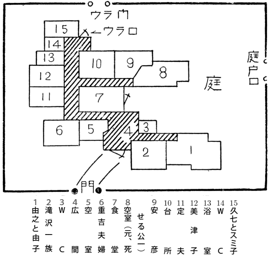

登場人物
倉田由之 倉田家の当主。もと武道教師。今、漁場土建ボス。
同 公一 由之の長子。昭和十七年轢死。
同 由子 公一の妻。
同 仁一 公一の子。昭和十七年公一と共に轢死。
同 安彦 由之の次男。現代版丹下左膳となって復員。
同 定夫 由之の三男。バンタム級新人王。
同 美津子 由之の次女。
定夫に電話をかけた女 （後に名前も現れます）
滝沢三次郎 由之の秘書。倉田家に同居。
同 起久子 由之の長女。三次郎と結婚。三歳の幼児あり。
杉本重吉 下男。中学時代、由之の武道の弟子。後、朝鮮にて巡査。邪教にこって日本へもどり、倉田家の下男になる。
同 モト その妻。倉田家の女中。
同 久七 その長男。夜釣りを業とす。
同 スミ その長女。倉田家の女中。
終戦の年から二度目の八月十五日を迎え、やがて秋風の立つ季節になった。
その暮方、私はちょうど小説を脱稿したので、久し振りに
もとより遠慮のない間柄であるから、なんの訪いもなく勝手に扉をあけてはいって行くと、若い青年と、若い婦人の先客がいて、何やら用談の気配である。遠慮のない間柄とは云っても探偵事務所のことであるから、そこにはおのずから節度がなければならない。
「ヤア、失礼々々」
と、私が逃げだしかけるのを博士がよびとめて、
「いえ、もう、話が終ったところですから、いゝのです。先生、これから、パイ一でしょう？ アハハ。探偵商売だもの、分りまさア。せっかくのカモがきてお誘い下さるというのに、これを逃がしちゃ、当節、たった一つの胃袋が持たないや。胃袋というものは神経のこまかいもので、ヒステリー、鬱病、ひょッとすると分裂病なども、このへんから起きてくるのかも知れませんぜ」
博士はパイプをくゆらしてニヤニヤした。巨勢博士がホンモノの博士でないのは先刻不連続殺人事件で御紹介ずみのところであるが、まだ三十そこそこの若僧、むかし私に弟子入りしたことがあるから、私を先生などゝよぶが、小説など書いたことはない。不連続殺人事件で一躍名をあげたから、探偵事務所などをやりだしたが、実はヤミ屋事務所かも知れず、この博士のやることは見当がつかないのである。
なるほど二人の訪客は、まさしく話が終って、すでに帰り仕度をとゝのえ終ったところに相違ない。そのくせ、二人とも、煮えきらなくモジモジして、私が室内へはいり、椅子にかけても、私の存在には関係のない別のことで、困惑しきっている様子であった。
「どうしても、あれがホンモノの兄貴なのかなア。ホンモノだとすると、だいたい丹下左膳という奴は、バッタバッタと右に左に人を殺しやがるもんで、油断がならねえや。オレはもう、あんな丹下左膳の出来損いと同じ屋根の下に住むのは、イヤになった」
と、青年がつぶやいた。二十三四、大男ではないが、ガッシリと、体格のすぐれた青年であった。
「じゃア、美津子、オレは当分、小田原の家へは帰らないぜ。用があったら、サクラ拳闘倶楽部へ電話かけてくれよ。あそこに居なくっても連絡つくところに居るから」
「あら、定夫兄さん、用心棒みたいな兄さんが居てくれなくちゃ、それこそ私たちが困るばかりじゃありませんか」
「冗談云っちゃアいけないよ。ボクシングのバンタム新人王だの何だの云ったって、丹下左膳現代版に太刀打ちできるもんかいな。お前さんも早いとこ家出して、友達のうちかなんかへ当分ころがりこむことだな。さもないと――」
定夫青年の顔付は、にわかに真剣に、血の気がひいて、殺気立った。
「オイ、一刻を争うぜ。今夜、
気違いじみて殺気だった定夫に対して、向い立つ美津子の態度は、冷静に、堂々として、まことに美しく冴えるような目ざましさだった。
しばらくの沈黙の後、美津子は、キッパリといいきった。
「定夫兄さん。変なこと
「バカな。安彦兄さんが殺ったんだ。一週間目に運よく赤紙がきた。そして死んだと思ったら、丹下左膳になって、生きて帰ってきたんだ。だいたい考えて見りゃ分るじゃないか。安彦兄さんの出征中は、家には、何事もなかったじゃないか。してみりゃ、安彦兄さんでなくって、誰が人を殺すものか。丹下左膳が被害者になるなんて、バカな。ねぼけたことを言うもんじゃないぜ」
「いゝえ、ねぼけているのか、とぼけているのか知らないけど、それは定夫兄さんのことよ。安彦兄さんは、必ず殺されてしまいます」
「なぜだ。そして、誰が殺すのだ」
「誰だか、知りません。然し、大兄さんと坊やを殺した犯人が殺すのです」
「なぜ」
「なぜなら、安彦兄さんは、その犯人を知っているからです」
定夫はヘッ、クソという面持で、沈黙した。すると、パイプをくゆらしていた巨勢博士が、まるでもう埒もない世間話でもするような屈托のない様子で、ニヤニヤと美津子に話しかけた。
「失礼ですが、お嬢さん。安彦兄さんが犯人を知っていると仰有るのには、証拠があるのですか」
「ございます。ハッキリとした証拠が」
美津子の澄んだ目は、きびしく巨勢博士に向けられていた。
「安彦兄さんに召集令の参りましたのは、昭和十七年の一月末、ちょうど大兄さんと坊やが殺された日から一週間目でございました。警察では、安彦兄さんも犯人の一人として疑っていたかも知れません。けれども、当時の状況として、家内中の殆ど全員が容疑者らしい不利な条件をもっていました。そのくせ、誰一人確たる証拠もありませんので、警察でも、安彦兄さんの出征をひきとめる確信がなかったのだろうと思います。出征の前夜に、安彦兄さんは遺品として、先程御鑑定を願いました手型と、もう一つ、ひそかに私をよび寄せて、一冊の日記帳を手渡しました。昭和十七年度の日記帳でございます。自分が戦死の暁に中をあけてみるように、と言い含めまして、包み紙のようなもので、幾重にも、ていねいに、堅く包んで、封印されておりました。この包み紙の表に、マルコ伝第八章二四という謎の一行が、大きく、ハッキリ書いてありました」
「マルコ伝第八章二四……」
巨勢博士は呟いていたが、書棚の片隅から新約聖書をとりだした。彼の書棚は講談落語の類ばかりと思っていたら、聖書なぞというものも、あったのである。
これを開いて頁をくっていた巨勢博士は、その表情がひきしまった。
「お嬢さんは、日記をあけてごらんになりましたか」
「それをあけて、見ておれば、今さら、こんな不安な思いに悩む筈はございません」
そう答えて、しばし力なく茫然たる様子であったが、
「先程も申しあげました通り、遺品の手型はカトリック大辞典にはさんでおきましたが、日記帳の包みは、事重大と思いまして、特に私の机のヒキダシへ隠しておきました。ところが昭和十九年末、空襲の気配も近づきまして、荷物だけ田舎へ疎開という時に、机のヒキダシをしらべますと、この日記帳の包みだけがなくなっておりました」
「日記帳の話を誰に洩らされたのですか」
「私は誰にも洩らしません。又、兄さんも洩らしたようには思われません。なぜなら、私だけよびよせて、ひそかに托したのですから。けれども、一つ思い当りますのは、その晩は出征前夜で、兄さんは酔っ払っておりましたので、内密話のくせに、声が高かったこと、もう一つ、兄さんが、毎日、日記をコクメイにつけていたということは、家内中誰知らぬ者がなかったのです」
「何とか伝の何章とかいう文句は、なんの
定夫は妹に向って噛みつくように、きいた。美津子は答えようとしなかった。やゝ長い沈黙の後、巨勢博士がつぶやいた。
「人を見る、それは樹の如きものの歩くが見ゆ。という文句なんですがね。さアてね。余は犯人の姿を見たという謎ですか、どうか。それ以外に、考えようがないのかも知れませんな」
「フン」
定夫は呟いたが、そのふてぶてしそうな見せかけに拘らず、内心の驚愕は大きいようであった。そして、何かを、とりとめなく疑りだしてキリがないという様子でもあった。
「オレはとにかく、今夜からは、サクラ拳闘クラブへ居候の合宿だ。何が何だか知らないが、丹下左膳現代版は、どうも、胸騒ぎを、させやがるよ」
そのとき、巨勢博士が、ニヤニヤと、だしぬけに私に話しかけた。
「どうでしょう、矢代先生。そのへんで一杯のんで、今夜はひとつ、箱根泊りとシャレませんか。残暑払いに快適でさア。僕が先生に弟子入りしたころは、先生は小田原住いで、時々箱根へお伴を仰せつかったものだったけど、あの味は忘れられないな」
まったく私は戦争の始まる前から小田原に住んでいたのである。サイカチ通りという所があって、私はその奥に住んでいたが、サイカチ通りの妙に閑静な家並というものは、眠ったような風趣があって、今も忘れることができない。
「よかろう。ひとつ、今夜は箱根へのそうや」
と、私も腰をあげたが、こういう偶然な発端によって、私まで、復員殺人事件の渦にまきこまれることになったのである。
昭和十七年といえば、私はまだ小田原に住んでいた。そして、この事件の発端については、いくらか耳にしていた。とはいえ、当時は戦争熱のタケナワの頃のことで、土地の新聞もさしたる報道を行わず、巷説も、他殺、自殺、いゝ加減なものだった。私は今、巨勢博士や当事者から得た新しい材料によって、この発端の惨劇について詳細の報告をしておかなければならない。
倉田由之といえば、この海道筋で屈指の成金の一人であった。元は中学校の武道教師で、柔道五段、剣道四段という荒武者なのである。ブリの
話は昭和十七年にさかのぼり、当時彼の長男の公一とその一子仁一が冬の暮方、海釣りの帰りに轢死した事件が起った。
倉田家は小田原城外の野球場の山上に大きな邸宅があり、早川口で海釣りをして帰るには、当然
一見して二人は轢死であるが、父と子が釣りの帰りに揃って轢死というのが不思議であった。踏切りを通るわけでもなく、線路沿いに平行して歩くだけのことで、特に轢死すべき条件もないのである。
検屍の結果、ほかに不思議はなかったけれども、公一も仁一も、顔面に一撃をくらった跡があった。轢死に際して顔面が何かに強打されたという判断も成り立つけれども、ほかにさしたる外傷がなく、二人揃って顔面にだけ一撃をうけた跡があるのがおかしかった。
警察の判断は謀殺であった。暮方五時、あたりはもう暗い。早川口の海釣りからの帰り路はきまっているから、何者かゞ待ち伏せていて、公一父子をノックアウトし、昏倒した両人を線路にねかせて轢死の風を装わしめたという解釈であった。この山径は、昼間でも、殆ど通行人のないところであった。
当時、倉田家の家族は、当主由之のほかに、死んだ長男公一父子、公一の妻由子、次男安彦（当時二十五）三男定夫（当時二十）安彦と定夫の間に長女起久子（当時二十二）が滝沢三次郎と結婚し、滝沢は倉田由之の秘書であり、倉田家に同居していた。末の娘が美津子で、そのとき十七、まだ女学生であった。
このほかに、一風変った雇人の一家族が住んでいた。杉本重吉（当時四十五）その妻モト子（当時四十三）長男久七（当時二十一）長女スミ子（当時十八）の四人家族であるが、下男重吉、又の名は蛸の重吉とか蛸重といって、この町の奇人の一人であった。
重吉は、由之が武道教師をしていた中学での教え子であり、柔道の主将であったが、五年の中学生活を九年かかって卒業したという
五年ぐらいは平和であったが、やがて重吉は龍教というものに凝りだして、巡査をやめてしまった。龍教といっても、殆ど知る人もない怪しげなもので、裏長屋の片隅の狐憑きのような婆さんが、気違いじみた僅かな信徒を相手に言いたてた咒術のようなものだ。御神体が孔子だという。このへんが日本と大いに違っている。重吉は巡査をやめて、龍教の信徒総代、教祖の参謀みたいなものになってしまった。
それからは、モト子にとっては忍苦の年月であったが、日毎の食事にも窮し、重吉と子供をすてゝ、故郷へ逃げて帰ってきた。渡鮮して十年目のことであった。それから半年、二児を抱えては重吉もさすがに窮して、これも故郷へ舞い戻ったが、意気必ずしも銷沈せず、二児と共にかゝえてきた荷物といえば、石頭に似もやらず、三十冊ほどの孔子に関する書物だけであったというから、その意気や壮と申すべきところかも知れない。
重吉はクッタクがなかった。彼は自分の家などへは戻らなかった。停車場から、まっすぐ恩師倉田由之先生を訪い、爾後の生活を托したのである。由之はすでに武道教師をやめて、網元、船元であり、新興実業家でもあれば、顔役でもあった。重吉の働く仕事はいくらもあったが、重吉はみんな辞退し、下男奉公を志願した。彼は快活であり、暢気であった。モト子も元の枝へ戻って、倉田家の女中となった。重吉は忘れたように、龍教のことなどはオクビにも出さなかった。
重吉はクッタクなく快活であったが、やること、為すこと、昔の石頭の豪傑時代さながらの粗野、無礼、それが病弱で腺病質の公一と、事毎に対立した。
重吉は
重吉は又、夜になると、便所へ立たず、平気で窓からジャア／＼やった。それを咎める者があっても、なアに、オレが毎日掃除する庭だから、明日は又、オレがキレイに掃除するから心配しなさんな。アンタも、窓から、やりなさい。オレがキレイに掃除してやるから、と、平然として答えるだけであった。相手が公一のようなヒステリックな怒り方、叱り方であれば、彼はそう答えてから、クルリとふりむいて、ブッと屁をたれるだけのことであった。
重吉の野放図な性格は、変な風に形をかえて、
「キサマ、ツルベを落して、そのまゝにほったらかして、後で水が汲めんじゃないか」
と、怒鳴りつけた。
「なに、汲めますさ」
久七は平然たるものだった。公一がいきり立ったのは無理がない。
「よし、じゃア、オレの見ている前で、今、汲んでみろ。汲めなかったら、キサマ、どうする」
「クビをやる」
久七も額にビク／＼と青筋を立てた。井戸の横手に塀の修繕に用いて余った大谷石が積まれていた。久七は、その石をかついできて、ドカン、ドカン、井戸へ投げ落した。井戸といっても、撒水専門の底の浅い水溜めのようなものであったから、やがて石でいっぱいになり、水が溢れてしまった。そして久七は、ジロリと公一を睨んで、何も言わず立ち去った。
もっとも、その夜の一晩の中に、久七は、ひとり、井戸へもぐって、投げ落した石をみんな持ち出して、元の通りにつみ重ねた。投げ落すのと違って、一つ十五貫もある石を担ぎだすのは大仕事であったが、彼は翌朝、疲れた色も見せなかった。
昭和十七年一月末、公一父子が惨死する前日に、この一族と公一と、又しても、猛烈な争論を起した。
便所から出てきた久七が、非常にていねいに手を洗っているのを、公一が見咎めたのである。公一はツカ／＼歩みよって、その手をかいだ。
「アッ、キサマ」
公一は奇怪な発見に度を失って、顔色を変えた。
「キサマは、ケツを、手の指でふいたな」
「なアに、いつものことですさ。この物の不自由な時に、そうでなくたって、手の指は、そのために使うためにあるものだアね」
その時、横手から、ワッハッハッ、と笑い声をたてたのは、たまたま、居合した久七のオヤジの重吉であった。
「若旦那は、今まで知らなかったかね。オレは朝鮮にいた頃から、もう二十年ちかく、紙でケツをふいたことはなかったね。ここへきて十年にもなるのに、若旦那の眼力が、今ごろ、ようやく見破るとは」
重吉は、よろこんで、ゲタ／＼笑った。
公一は物も言わなかった。彼はふりむいて、重吉らの住む部屋へ駈けこみ、そこに居合したモト子をつきとばし、押入をあけると、重吉一家のフトンや品物を手当り次第、窓から外へ投げすてた。
「出て行け！ たった、今、出て行け！」
彼は品々を手当り次第投げすてながら、蒼白となって、狂い叫んだ。
発作がおさまって後も、公一の決意は変らなかった。彼はその日の夕食後、父の由之に向って、不潔な重吉一族をこの家から追放することができなければ、自分がこの家を立ち去ることを提言して、ゆずらなかった。
「あれが出て行くと、この大世帯じゃ、すぐにも人手に不自由ですからな。私から、今後をよくいましめますから、今度のところは見逃してやっていたゞけませんか」
と起久子の聟の滝沢が言った。そう言わざるを得ないのが滝沢であった。なぜなら、由之は、こういうことには風馬牛で、どちらかと云えば、神経質で、事々にイライラと女々しく騒ぎ立てる長男の公一よりも、むしろ牛のような下男一族を、かばう気風すらあったからだ。滝沢が、こういう風に口をきいてやらなければ、ウルサイ、と、一言のもとに、怒鳴りたつのが由之であった。
「まア、そうさ。兄さんみたいに、神経質にガミガミ云ったって、この戦争じゃア、我々だっていつ手でケツをふかなきゃならないか分りゃしないね。今だって、もう、ろくすっぽ、紙なんかありゃしないじゃないか。兄さんだって、今に、手でケツをふくようになるのかも知れないよ」
と、次男の安彦が和した。その言葉に嘲りなどはなかったが、ユーモアが、嘲りのように、公一のカンにひゞいた。
殺気立った公一は、やにわに安彦を殴り倒した。不意をつかれた安彦は、椅子と共に、部屋の隅にころげていた。
この一家族は、女達と、腺病質な公一をのぞいて、いずれも体格のガッシリしたスポーツマン一家であった。安彦は文科に籍のある学生だったが、腕力では、公一と段違いの筈であった。安彦はゆっくり起き上って、唇から流れる血を手でふいた。そして、それから滝沢が、安彦をだきとめなければ、今度は公一が一撃のもとに殴り倒される段であったに相違ない。ここで、すべてはウヤムヤとなり、みんなが自室へひきあげた。
その翌日の午後五時十五分頃、公一とその子の仁一は、早川口の海釣りから帰る途中に、轢殺されていたのであった。
巨勢博士と私は、定夫、美津子の兄妹と別れて、一杯やった。倉田公一父子の轢死事件といえば、当時私も小田原に住んで、小耳にはさんでいたゞけに、あの兄妹がその一族であり、巨勢博士へ依頼の件が、その事件につながる意味のものときいて、好奇心はボツ然とわき起った。
あの事件後一週間目に応召した安彦が、帰還したのである。ところが彼は、すでにビルマで戦死したという公報がはいっていた。戦死者の帰還――それだけのことなら、敗戦日本によくある話の一つにすぎない。倉田家の場合は、ちょッと話がちがっていた。
この前日――つまり、昭和二十二年九月十七日のことであるが、ヨレヨレの白衣をまとうた一人の傷痍軍人が倉田家の玄関に立っていた。彼には右手がなく、左足がなかった。つまり、定夫の曰く丹下左膳現代版なのである。おまけに、丹下左膳は片目であるが、彼は両眼が失明し、砲弾の破片に片アゴをもぎとられ、鼻はつぶれ、言葉を喋ることまで、できなかった。
この現代版丹下左膳は、なれない左手で倉田由之と書いたものを駅員に示し、タクシーで、この玄関まで乗りつけたのだが、その変り果てた風貌から、家内の誰一人、これを安彦と認定することが出来なかった。無理もない。彼の顔は弾片でえぐられたデコボコの道路のようなもので、特定の人相を失っているのであった。
言語も視力も失ったこの怪人が、しきりに突き出して見せるのは、その残った左手であった。取次にでた女中のスミ子（重吉の娘）が、これを物乞いとカン違いをしたのは当然であるが、あまりのシツコさに、起久子、由子、美津子らも現れ、やがて美津子が閃くように、左手を差出す意味をさとったのである。
安彦は応召の前夜、昭和十七年の日記帳を厳重に封じて、ひそかに美津子に托して行った。自分が戦死した時に、中をあけて見るように、と言い残して。
然し、それと同時に、彼は、酒の酔いに乗じ、遺品と称して、左手の手型を紙に残した。それは酒席の家族一同が見て知っていたことなのである。その手型は、兄の形見として、カトリック大辞典の間にはさんで、美津子が保存していたのであった。美津子はそれを思いだした。
そこで、現代版丹下左膳の左手の手型をとり、形見の手型と二枚を持って巨勢博士を訪ねて、鑑定を依頼した。果然、二つの手型は同じ物であったのである。
「こいつは、面白いことがありそうだね」
私たちは東海道線で、箱根へ向っていた。私の胸は、先の興味と酒興にかられて、ちかごろ例がないほど浮き浮きしていた。
「面白い、か。面白いと云えば、ねえ」
巨勢博士の声は、平常に似合わず、沈んでいた。
「どうも、先生、面白い、というより、ちょッと、凄味のありすぎるようなことが起るような気がするんですがね。すべてが、まずく行っていますよ。安彦氏は犯人を知っている。そして、犯人を知っていることが、犯人に知られている。なぜなら、犯人は日記帳を奪ったから。又、遺産相続の問題もあります。生きて還ってきたところで、どうせ、殺されるようなもんじゃありませんか」
私は博士が、こんな暗い顔をしたのを、めったに見たことがなかった。そこには、更に言外の意味があるようであった。もっと怖しい何かを博士は予知しているのではなかろうか。その、すさまじさが、私に次第にしみこんできた。無理もない。私の気のつくことが、おそすぎたのだ。誰も博士に箱根くんだりへ来てくれなどゝ依頼してはいないのだ。しかも博士は、やにわに、箱根を――いや、云うまでもなく小田原だ、小田原をさして急行しているではないか。
小田原へついたのが、ちょうど夜の九時半。私が箱根行きのタクシーをつかまえようとすると、巨勢博士が私を制した。
「ちょッと、より道があるんでさア。まア、ちょッと」
博士は私を自動電話の方へひっぱって行った。
「ちょッと、ここの捜査主任に会って行きたいんですよ。捜査主任は知り合いなんです。先に、この署の事件に僕が手をかしてやったことがあるものですからね。警察なんてところは、昼間行くもんじゃありませんや。一人一人会ってみれば、みんな当り前の人間なんですが、商売意識という奴で、警察全体の感じというものは、二度と足をふみ入れたくないものですな」
自動電話のボックスへ行くと、先客があった。洋装の、いかにもスラリとした、ダンサーとでもいうような感じだが、今私たちと同じ汽車で東京から着いたものらしい。今しも、電話が通じたところで、きくともなしにきこえる声に、私はいさゝか度を失った。
「倉田さんでございますか。定夫さんいらっしゃいますか」
女は倉田定夫を呼びだしているのである。
バンタム新人王定夫君は、今しがた東京で私たちと別れて、サクラ拳闘クラブへ泊りに行った筈であった。果して、電話の声は不在を告げたらしい。
「どちらへおでかけか、分りませんでしょうか。今夜はお帰りでしょうか」
女はしつこく問いかけたが、答えが得られなかったらしい。あきらめて、受話器をおくと、困りきった顔をして、扉を排して現れて、私たちに、
「お待たせ致しました」
と、挨拶して、行き過ぎようとした。巨勢博士は、女をよびとめた。
「失礼ですが、倉田定夫さんにお電話なさったようですね」
女はうなずいて、博士を見つめた。二十三四、ちょッと、美しい女だが、娘だか、商売女だか、見当がつかない。ちょッと荒れた感じがあった。
「倉田定夫君でしたら、今、東京におりますよ。今夜は東京泊りだそうです。なぜかと申しますと、夕方五時半ごろ、僕は定夫君と会いましてね、定夫君は当分東京へ泊るつもりだと申しておられましたよ。サクラ拳闘クラブへお問い合せになると、なんとか返事がきかれるでしょう」
「失礼ですけど、定夫さんのお友達の方でいらっしゃいますか」
「えゝ、まア、拳闘仲間ではありませんがね」
「お住居は小田原？」
「いゝえ、僕たちは東京の者です」
女はガッカリしたようだった。女は、しばらくためらっていたが、
「私は定夫さんがこちらにいらっしゃることを
「さアてネ、僕の耳にした言葉に関する限りは、きゝ違いはありません。然し、定夫君が胸の思いと別なことを僕の耳にきかせたのかも知れませんが、然し、あの瞬間に、たぶん定夫君は、あなたとの約束を忘れていたんでしょうな」
巨勢博士はそう云って、自分が約束を忘れたような、すまなそうな顔をした。
「つまり、なんです。突然、小田原の家へ戻りたくないような事情が起ったんですな。いえ、これは決してあなたに拘りのあることじゃアないんで。要するに、家庭的なイザコザなんです。どうも、はや、そういうわけで」
と、巨勢博士は益々すまなそうに、どもった。
「じゃア、駅でお待ちしても、ムダですわね」
「さア、そこまでは分りませんが。なにしろ、どうも、定夫君があなたとの約束を思いだして、それから、どういう処置をとるか、これは僕には分りませんや。思いだして、駈けつけてくれりゃ、いゝんですがね」
「これから東京へ戻ったって、私の家へ帰るには、私電がなくなっていますわ。すみませんけど、御存知の旅館へ紹介していたゞけませんかしら」
「僕が又、小田原は土地不案内でしてね」
巨勢博士は頭をかいた。
「先生、どこか、このへんの旅館、知ってませんか」
私も小田原に住んではいたが、旅館に知り合いはいなかった。もうちょッと下品な方なら知り合いがあるかも知れぬが、そこは御婦人が自ら乗りこむ性質の場所ではない。
「いゝわ。そのへんで泊るから」
女は決然と言いきると、もう、私たちには目もくれず、駅前の旅館の方へスタスタと歩き去った。
「さア、さア、巨勢君、こちらへ、おあがり下さい」
と大矢捜査主任に招ぜられて、座敷へ通った私は、その顔を見て、ビックリした。私の知っている顔なのである。
私が小田原に住んでいた時、泥棒に見舞われたことがある。そのとき警察の人々と親しくなったが、今でも忘れることのできないのは、大矢警部補と三村刑事であった。探偵趣味のある私は、私の家へ見舞った泥棒氏について色々と推理をたてたが、素人の推理というものは埒もないもので、大矢警部補と三村刑事が、長い経験から、各状況について実際的な判断を下すのをきいていると、私の推理の空想性というものが非常にハッキリして、大いに敬服したものであった。その時の大矢警部補が今は捜査主任になっているのである。彼も私を覚えていて、呵々大笑した。
「矢代さん。あなたの所の泥棒は、いまだに捕りませんよ。まことに面目ありません。あゝいう流しの泥棒は苦手でしてネ、同一犯人が同じ土地で何回も犯行をやらかす場合と違いまして、鳶が品物をさらって逃げたようなものですよ。ひとつ、あきらめて下さい」
私の場合は、夏場に避暑のヨタモノがコソ泥をやって逃げたという性質のもので、被害も大きいものではなかった。偶然以外に犯人のあがる見込みのないことは、私ものみこんでいた。
「実は、大矢さん、昭和十七年の一月末に、倉田公一、その子仁一という二名が海釣りの帰り路に轢死していた、という事件があった筈でしたね。それについて、当時の状況をお尋ねにあがったのですが」
こう巨勢博士が言いかけると、大矢捜査主任の顔色がひきしまった。
「あの事件について、君の方に、何か、きゝこみでもあったのですか」
「いえ、きゝこみというほどのものはありませんが、たゞ、昨日の暮方ですが、ビルマで戦死した筈の倉田安彦という次男坊が、生きて戻ってきたのです。片手、片足、失明、オシ、という現代版丹下左膳となりましてね。御存じですか」
「いや、知りません。然し……」
彼の顔色の改まるのが、一様ではなかった。私は知っているが、警察官も、巡査と違って、犯罪の現場で叩きあげた刑事とか捜査主任などゝいうものが、めったなことで顔色の改まるのを人に見せはしないのである。さすがに彼は、直ちに顔色を和げて、
「巨勢君。そんな話があるなら、おきゝしたいのは、こっちの方ですよ。いったい、どうして、それが君に知れたのですか」
巨勢博士は現代版丹下左膳の帰還について、定夫と美津子が二つの手型の鑑定をもとめに来たこと、二つの手型が明かに同一人のものであることを説明した。
「もう一つ、附録があるのですが、安彦氏が公一事件の犯人を知っているということを御存じですか」
大矢捜査主任は大きな驚愕を隠さなかった。
「犯人を知っているって？ 安彦氏が。ほんとですか。犯人は誰です？」
「それが、まだ、分らないのですよ」
巨勢博士はニヤニヤした。
「犯人を知っているだろうと思われるワケがあるのです。安彦氏は応召の前夜、昭和十七年の日記帳をていねいに紙に包んで封じたものを、妹の美津子さんに、ひそかに渡したのです。自分が戦死したら、中をあけて見るようにと申し残しましてね。ところで、包み紙の表紙に、マルコ伝第八章二十四と大きな字でハッキリ書いてあったというのです。マルコ伝第八章二十四と申しますのが、つまり、人を見る、それは樹の如きものの歩くが見ゆ、という文句なんですがね。そこで、犯人を見た、という謎じゃないかというわけなんですが、この日記帳が、昭和十九年末の疎開に当って、美津子さんが机のヒキダシをあけてみたら、紛失していることが分ったというのです」
大矢捜査主任は異常な熱心さで、きゝいっていた。然し、一言も、発しなかった。巨勢博士が、にわかに笑いだした。
「大矢さん。そろそろ、種を明かして下さいませんか。僕に……お喋りさせるなんて、罪ですぜ。僕の話は、これで全部、もう、終りです。あなたが、そんなに顔色を改めて謹聴するなんて、よほどの種がなきゃ有りっこないじゃありませんか」
大矢捜査主任は、うなずいた。
「君の話で、私がビックリするワケが、あるのです。この一ヶ月ぐらい前から、署へ投書する者があるのです。倉田事件は単なる轢死や自殺ではなく、謀殺だから、犯人を探せ、という意味のものなんですね。これが筆で書いたものではなくて、新聞雑誌から文字をきりぬいて、はり合わせたものです。都合三回ぐらい、同じ投書が来たのですがね。我々も、倉田公一事件は、殺しだろうという見込みをすてゝはおりませんから、妙な投書がくるものだ、もう一度、ひっくり返して調べてみたいという気持は動いていたのです。特に三村刑事が熱心で、あの男は、事件まもなく応召して、帰還したばかりだから、尚更、忘れられないのでしょうよ。或いは、もう、それとなく手をつけはじめているかも知れません。あれぐらい、仕事に熱心な男も、珍らしい……」
大矢捜査主任は言葉をきって考えこんだ。たしかに、妙な暗合である。彼はふと思い直したように顔をあげた。
「安彦君が犯人を見ているとすれば、或いは、そうかも知れないのです。なぜなら、あの家族の大多数は、あの時刻にアリバイがなかったのです。いずれ、くわしいことは、調書を見てからお話しますが、私の記憶では、あの家族の男の全員にアリバイがなかった。重吉という下男父子にも安彦君にも、その他の全員にアリバイがなかった筈です。然し、どうも、気にかゝる暗合だね。もし安彦君が犯人を見ており、それを又犯人が知っているとすれば、いったい、どうなる？ 今夜にでも」
「左様、今夜」
巨勢博士の答は間髪を入れなかった。大矢捜査主任は、考えこんでいたが、ギロリと目をむいて立ち上ると、家人に三村刑事をよぶようにと、電話を命じた。
「あの一家は、まことに複雑な一家でね。この町では、色々の悪い噂があるのです。あなた方は、町の人々が、誰を犯人と噂していると思いますか。ねえ、巨勢君？」
「さア、町の噂でしたらねえ」
巨勢博士は頭をかいた。
「町の噂だったら、蛸の重吉先生か、その倅じゃありませんか」
「とんでもない」
大矢捜査主任はニヤリと笑った。
「さすがの巨勢大探偵でも、この一族の内面生活が分らなければ、そう答えるのもムリがないのです。町の人々は、父親の由之氏が犯人だと思うもの、その共犯が娘聟の滝沢だと思うもの、乃至、由之氏の意をうけて滝沢がやったと思うもの、だいたい、この三ツ。要するに、主たる者は父親の由之氏ですよ。なぜならば、長男公一の妻女由子、目下は由之氏の夫人が妾のようなものですからね。この関係が、公一君の生前から有ったことは、町では相当知られていたのですよ」
「由之氏の正夫人は？」
「とっくに死んでいます。バアの女将や芸者などを妾にしていたこともあるし、今もそうかも知れませんが、その方面では、今でも壮者をしのぐものです。尤も、腕力の方も、今でも相当の猛者ですがね」
三村刑事は相当の時間がすぎてから、自転車でやってきた。
「ちょッと用があって、遠出しておりまして、おそくなりました」
彼は私の顔を見て、思いだしてニコニコ挨拶した。さすがに刑事というものは、記憶のよいものである。
「実は倉田公一事件のことで、巨勢さんがわざわざ情報をもたらしてくださったんだがね」
と、大矢捜査主任は、丹下左膳現代版帰還のこと、彼が犯人を見て知っていること、それらの事情を説明した。
「そうですか。私も、あの一件のアリバイについて、目下サグリを入れかけているのですが、安彦氏がハッキリ犯人を見たとすれば、然し、なぜ、応召の前に言わなかったのだろう？」
三村刑事は口をつぐんだ。さすがに刑事のカンである。そこが急所の一つであるに相違なかった。私は名人芸を見るように、陶酔した。
「然し、君、そんなことは後廻しだよ。安彦氏が犯人を見て知っているとすれば、それでいゝのだ。今、我々に必要なことは、一刻も早く、今から直ちに、安彦氏に保護を加え、犯人の手からまもること」
大矢捜査主任はセカセカと命じた。
「イヤ、まったく、御説の通りです。さっそく私がはりこむことに致します」
呼吸というものは、こう、いきたいものである。名人連の頭にひらめくことは、みんな同一であるらしい。三村刑事はすぐ立ち上った。然し、ふと、気がついて、
「はてな。そういえば、私は今、駅前を通ってきたのですが、駅の前に、倉田の三男坊、何と云いましたかね、拳闘の新人王という男がいますが、それが、立っていたのです。いや、たった、今、見てきたばかりですよ」
私はいさゝか戦慄を感じた。私はビックリして、巨勢博士の方を見たが、彼は平然ときゝ流して、驚いている様子もなかった。
考えてみれば、驚く必要はないのかも知れない。現に自動電話で見た女が、約束によって小田原へ来ているのである。その約束を思いだして、駈けつけてきたのかも知れない。然し、すべてが不吉であった。
「定夫君は一人でしたか？ 女が一緒にいませんでしたか」
素人のあさましさとはこのこと、私は、どうしても、こう訊かずにはいられなかった。
「そう、そう。定夫。定夫といいましたね。バンタム級新人王。彼は一人でした」
こう云いすてゝ、三村刑事がでかけようとした時だ。電話のベルがなった。知らせによって、受話器をとりに立った大矢捜査主任は、蒼ざめた顔をして戻ってきた。彼は、私たちには目もくれず、玄関でガチャ／＼靴をはいている三村刑事に叫んだ。
「おい、三村。どうやら、手おくれらしいせ。私もすぐ出かける。倉田家に殺しがあった。まだ、くわしいことは分らないがね」
それから我々をふりむいて、
「巨勢君、君の神速をもってして、手おくれでしたよ。皆さんも、一緒に、出かけましょう」

附記 小生、第二回目の探偵小説。前々からのお約束通り、作者より読者へ挑戦。犯人を当てられた方へ、作者より敗北料を呈上致します。
前回の「不連続殺人事件」の場合は正解四名ありました。そのほか、単に犯人の名だけ当って、推理の方はデタラメというのが三名、この三名の中に大井広介というウルサイ御方がはいっていたゝめ、小生、一向に敗北を感じなかったに拘らず、なにがしかの悪戦苦闘賞を呈上致しましたが、今回は大いに厳格、推理がデタラメの御方は、たとえどれほどウルサガタであろうとも、断々乎として、ダメ、ダメ、ダメです。なぜならば、これ即ち懸賞とは申せ正体は作者の敗北料であり、勝つか、負けるか、おのずから、定まるとこがあり、フェア・プレー・ゲームは本来そうきまってるじゃありませんか。
ちょッとお断り致しておきますが、「不連続殺人事件」の方程式でこの「復員殺人事件」の解答を割りだそうたって、全然ダメ、思うに、世界中の探偵小説みんな読んだって、ダメだろうな。
僕はこんなに早く、第二回目の探偵小説を書こうとは、夢考えていなかったのですが、たまたま精神病院へ入院させられて、読むことも、書くことも封じられたので、仕方なしに、第二回目の探偵小説のトリックを編みだしたという次第です。
奴メ、気違い病院で考えやがったんだから、犯人は気違いだろう、なんて、どうも軽率は、美徳ではないです。沈勇と申しまして、英雄豪傑は冷静水の如く、したがって、時到れば、引力を発見し、ピカドンの原理が閃くという次第です。
敗北料は、目下のところ三万円と致しておきます。
前回の「不連続殺人事件」の場合は正解四名ありました。そのほか、単に犯人の名だけ当って、推理の方はデタラメというのが三名、この三名の中に大井広介というウルサイ御方がはいっていたゝめ、小生、一向に敗北を感じなかったに拘らず、なにがしかの悪戦苦闘賞を呈上致しましたが、今回は大いに厳格、推理がデタラメの御方は、たとえどれほどウルサガタであろうとも、断々乎として、ダメ、ダメ、ダメです。なぜならば、これ即ち懸賞とは申せ正体は作者の敗北料であり、勝つか、負けるか、おのずから、定まるとこがあり、フェア・プレー・ゲームは本来そうきまってるじゃありませんか。
ちょッとお断り致しておきますが、「不連続殺人事件」の方程式でこの「復員殺人事件」の解答を割りだそうたって、全然ダメ、思うに、世界中の探偵小説みんな読んだって、ダメだろうな。
僕はこんなに早く、第二回目の探偵小説を書こうとは、夢考えていなかったのですが、たまたま精神病院へ入院させられて、読むことも、書くことも封じられたので、仕方なしに、第二回目の探偵小説のトリックを編みだしたという次第です。
奴メ、気違い病院で考えやがったんだから、犯人は気違いだろう、なんて、どうも軽率は、美徳ではないです。沈勇と申しまして、英雄豪傑は冷静水の如く、したがって、時到れば、引力を発見し、ピカドンの原理が閃くという次第です。
敗北料は、目下のところ三万円と致しておきます。
私たちの自動車が倉田家へついたとき、警察からの通報で交番の若い巡査がたった一人来ているばかり、滝沢起久子の屍体の前で、手の施す
警察の一行を出迎えたのは、女中のモト、スミ子の母子二人の女だけ、この惨事に、この大邸宅に、ほかに迎える人の姿がないのである。
大矢捜査主任は若い巡査に、
「いったい、ほかの家族は、どうしたというのだね。まるで、アキ家か、さもなければ、人殺しぐらい、なんでもない、というワケなのかい」
「それで困っていたのです」
と若い巡査は困惑しきった顔色をみせた。
「被害者の夫の滝沢三次郎氏は不在。居る筈の会社へ電話をかけましたが、こゝにも居りません。ほかの家族は扉をたゝいても寝入りばなで一向に起きてくれませんし、三男の定夫氏も不在、おまけに、召使いの杉本重吉、久七の親子も不在なんです」
巡査は切なそうにモトとスミ子の顔を見た。モトとスミ子も切なそうに何か訴えそうであったが、大矢警部はクルリと背を向けて、熱心に屍体を調べはじめた。待機していた警察医と鑑識係が、活動をはじめる。死因は射殺。戸外から射たれており、ガラス窓に弾の通過した孔が三つある。二弾は胸部に、一弾は腰部に射ちこまれていた。
「被害者は寝床にはいって本を読んでいたんですな。犯人は外から声をかけたらしい。カーテンはおろされていない。窓には内側から鍵がかゝっています。被害者は本を伏せて起き上り、窓際まで来たところを、射たれたのですね。犯人はすくなくとも窓から一
三村刑事が言った。大矢警部も窓をメンミツに調べていたが、
「君は爆風のことを考えているのだね」
「えゝ、まア、そうです。一米半以内だったら、ガラスが破れると思いますが。もっとも、このガラスは、厚い。それにしても、爆発の力はうける筈だ」
「それは実地にたしかめてみれば結論はでるだろう。あした、ピストルを窓の外からブッ放してみることさ」
部屋の造りは洋風、洋窓であったが、内部は畳が敷かれている。子供の寝床を中央にはさんで夫婦の寝床が敷かれており、蚊帳が吊られていた。三次郎の寝床には人のねた跡がなく、起久子は寝床で本を読んでいたらしい。枕元に伏せてある本は漱石の「道草」であった。蚊帳の外の天井に百ワットの電球がついていたが、内部にも三〇ワットのスタンドが枕元にひきこまれて、これも点燈されていた。起久子は蚊帳をでゝ、窓際で、ことぎれていたのである。
「窓の外から誰かゞ呼んだ。あるいは、合図をした。そこで、本をふせて、でゝきた。窓に顔を近づけて、外をのぞいた程の位置にいたのでしょうな。窓と蚊帳の間は一米もありませんが、蚊帳の方にものけぞらず、窓の方にも倒れず、沈むように崩れたワケでしょうか。窓の方に倒れて、窓が破れたりすると状況が複雑になるのですが、現場を乱さず、うまく倒れてくれたものです」
三村刑事は感服したように云った。まったく、沈んで崩れて、俯伏したという倒れ方だ。解剖の結果を待たなければ分らないが、一弾は左胸を、一弾は右胸を、一弾は腰部を射って、弾丸はいずれも体内にとまっているらしい。あまり、もがいた跡もなく、即死であった。
一応状況を調べ終ると、大矢捜査主任は広間に捜査本部をもうけて、先ずスミ子をよんだ。ポチャ／＼した、ちょッと愛くるしい娘であった。
「警察へ電話で報せたのはお前だそうだね」
「はい」
スミ子は怯えているのか、うつむいて、蒼ざめた顔に唇をかんでいた。
「屍体を発見したのも、お前かね」
「いゝえ、私はウトウトねむりかけておりましたので、お母さんに起されるまで何も知りませんでした。それに私の部屋は離れておりますので、物音がきこえなかったのだろうと思います」
「グッスリねむっていたのではないのだね」
「妙に寝つかれなかったのでございます。それでもウトウトしたと見えまして、お母さんに揺り起されるまで、何も知りません。気がついた時は、お母さんが私に縋りついていました。お母さんは私に縋りついたまゝ、しばらく何も申しません。腰がぬけて、声もでなかった様子でした。ですから、私がお母さんから事情をきいて、起久子様の部屋へ参り、様子を見とゞけて警察へ電話をかけるまでには、相当時間が過ぎております」
「どれぐらいの時間だね」
「よく分りませんが、十分ちかい時間はたゞなんとなくウロウロしておりましたようです」
「お前は時計を見なかったかね」
「時計を見たのは、警察へ電話をかけて、着代えをしてからでございました。十一時二三分前でございました」
スミ子の部屋の置時計は十五分ほどすすんでいた。警察の電話が事件の報知をうけたのは、十時三十五分ごろであった。
スミ子は屍体に手をかけて抱き起してみたが、すでにことぎれていたので、また元の通りに俯伏せにして、電話をかけたのだという。そのとき手が血によごれたので、便所で手を洗った。その怖しさに、しばらくボンヤリして、頭が空転するばかりであったと言うのである。
「手に血のついたのが怖しかったのかね」
「手にも袖口にも血がつきました。私は警察に疑られるのが怖しかったのです」
スミ子は目に敵意をうかべて、思いきった顔付で言いきった。
「お前のお父さんは、どこへ出掛けたのか知らないかね」
「知りません」
また、敵意を見せた。
「お前の兄さんは何時ごろに家をでたかね」
「兄さんは夜釣りに出かけました。それが兄さんの仕事ですから。出掛けたのは七時ごろです。夜明け方まで帰りません」
そのとき、巨勢博士が、きいた。
「今夜、九時半ごろかね。倉田定夫君のところへ女の人から電話がかゝってきましたね」
スミ子の目にビリビリと驚愕が走った。電撃をうけたようだった。スミ子はようやくこらえて、巨勢博士を見つめた。そして、答えなかった。巨勢博士はニコニコした。
「そのあとで、定夫君から電話がきたのは、何時ごろでした？」
スミ子は俯向いて、唇を堅く噛みしめた。そして、貝のように、口をひらこうとしなかった。
「もう、よろしい。お前の部屋で、やすむがよい」
大矢警部はスミ子をさがらせると、三村刑事に、
「君、誰か走らせて、駅員にきいてもらってくれたまえ。バンタム級新人王の顔を知らない駅員はいない筈だ。それから、モトをよんで貰おうかね」
三村刑事は巡査にムネをふくめて駅へ走らせてのち、モトをつれて引返してきた。
「何も心配することはないのだよ。見た通り、きいた通り、語ってくれゝばいゝのさ。お前の主人はどこへ出掛けたね？」
「たぶんカストリでもひッかけに出掛けたのでしょう。毎晩よッぱらって、おそく帰ります」
「そうそう。蛸のように赤く酔っ払っている重吉といえば、十年さきからの名物男だものな。そして、何時ごろ出掛けたね？」
腰をぬかして、声もだせずに、娘に縋りついていたというモトが、そんな様子はどこにも見えなかった。
「八時ごろでしたかね。私は、あの人が何をしようと、あんまり注意していませんから、よく知りません。あの人のやること為すこと一々気にかけて、生きていられるものじゃありませんよ」
「久七は何時ごろ出かけたかね」
「あれは夕飯をたべると夜釣りにでました。私はお勝手の仕事をしていましたから一々こまかいことは知りません。皆さまの御食事が終って、あと片づけをして、私が一服したのは九時ごろでございましょう。もう、久七もウチの人もとっくに出掛けて姿が見えませんでした」
「それからお前はねむったかね」
「こんな晩に、ねむれるものじゃアございませんよ。あの方が、あんな姿でお帰りになりましてね。いッそ戦死なさりゃ、よかッたんでございましょうよ。私はウチの人にも申しました。あの方が帰って来たら、たゞでは済むまい、用心しな、とね。ほんとに、そうじゃございませんか。さッそくポンポンやりました。桑原々々。私はしばらく耳にフタをして、神仏に祈っておりましたネ。私は然し、殺された方が起久子様だろうとは、夢にも思っていませんでした」
「誰が殺されたと思ったかね」
「それは旦那様と思うのが当然じゃございませんか。あの方は、若旦那様親子を殺したのでございます。その次に旦那様を殺すツモリでおいでゞしたが、赤紙が来たので、思いとゞまったゞけでございましょう。思えば、あの方も気の毒でございます。由子様は安彦様が恋いこがれた初恋の方でございます。若旦那様は兄の権力で強奪なさったようなものでございますよ。由子様は強慾な方でございます。次男坊よりも長男坊、その長男坊も結婚してみりゃ、旦那様にうとまれて、いつになったら良い目が見られるか知れたものではございません。そこで旦那様と良い仲におなりでした。それが、あなた、若旦那様存命中の出来事、ハイ、戦争このかた人間はハデになりました。安彦様にしてみれば、どいつも、こいつも、叩き殺したくなろうじゃございませんか。気の毒な御方でございます」
グルグルッと目玉をすえて一人一人を睨み廻した。とても腰をぬかして声がでなかったという御仁の演技ではない。然し、大矢捜査主任はこだわらなかった。
「お前が銃声をきいたのは何時だね」
「何時ごろだか、私は時計を見たいとも思いませんから存じませんよ」
「銃声をきくと、お前はすぐ立上って見届けに行ったのかね」
「どう致しまして。私は神仏に十分ぐらいも祈っていました。どうか、ほかの誰かゞ音をきゝつけて叫んでくれるとよいと思いましてね。私はそんなものを見届けるなんてイヤでございますよ。けれども、いつまで経ってもシンとして、物音一つ起りません。ハイ、銃声は、ポンポンと三ツ四ツ起ったようでございますが、大きな音でございました。けれども、叫び声も起りませんし、そのまゝ何一つ気配もなく、静まりかえっているのでございます。そこで、ソラ耳かしら、と思いました。気を取り直して旦那様のお部屋の方へ行って見たのでございます。旦那様のお部屋は電燈が消えておりますが、滝沢様のお部屋はアカアカと電燈がついております。扉の上にガラスの小窓がありますので分るのでございますよ。そこで、滝沢様の扉をノックして、はいってみますと、あの有り様でございます」
「それから、警察へ電話したのだね」
「いゝえ、私は、もう、とりみだしまして、どうしてよいやら途方にくれてしまいました。自分の部屋へ戻って、何分間か、ふるえておりましたよ。これではいけないと思いつきまして、スミ子を起しに行きましたが、安彦様にバッタリ会いはしないかと、気もテンドウしておりました」
モト子とスミ子の供述のようだと、犯行時間は、警察が通報をうけた十時三十五分よりも二十五分前後早くなるのである。
「お前は誰かの姿を見なかったかね」
「どう致しまして。たとえ誰が居たにしても、私はそれを見ないように努めたでございましょうよ」
「安彦君は、片足、片手だというじゃないか。そんな人が、人殺しに出かけられると思うかね」
「そこは義足というものがございます。安彦様にしてみれば、腹も立つだろうと思います。旦那様は昨日チラと一目見たきり、それ以後は、食事の折にも、安彦様を食堂へおよびにならず、モト、あの丹下左膳は手足が不自由だろうから、部屋へ食事を運んで食べさせてやれ。食堂へつれてくるな、という御命令でございます。お国のためにカタワになって、家へ帰れば親兄弟からむごい仕打をうけて、よくよく哀れな御方でございますよ。それで私が今夜も申上げました。御腹も立つでしょうが、ジッと我慢あそばせ、短気は損気と申しますよ、とね。こんなことになるぐらいなら、あの方のお部屋の外からカギをかけて、押しこめておいた方がよろしゅうございました」
「イヤ、御苦労さん。また、あとで訊くことがあるかも知れないが、部屋へさがって休息しなさい」
と、モトをさがらせた。大矢捜査主任は三村刑事に、
「ほかの人たちは、起して、待たせてあるだろうね。安彦君をつれてきてくれたまえ」
「ハア。命じておきましたから、すぐ連れさせましょう」
と、立ち去ったが、まもなくセカセカ戻ってきた。顔色が変っていた。
「巡査が報告を怠っておりましてね。どの部屋もカギがかゝって応答がないというのです。オイ、そっちの部屋も、そうか」
三村刑事は廊下の奥手に張り番している巡査の方に怒鳴ったが、自分で立ち上って、とんで行った。はげしく由之の扉を叩いたが、やっぱり応答がない。
「モトはカギをかけずに安彦の部屋をでたといった筈だが、オイ、女中からカギをかりて、あらゆる部屋をあけて見ろ」
大矢捜査主任はそう命じた。数名の刑事がすぐ立って、モトに合いカギをださせて、各々の部屋があけられたが、各室から通報されたものは、意外な事実であった。
安彦。絞殺、死亡。
美津子。昏酔。反応なし。
由之。いったん返答せるも、フトンをかぶって熟睡をつゞけつゝあり。
由子。（由之の部屋に同居）いったん返答せるも、尚、完全なる覚醒に至らず。
それらの報告とまったく同時に、巡査にひきたてられてきたのは蛸の重吉であった。
「この男が今、裏門から帰ってきました」
そのとき、二十三時三十六分であった。大矢捜査主任は各々部署を定めて、刑事たちを各室へ走らせ、蛸の重吉を一室に足どめを命じた。
重吉はニヤリとして、お尻へ手を廻したと思うと、ブッと一発屁をつかんで、若い巡査の鼻先へくれてやった。
「アッハッハ。まアさ。栄養がよくなるよ。蛸の屁なんて、ほかではメッタにかげないよ」
カラカラ笑いながら、もう一つブッと放して、別室へ連れ去られた。
「滝沢三次郎は居る筈の会社にいないそうだが、探しに誰かだしたまえ。夜釣りの久七も探しに舟をだして夜のうちに連行してくれたまえ。それから、駅へ行った者から定夫の報告がくる筈だが、これも明朝までに足どりを辿って連行して貰いたいね。非番の者に非常召集だよ」
大矢捜査主任は注意を与えた。
三名の巡査が美津子をかゝえて、外の自動車へ運び去った。懐中電燈をぶらさげて現れた警察医が、
「催眠薬を多量に服用しているのですよ。すぐ病院へ運んで処置をして、間に合ってくれゝばよいが、手おくれになるかも知れません」
「安彦は死んでいるのですね」
「これは死後三時間ぐらい経過しているかも知れません。口のまわりに汚物をちょッと吐いていますが、食後まもなく殺されたようです。解剖すれば、ハッキリしたことが分ります」
「犯行は起久子以前ですね」
「一時間ぐらい早く殺されているように見受けられます」
「それでは、倉田由之、由子をみていたゞきましょう。こっちは美津子ほどひどくはない様子だが」
大矢捜査主任を先頭に、私たちは由之の部屋へはいった。広い洋室で、居間と寝室と兼ねている部屋である。ダブルベッドに由之と
警察医は由子の瞳孔をしらべた。明らかに散大している。脈搏をしらべて、
「頭が痛くはありませんか」
「重い感じが致します」
「眠りたりないようですね。起きていられますか」
「起きていられないこともありません」
「何時ごろ食事をなさったのですか」
「八時半ごろ終ったように思います。父はすぐ眠りましたし、私も九時の鳩時計をきいた時にはウトウト致しておりました」
警察医は、口を開けさせて調べてから、歩かせてみた。ちょッとフラツクだけであった。
「番茶でもガブ／＼飲んで排泄するだけでもよろしいでしょうが、念のため、ブドー糖でもうっておきますかね」
警察医は大きなカバンをひッかき廻して、注射器とブドー糖を探しだして、五十プロを一本うった。この人は著名な開業医だが、警察医を趣味でやってる変り者で、深夜の事件も一向に厭わず、嬉々として仕事をたのしむ様子であった。由子の処置を終って、愈々大矢捜査主任がフトンをはいで、倉田由之をだき起した。
「倉田さん」
「ナニ」
由之は、目をあけた。あたりを見廻して、警官にとりかこまれているのを、鋭い視線でたしかめた。
「まア、よい。話は朝にしてくれたまえ。朝までグッスリ、ねむらせておいてもらいたい」
由之の口からアルコールの匂いがプンプンした。
「倉田さん、あなたは催眠薬をのんだのを覚えていますか」
「ワシは催眠薬などは用いたことがない。ねむる薬は酒だけでタクサンだね」
「ところが催眠薬をのんでいるのですよ。誰かに飲まされているのです。さもなければ、あなたのような武術家が、こんなにダラシなく眠たがる筈がないでしょう。そんな気が致しませんか」
「なるほど。そういえば、ねむすぎるようです」
由之はまだ無自覚なのかも知れなかった。然し、ともかく、理性がはたらきはじめたようであった。
「ワシは五合ほどの定量をのんだゞけだが、こう、ねむたいのは、まるで、一升以上の度を超した時のようだ」
「ちょッと診察させていたゞきましょう」
「君たちは、ワシを診察するために来たワケではなかろう」
由之はちょッと凄みのある気勢を示した。大矢捜査主任は正面へまわってニコニコと顔を見せて、
「倉田さん。しばらくですね。あなたは、自宅に殺人事件の起ったことを、まだ御存知ないようですな」
「殺人？」
由之は驚いて上体を硬直させた。
「左様。隣室で滝沢夫人が射殺されておりますし、復員した安彦氏も自室で絞殺されております。そのうえ、美津子さん、由子さん、あなたは、いずれも催眠薬でもりつぶされているのです」
由之は、しばらく、口をつぐんでいた。硬直した彼の表情がだん／＼冷静にもどった。そうすると、彼の眼がまた、眠たさに澱んできた。
「とにかく、ねむらせて下さい。大矢さん。ワシはねむらなければ、どうにもならない」
「えゝ、もう朝まではお邪魔いたしませんから、ともかく、診察をうけて下さい」
由之は、さからわなかった。医師はこれにもブドー糖を注射した。
「熟睡すれば、治るでしょう。では、おやすみ」
横にねかせて、フトンをかけてやった。すると、もう由之はグウ／＼とイビキをかいて、ねむってしまった。
捜査主任は広間へ戻り、由子をよんで、訊問にかかった。
「今晩の食事は由之氏、あなた、美津子さんの三人だけですか」
「いゝえ、はじめは、滝沢さん御夫婦も御一緒でしたが八時から社用がありますとかで、七時半ごろ早めに食事をおえてお出掛けになりました。起久子さんは子供をねかすために、これもそのまゝお部屋へ引っこんで、それからは三人だけが残りました」
「召上り物は同じ物ですか」
「左様です。たゞ父だけは酒をのみますので、ウニとか、シオカラとか、私どものいたゞかない物を好んで食べます。私どもの夕食は、七時から八時半ごろまで、これは父の酒が長くかゝるせいなのです」
「安彦さんの夕食は？」
「これも同じお献立だろうと思いますが、たしかなことは存じません」
「あとに残った三人の方が、特に召上った物はありませんでしたか」
「そういえば、食後に三人だけココアを飲みましたが、砂糖がいつもに比べて利かないように思いました。いつもに比べて余計いれて、それでも、いつもほど甘くはなかったようでした。美津子さんは甘くないと仰有って、ずいぶんお入れになりましたが、父も酒のみのくせに甘い物が好きですので、私が入れて差上げたものに、自分で一匙たしたように覚えております」
「そのお砂糖をひとつ見せていたゞきましょう」
由子は私たちを食堂へ案内して、豪華な戸棚の中から銀製の砂糖壺をとりだした。警察医はそれをちょッと舐め、中を眺めていたが、
「なるほど、光るのと、光らないのと、半々ぐらいにまじっていますな。どッちが催眠薬だか見当がつきませんが、光らない催眠薬もあるし、あちらの砂糖と同じようにキラキラした催眠薬もあります」
そう云って、医師はちょッと考えていたが、
「そう、そう。さっきのお嬢さんの部屋のテーブルの上に、何か飲み物があったっけ。殆ど飲みほしてあったがたしか、ココアかコーヒーのようでしたよ」
「あゝ、そうです、ココアです」
と、由子が叫んだ。
「美津子さんは一杯目をのんでから、お部屋へ行く時、もう一杯、持ってらしたのです」
「では、どうも、おねむいところを御苦労様でした。また、明日、おきゝしなければならないことがあるでしょうが、今晩はゆっくり休んで下さい。なるべく皆さん別々のお部屋へやすんでいたゞきたいのですが」
「えゝ、どのお部屋でゞも」
由子は無表情に、冷めたく答えた。
由子が去ると、捜査主任はモトをよんだ。
「ねむいところを、気の毒だが、ちょッと、きゝたいことがあってね。この食堂の砂糖壺は、食堂でココアやコーヒーをのむ時だけ使うのかね」
「ハイ、そうですよ。お勝手には、お勝手で使うお砂糖が山ほどありますよ。あちらの砂糖も、台湾の赤ザラもネ」
「この砂糖壺がカラになると、お勝手から補充するワケだね」
「えゝ、まあ、そうです。このお屋敷では、お砂糖ぐらい、方々の戸棚にシコタマありますよ」
「ここへ新たに補充したのは、いつだったね」
「さア、四五日前のことでしょうよ。夕食後に紅茶かココアを召上るぐらいのものですから、あんまり減りは致しません」
「お前が安彦さんに食事を差上げたのは何時ごろだったね」
「七時半ころか、八時ころか、そのぐらいの時刻だろうと思います。私なんかに時刻々々と仰有っても、たいがい、まア、でたらめですから、そう思って下さい」
「そのあとで、お前は安彦さんの部屋へ行かなかったかね」
「参りませんとも。ちゃんと、シビンや便器の用意もしてあげて、でゝきましたからね」
「お前のでゝきたあとで、誰か、安彦さんの部屋へはいった人はなかったかね」
「どなたも見かけませんでしたよ。美津子様が東京からお帰りになったのが、食事がはじまって間のない頃でした。それから、何か、安彦様に間違いないとか、仰有っておいでゞしたが、旦那様は、丹下左膳だの、化け物めが、などゝ仰有って、そんな話に耳をかしたくもないような御様子でした。酒がまずくなる、と仰有いましてね。美津子様も、あれは夜見る人じゃないわネと仰有って、笑っていらした程でした。皆さん、アッサリしたものでございます」
「滝沢さんが会社の用で出かけたのは、美津子さんが東京から帰ってからかね」
「ハイ、そうです。美津子様がお帰りの時は食事をしていらっしゃいましたよ。私は、それから、スミ子にまかせて、安彦様に食事を差上げておりましたから、滝沢様のお出掛けも、ウチの宿六のお出掛けも、一向に見ておりません」
「お前は安彦さんの部屋をでるとき、カギをかけなかったんだね」
「ハイ、そうです。便器もシビンもあることですから、いッそ外からカギをかけちゃえば、よかったと思いますよ」
「この家のカギは、内側からかけて、外側からも開けられるかね」
「それは、あなた、カギですもの、内側からでも、外側からでも、自由自在にあけられます。さもなきゃ、大変じゃありませんか」
「お前は、安彦さんが起久子さんを殺したと云ったね。ところが、起久子さんの殺された一時間も前に、安彦さんが誰かに絞め殺されていたのだよ」
「そんな。それは、嘘でしょう」
そう云いながら、然し、モトの全身が硬直したようであった。
「よろしい。嘘か、本当か、見せてあげよう。さア、一緒に行ってみようじゃないか。実は、私も、まだ、その部屋を見ていないのだよ」
捜査主任を先頭に、巨勢博士と私もついて行った。モトはちょッと尻ごみしたが、巡査に両側からつきそわれて、仕方なしに歩きだした。
今しも現場は、鑑識の人々が指紋をとり終り、写真も撮し終ったところであった。
安彦は寝台の上に、俯伏せになり、ヒモにまかれて何の苦もなくクビリ殺されていた。俯伏した顔をもたげてみると、汚物を一握りほど吐いている。それは殆ど消化されていなかった。
「指紋はでたかね」
捜査主任は三村刑事にきいた。
「かなり出ております」
「その女の指紋をとりたまえ」
こう云われて、モトはふるえた。
「イヤですよ。私はそんな。私は何もしませんよ」
「いゝから、これを指へつけて、おすんだよ」
三村に怒鳴りつけられて、モトは失心しそうな危なさで、ようやく指紋を捺した。
「このヒモは、誰の持ち物だね」
捜査主任は、安彦のクビにまかれたヒモを指した。それはクビの後に、かたく結ばれていた。
モトは見ようともしなかった。
「こら、見ないかね。お前はどこを見ているのだ」
三村は怒鳴りつけておいて、モトの顔をグイとねじまげた。顔はそっちへ向いたが、モトは目をあけなかった。
「こら、目をあけて、ハッキリ見ないか。さもないと、お前が犯人だと思われてしまうぞ」
こう叱られて、よほど強くこたえたらしい。モトは目をあけてヒモを見た。俯伏しているから、見れば、さのみ怖しい情景でもないのである。
「よく見て、誰の物だか、云ってごらん」
「アア」
モトは、うなだれた。
「誰の物だね」
「美津子様の用いていらッしゃる品物です。ふだん和服の時に使っていらッしゃる物ですよ」
「美津子さんは、今日は日中はいなかったんだね」
「ハア、そうです。今日は洋装でおでかけでしたから、この腰ヒモはお用いではありません」
「するとお前は、どう考えるね」
「美津子様は東京からお帰りになると、お部屋へあがらず、すぐ食堂でお食事でしたし、誰かゞ、その間に、盗んで使ったのかも知れません。でも、あなた、私が安彦様にお目にかゝった時は、こんな御様子じゃありません。私は、たゞ、お食事を差上げたゞけですよ。私は犯人ではございません」
「然し、お前のほかには、この部屋へはいった者がないと云うじゃないか」
「私は九時までお勝手であと片付けをして、部屋へ戻りましたから、あとは知りません」
「お前は時刻に覚えがないと云いながら、自分のためとなると、大変時刻をハッキリ覚えているようだね」
「ウソですよ。いつも、あとを片付けて自分の部屋で一服するのが、九時ぐらいなんですよ。私は時計なんか見ませんが、あとを片付けて部屋へ帰った時刻だから、たぶん九時だろうと云ったゞけのことですよ」
「ところが、たぶん、その時刻に、安彦さんは殺されたのだよ。考えてごらん。誰かの姿を見なかったかね」
「ほんとに、どなたのお姿も、お見かけ致しませんでした。どなたも、食事がすんでお部屋へ戻られてから、部屋を出た方はございません」
「外からこの家へはいるには、いくつの入口があるね」
「玄関と裏口と、食堂に一ヶ所、出入できる扉がありますが、これは私が食堂を片附けたあとで、必ずカギをしらべてから、電燈を消しております」
「玄関と裏口から、誰かゞ入ってこなかったかね」
「玄関からは、どなたも来た方はございません。でも、定夫様も滝沢様もまだ御帰りではありませんので、カギはかけずにおきました。裏口はスミ子にきいてみなければ分かりませんが、私があの子の部屋へ事件を報せに行ったとき、もう寝ていましたから、誰かゞ外からはいってきても、分らなかったかも知れません」
「イヤ、御苦労。今夜は、もう休んでよろしい。明日は又きくことがあるだろうから、その時は、ハッキリ答えてくれなければいけないよ」
モトを帰して、私たちは広間へ戻った。
「ついでだから、ちょッと重吉をよんで貰おうかね」
蛸重は睡たそうにアクビをしながら、然し、ニコニコとはいって来た。
「アルコールのきれないうちに、ねむらせて下さいな。だん／＼蛸の色もさめて来ましたぜ」
「睡いところ御苦労で済まんな。腹を立てゝ蛸の屁をかませずに、キゲンよく答えてもらいたい」
「そう言われると、どうも、ムズ／＼と」
重吉は顔をしかめて蛸の口をとんがらしながら、ヴウーッと長い奴を一発たれて、ニヤニヤした。
「尾崎士郎の小説に、平安朝の屁をひりわける名人の話があるが、なるほど、マンザラ作り話でもないようだな。お前も寄席へでも上ってみたら、人気を博すかも知れんよ」
と、捜査主任は睡気をはらうためのように、重吉をからかった。
「エッヘッヘ。これが肉体の裏門でさア」
と蛸重は威張った。
「お前が今夜、外出したのは何時だったね」
「八時ごろでしょうかな」
「お前はどこで飲むんだね」
「それは旦那、カンベンして下さいな。裏口営業をバラして、ポンユーを裏切るワケにはいきませんな。天プラ御殿ということにして、手を打ちましょうや」
「八時から十一時三十五分まで、ずいぶん何杯も飲むんだろうな」
「エッヘッヘ」
と蛸重は笑って、返事の代りにブッとたれた。芸は身を助けるというが、急所へくると屁で身をかわすという調法な芸があるものである。
「お前の留守中に、この家に人殺しがあったことをきいているかね」
「きいても返事をしてくれませんから、何があったか知りませんでしたが、まア、人殺しぐらいだろうと思っていました」
重吉は平然たるものだった。小さな目玉をクルクルまわして、愛嬌のある笑いをうかべているだけである。
「どうして人殺しだと思ったのかね」
「昔から人殺しのありつけのうちですからさ」
「お前は、誰が殺されたと思うかね」
「エッヘッヘ」
重吉は片手を尻へ当てゝ、口をとんがらしてシカメッ面をしているうちにブッと屁をつかんで、頭の上へかざして、握った手をひろげた。
「蛸のツカミ屁。私は石頭だから、こうして気合いをかけないと、考えが浮かばないタチなんでさ。まア、旦那そう、じらさないで、殺された人の名をきかせて下さい。石頭をいじめたって仕様がないさね」
「滝沢起久子が殺されたよ」
「ハテネ。起久子さん」
「復員した安彦も殺されたよ」
「ホホウ」
「由之氏、由子さん、美津子さんは催眠薬で眠らされている」
「その三人も死にましたか」
「ハッキリしないが、先ず死なゝいことの方が多いかも知れないよ」
「さて、そう何人も人の名前がでゝくると、こんがらがって、わからないよ」
と、重吉は考えこんだ。起久子、安彦と、彼は指を折って考えこんでいたが、また、口をとんがらして、頭上へ蛸のツカミ屁をくれて、気合いをかけた。
「あとの三人が眠っている、か。フム。どこかで、読んだね。ヴァン・ダイン。甲虫殺人事件」
「ホホウ。お前は学があるな」
大矢捜査主任は、まさしく一本とられた顔で重吉を見上げた。
「お前は探偵小説を読んでいるのか」
「イヤ、おはずかしい」
彼はニヤリと笑ったが、
「ここのウチでは、上は旦那より下は下男女中に至るまで、探偵小説を読んでまさアね。どの部屋の本棚を探しても、探偵小説がころがってまさ。私も昔は朝鮮で巡査を拝命致しておりまして」
と、蛸は又、ブッと屁をたれて、ニヤニヤした。
「巡査は何年つとめたね」
「イエ、もう名ばかりのことですから、ほッといて下さいな。植民地でもなきゃ、私が巡査なんか、つとまりますかい」
「甲虫殺人事件かねえ。なるほど、犯人は由之氏かね」
蛸重は答えなかった。みんなを見廻して、ニヤニヤした。そして、また、ブッと屁をたれた。
「お前のオカミサンの説によっても、そうなるらしいね。お前のオカミサンは、人殺しをきいて、テッキリ犯人は安彦君ときめこんだぜ。安彦氏は恋のウラミによって兄を殺し、又、父を殺すコンタンもあったというじゃないか。え？」
「アッハッハ」
蛸重は呆れたように大笑いした。
「アイツの言いそうなことですよ。ウチの婆サンは狐がついているのかねえ。妙な物が見えるらしいね。夢みたいなものが見える人間がいるもんですぜ。そんなものを本気にしちゃ、いけませんや」
蛸重はニヤニヤ人々を見廻していたが、
「ねエ、旦那。人間の身のタケというものは、爺サン婆サンはとにかく、いゝ若い男が、いくら戦争でくたびれたって、スリキレて短くなるというもんじゃないでしょう。私は昨日、復員の安彦さんをお風呂へ入れてあげましたがね。私は物好きの方でしてさ。ちょいと、まア、体重、身長をはかってあげましたよ。体重の方は減りますさね。然し、身長が六分も減っているというのは奇妙でさアね。身長五尺六寸二分、これが出征する前の安彦さんでしたがね。復員の安彦さんは五尺五寸六分ですぜ。アッハッハ。指紋というものは知りませんが、身のタケの方からじゃア、復員の安彦さんはホンモノではありませんな」
驚くべき証言であった。彼がもしホンモノでないとすれば？ 彼をホンモノに仕立てた誰かゞいる筈である。なぜ？
「出征前の安彦君が五尺六寸二分だったとは、お前も物覚えがいゝじゃないか。蛸のツカミ屁で気合いをかける必要どころか、話の泉の物識り博士のようなものだな」
「エッヘッヘ」
蛸重はキマリ悪そうな笑いをうかべ、ことさら顔をしかめて、ブッと又ツカミ屁をやり、頭上に放して気合いをかけた。
「おほめにあずかるほどのことも有りませんやね。実はタネがありましてね。昭和十五年六月の何日だかに、この家族が身長をはかって、計器の棒に書きこんであるんでさアね。これじゃア、まちがえる筈がありませんや」
安彦がホンモノでなければ、事件は急転直下、解決しそうであった。安彦のもと居た療養所とか同僚を探しだして、きけば分る。こんな風変りな復員丹下左膳が人々の記憶に残らぬ筈はないから、つきとめるのは容易であろう。
然し、安彦がニセモノであるとしてみると、問題は指紋であった。指紋にトリックがあるわけである。そして指紋によって安彦のホンモノを立証した美津子は、最も不利に立つわけであった。
「身長のほかに、安彦らしくないところが、見当らないかね」
「どこと云って、一つとして、安彦さんらしくありませんやね。腕が一本、足が一本。目はつぶれ、耳は半欠けの、アゴが半欠け、鼻まで半欠けでさアね。これじゃア安彦さんでもなければ、どこの誰でもありませんぜ。ねえ、旦那。この復員軍人なら、誰でもないが、誰にでもなれまさアね。たゞ、身長が合いさえすればね」
「なるほど、うまいことをいうじゃないか。まるで名探偵のようだぜ。ヤ、御苦労。今夜は、もう休んでいゝよ。また、明日、色々とお前の探偵眼のお世話になることだろうから、ゆっくり一眠りしておくれ」
「エッヘッヘ」
重吉は又屁をたれて、引き下った。
「それでは、安彦の身長をたしかめてもらいたいね。それから、あの人相書を廻して、もと居た療養所とか、引揚船の同僚とかを探しだしてもらいたいね。さっそく手配をしてくれたまえ。私は一つ、美津子の部屋を見て来よう」
私たちは美津子の部屋へ行った。美津子が病院へ運び去られたことゝ、ココアの茶碗が鑑識員に持ち去られたほかは、現場はそのまゝ保存されていた。卓上の茶碗のあった場所にはチョークで印しがつけてあった。
洋服ダンスがひらかれて、洋装が投げこまれ、床の上まで垂れ落ちていた。ダラシのない性格か、さもなければ、にわかに睡くなったせいかも知れない。
床の上に、合いカギが一つ落ちていた。
「はて？」
と、三村が呟いた。
「テーブルの上にも同じような合いカギがあるな」
三村はテーブルの上のカギをとりあげて、部屋の扉のカギ孔にさしこんだ。カチリとカギがかゝった。
床の上のカギを拾って、やってみると、カギがかからない。
「オイ。このカギを安彦の部屋のドアでためしてこいよ」
と、三村は張り番の若い巡査にカギを渡した。巡査は直ちに戻ってきて、
「あの部屋のカギでした」
「やっぱり、そうか。ここへ落ちていたんだな」
部屋の中央にちかゝった。唐草模様の使い古したジュータンで、そこに、何の跡も見当らない。三村は目をあげて、扉の上を見つめた。そこにも、引き窓があって、半開きになっている。
本棚を見ていた大矢捜査主任が、三村の方をふりむいて言った。
「君の探し物が見つかったぜ。ヴァン・ダイン、甲虫殺人事件」
ヴァン・ダインの甲虫殺人事件といえば、犯人が犯行を犯して、自分を被害者の一人のように催眠薬で昏酔している事件である。のみならず、色々の不利な証拠が彼の部屋から発見される。つまり彼が犯人であり、犯行をごまかすために自分も催眠薬を服用して被害者を装っていることが一目瞭然たるものなのである。あまり一目瞭然すぎるのだ。だから又、彼は犯人らしくない。犯人ならば、もっと巧みにやる筈だ、ということが成り立つ。つまり、ほかに真犯人がいて、彼を昏酔させ、不利な証拠を投げこんでおいた、ということが考えられるのである。つまり、余り犯人の条件が揃いすぎているために、犯人ではないという見方が成り立つのである。彼はそこを狙って、わざと自分に不利な条件を取り揃えて昏酔していたのである。
まさしく、美津子の場合も同様であった。彼女が犯人らしい条件が揃っている。しかも犯人らしくない条件も揃っている。彼女の部屋に安彦の部屋のカギがあったが、同時にそれは、真犯人が彼女を犯人と見せるために部屋の外から投げこむことが出来たものでもある。然し、投げこむことが出来るように、引き窓が半開きになっているとは都合の良い話である。安彦は美津子の腰紐で絞殺されているが、それは誰でも持ちだすことが出来たものであり、御丁寧に、種本の甲虫殺人事件まで彼女の本棚から発見されたが、それも真犯人が持ちこんで置いておくことのできる性質のものでもあった。
「問題は安彦の身長だ。先ず、そこから出直すほかには仕方がなかろう。甲虫の化け物のことは、しばらく忘れておく方がいゝのさ。然し、身長といったって、あれぐらい化け物みたいの怪我をしたんじゃ、六分ぐらいはチヂまるかも知れんじゃないか。このことも至急確かめておかなければならないぜ。解剖の時、そこを確めて貰うように手配しておいてくれたまえ。奇妙な事件が起ったものさ」
と、捜査主任は、背を延ばして、腕をくんだ。
そこへ本署から急報がきた。
「夜釣りの久七を探しに海上へでたランチが沖で発砲されたそうです。密貿易らしく、倉田組らしい、と報告がありました。久七の夜釣りも、実は密貿易に出動したのではないかと見られるフシがあるそうですが、目下応援隊が出動しましたので、全貌が判明次第報告してくれるそうです。倉田組の事務所が密貿易の本拠らしく、海沢三次郎の姿は見当らないそうですが、これも密貿易に出動しているのではないかと見られるフシがあるそうです。以上、署長からの報告です」
「なるほどね」
捜査主任はガッカリしたように呟いた。
「どうも倉田由之の様子が、手入れを覚悟のようなところがあると思ったが、ヤッコサン、密貿易を嗅ぎつけられての手入れだと思ったらしいな。殺人事件だときいて却って、安心しやがった様子だったぜ。ひどい奴があるものだよ」
もう二時だった。
「さア、ねむい連中は、椅子の上でも廊下でも、ころがって、ねむるがいゝよ。たゞ、見張りの者だけは、部屋をはなれてはいけない。表門、裏門と、各被害者の部屋の前だ」
私も広間の椅子で、夜明けまでウトウトした。
附記 犯人の名前を当てればよろしいのかとの問い合せが文藝春秋の編輯員諸公からかなりありましたが、編輯記者ともあろうものが、悲しい早合点をしてはいけません。犯人を当てようというケナゲな志を立てたところだけ、勇気見るべきものがあります。
やがて、巨勢大探偵が推理によって犯人をつかまえます。巨勢博士の推理の原料となる全てのものを読者に提供して、それから答案をもとめるのですから、巨勢博士と同じ推理によって犯人が当るのでなければ、ゼンゼン御名答とは申せません。
不連続殺人事件の時は百枚ぐらいの答案を書いた人が二十人ほどもありましたが、御熱演、カンゲキのほかは有りませんが、百枚とはひどいや。二三十枚でピタリと推理をまとめていただきたいものです。
まだ事件は、はじまったばかり、このへんから犯人のつかまる筈はありません。甲虫の化け物などに騙されないよう、読者も折がありましたら、蛸のツカミ屁で気合いをかけたらよろしいでしょう。どうもお行儀の悪い人物が登場して、読者も定めし鼻持ちならぬ思いを致されるかも知れませんが、これをスカンクの忍術と申して、近代の忍術は、かく有るべきものであります。蛸重に限らず登場人物一様に怪しからぬヤカラのみで、淳風良俗に相済まぬ次第ですが、これもスカンク流極意の一手、ゴカンベン願います。
不連続殺人事件は色々の方に名をあげて挑戦致しましたが、今回は、左様な不穏なことは致しません。人にハジをかゝせるのは、良からぬことであると悟るところが有りましたからです。
但し前回ピタリとお当てになった四人のベテランにだけは、今回も特に挑戦致すことに致しましょう。まア、二回目はダメでしょうな。アキラメルことを悪徳だとは申しません。
やがて、巨勢大探偵が推理によって犯人をつかまえます。巨勢博士の推理の原料となる全てのものを読者に提供して、それから答案をもとめるのですから、巨勢博士と同じ推理によって犯人が当るのでなければ、ゼンゼン御名答とは申せません。
不連続殺人事件の時は百枚ぐらいの答案を書いた人が二十人ほどもありましたが、御熱演、カンゲキのほかは有りませんが、百枚とはひどいや。二三十枚でピタリと推理をまとめていただきたいものです。
まだ事件は、はじまったばかり、このへんから犯人のつかまる筈はありません。甲虫の化け物などに騙されないよう、読者も折がありましたら、蛸のツカミ屁で気合いをかけたらよろしいでしょう。どうもお行儀の悪い人物が登場して、読者も定めし鼻持ちならぬ思いを致されるかも知れませんが、これをスカンクの忍術と申して、近代の忍術は、かく有るべきものであります。蛸重に限らず登場人物一様に怪しからぬヤカラのみで、淳風良俗に相済まぬ次第ですが、これもスカンク流極意の一手、ゴカンベン願います。
不連続殺人事件は色々の方に名をあげて挑戦致しましたが、今回は、左様な不穏なことは致しません。人にハジをかゝせるのは、良からぬことであると悟るところが有りましたからです。
但し前回ピタリとお当てになった四人のベテランにだけは、今回も特に挑戦致すことに致しましょう。まア、二回目はダメでしょうな。アキラメルことを悪徳だとは申しません。
私が目をさました時はもう十時をすぎていた。誰がかけてくれたか毛布がかかっており、枕も当ててくれたから、長イスの寝心地は良好で、グッスリねすごしてしまった。一同はとっくに起きて活動しており、殺人の現場で私のように長寝する奴はいるはずがなかった。
目をさますと、別世界。四囲の情況はガラリと変って、昨夜の何倍もの警察官がつめかけている。みんな大活動で、私などには目もくれない。戸外へでると、新聞社の自動車が東京本社からワンサとつめかけていて、私はたちまち、記者たちにつかまってしまった。
「ここは矢代さんの親戚ですか」
「一面識もない家だよ。なんにも知らないんだからカンベンしてくれたまえ。ネタを仕入れたいのはこッちの方で、顔見知りの警官をさがしているところだよ」
「矢代先生。たのむ。弟子にしてくれ」
「なんだい、キミは」
「弟子にしてくれよ。たのむから。アンタの行くところへオレをつれてってくれよ。病院へかつぎこまれた娘は美人だってね」
「すごい美人だな。ゾッとするほど冴えた顔だよ」
「ワアー、すげえ。部長。毒をのまされた娘は、帝銀事件の何とかさんの何倍もシャンだそうですぜ」
「バカ。帝銀事件は来年起るんだ」
ようやく記者の包囲を脱して門内へ逃げこむ。ここからこッちは、新聞記者はもぐりこめない。
ようやく巨勢博士をつかまえた。係官一行は外部から侵入した足跡の調査を終ったところであったが、まったく跡がない。土が乾いているし、石伝いに歩ける部分が多く、古い足跡がみだれていて、どれといって一つをつかみだすことができない。
変った家で、外から見ると、ちょッと支那風の趣をとった鉄筋コンクリートの平家造り。小田原市では大震災でペシャンコにやられて以来、二階を
滝沢起久子が射殺された部屋の外では、特にメンミツな調査が行われたが、手掛りは一つもない。どこから射ったか足跡もないし、邸宅内外を特設の捜査隊が探しまわっているが、いまだにピストルも発見されないのである。
「犯人も案外オメデタイ人物なのかね。ピストルが見つからないとは、どうかしていやがる」
三村刑事がつぶやいた。
「ピストルが見つからなくちゃアいけませんかね」
と私。
「いけないッてこともありませんが、犯人は内部にいない、ということをワザワザ教える必要がありますかね。外から来たという証拠を一つも残していないほど用心がいいクセにね」
大矢捜査主任はうなずいた。
「ピストルを徹底的に探させるのだ。塀の外周三四百
「案外あの部屋から出てきますかな。ひとつ、探させてみましょう」
三村刑事はちょッと色めいて、巡査をつれて探しにでかけたが、やがてとゞいた報告は、そこにもピストルがなかった、ということであった。
「すると、まア、ピストルは邸内にはなさそうですな」
と巨勢博士が私に言った。苦笑をうかべているところを見ると、彼にも一向にこの事件の糸口がつかめないらしかった。
「どうして、邸内になさそうなんだい」
「わざわざ自分の部屋へ兇器を持って帰りやしませんや。現場へ落っことして行って悪いという定石もありませんのでな。すると、どうも、バカに、簡単メイリョウになりやがる」
博士はウンザリして、背伸びをした。
「犯人は外部かね」
「まア、ピストルが出てこなければね。しかし、遠いところへ、ピストルを隠して戻ってくることが出来るかどうか、まア、ひとつ、これを先生の宿題に、考えてみて下さいな」
ニヤリと笑って意地のわるいことを言う。
「とにかく犯人は、内部でイタズラをやってるんですからな。美津子さんの部屋の中へ安彦氏の部屋のカギが投げこんであったり、ね」
「あのお嬢さんの容態はどうだね」
「どうやら命をとりとめたそうです。あのお嬢さんが生きかえると、色々のことが分るでしょうな。まア、それまでは、ボクは何も考えないことにしていますよ」
そこへ蛸重の倅の久七を捕えて連行したと刑事が報告した。
「どこでつかまえたのだ」
「それが奇妙なところでしてね。我々は倉田組へ張りこんでいたんです。夜釣りの久七もそこへ舟をつけるだろうと見込んでいたんですが、あの野郎、魚市場へ舟をつけて、品物をさばいて、スシ屋の二階で酒をのんで寝ていやがったんです」
「倉田組の様子はどうだい」
「なんの変ったこともありません。倉田組の漁船は今暁はまだ一隻も戻りませんし、滝沢三次郎の行方は相変らず判明しません」
倉田家の殺人事件とは別個に、海上一帯に捜査網がはられていた。倉田家の殺人事件に劣らない怪事件が起ったからだ。
夜釣りの久七を探しにでたランチが沖で発砲をうけた。これがピストルなどゝいう生易しいものではなくて、機関砲でやられたのである。船首に立ってライトを向けていた二人の巡査が同時に殺られて海中へ落ちてしまった。ライトと屋根が吹ッとばされたが、船体へ一発も見舞われなかったのが幸運で、命カラガラ逃げて帰った。
ライトを向けて、充分に見定める間もなくやられたので、全貌は分らなかったが、二三十トンの漁船からなる相当数の船団らしく、応援隊がでた時は、すでに二時間経過しており、影も形もなくなっていた。
時をうつさずと云いたいが、かなりの時間をすぎて海岸に警戒網がはられたが、その船団の一部が小田原海岸へあがったという形跡がない。密貿易の船団が積荷を降していたとすれば、どこかへあがっている筈であった。
小さな市警へ二つの怪事件が起っては、人手不足で、とても充分に捜査はできない。ようやく朝もおそくなって、
「倉田組の持船はいつから出払っているのだね」
「責任者の滝沢の行方が知れませんので、ハッキリしたことは分りませんが、だいたい漁船というものは、小さな船でも一ヶ月ぐらい漁にでたまゝ戻らないことがザラですから、小田原の船が東京はおろか銚子の港や石の巻に休んでいたり、八丈島あたりで魚を追っかけていたり、ちょッと突きとめられません。倉田組の持船は二十四隻ありまして、十五トンから四十トンぐらいまでゞすが、カツオ船や棒受け網やキンチャク網や色々とあって、禁漁水域へ密漁にも出かけているように取沙汰されております」
「それでは久七をつれてきたまえ」
久七は体格の立派な、見るからに力の強そうな若者であった。ツギハギだらけの国民服をきている。
「どうだな。久七。昨夜は漁があったかな」
と、大矢捜査主任がきいた。
「いけませんや。ちかごろは不漁つゞきでさア。イカが五貫目チョッピリときてやがらア」
「シケでも一晩ザッと千五百円なら、たいしたもんじゃないか」
「笑わしちゃいけませんや」
「どこで釣るんだ」
「早川が不漁ですから、ちかごろは、米神の方へのしてますが、どこへ行っても、いけませんや」
「お前は毎朝七時ごろ戻ってくるそうだな」
「舟をあげるのは五時半か六時ごろですがね。品物の処分をつけてきますから、まア、だいたい、七時ごろ家へ帰ってきますよ」
「今日はどうしておそかったのだ」
「アハハ。おいでなすったな」
久七はニヤリとした。
「ボクはうるさいことがキライなんですよ。ここのウチになにかあったと聞きましたから、こいつはイケナイと思いましてね。一晩夜釣りにでゝごらんなさい。わかりますから。夜が明けると、ねむたくって、やりきれませんや。百円の魚を五十円に売っても、はやく眠りたいと思う時があるもんですよ。今朝は無性にねむたくって仕方がないから、ウチへ帰って、かかりあいになって眠りそこねちゃ大変だと思いましてね。隠れ家でようやく寝こんだところを叩き起されちゃ、やりきれませんや」
「マア、怒るな。我々はみんな一晩ねていないし、今朝もねむりやしないのだからな。ここのウチに何かあったということを誰にきいたな」
「なアに、魚市場の方へ漕いでくると、大謀網から戻ってくる若い奴らが教えてくれたんですよ。お巡りさんがボクを探している、とね。おまえのウチに何かあったらしいぜ、と云いやがるから、こいつはイケネエと、そのまま魚市場へ舟をあげて、スシ食ってねちまったんでさア」
「一晩中米神で釣ってたんだな」
「そうですよ」
「何か見なかったか」
「魔法使いじゃありませんぜ。夜の海で何か見える人がいますかい。手もとへあがってくるイカのほかにね」
「船は見なかったか」
「舟の灯は見ましたがね。ゆうべは何バイもでゝいません。ボクの見た灯は、あれで六ツか七ツぐらいかね」
「砲声をきかなかったか」
「そいつは、たしかに、ききましたよ」
「どっちにきこえた」
「早川口の沖あたりかね。そう遠くないように思いましたが、夜の海上は音の走りがすごく良いから、見当がつきませんや。ちょッと振り向いて見ましたが、なんにも見えませんでした」
「それは何時ごろだね」
「夜釣りの漁師が時計をぶらさげてりゃ、日本も一等国でしょうがネエ。まア、一時か二時ごろじゃアありませんでしたか」
「そっちの方角にエンジンの音をきかなかったか」
「それはきいたようですね。何度もききましたよ。あのへんは漁船の通るところですから、別に気にとめてもいませんでしたがね」
「ほかに物音をきかなかったか」
「毎晩きく音のほかには、特別のものをききませんでしたな」
「毎晩きく音とは、どんな音だな」
「まず夜汽車の音。それから大謀のホラ、お寺の鐘。海じゃア、ほかに珍しい音もきかれませんや。時々、海岸の崖を進駐軍の自動車の通るのが見えたり、きこえたりするぐらいかね」
「今朝、夜があけてから、何か海上に変ったことはなかったか」
「気がつきませんでしたね」
久七の訊問から得るところは何もなかった。
この事件がいくらかでも軌道にのりだしたのは、美津子の訊問が行われてからだ。それは全ての人々が期待していたところであった。美津子の生命をとりとめることができたら。美津子の返事をきくことができたら、と。
二つの殺人事件のうち、一つは明らかに美津子をめぐって構成されている。死者のクビにまきつけられた兇行のシゴキは美津子のものであるし、死者の部屋のカギは美津子の室内で発見された。美津子と由之と由子が催眠薬でもりつぶされており、そこにトリックのあることを暗示する「甲虫殺人事件」が美津子の部屋から発見されている。もしも美津子が死んでしまえば、美津子が犯人であるかも知れぬ、という臆測をのこして迷宮に入りかねない形勢であった。
病院から対面許可の知らせがきたのは、午後三時半、捜査本部が色めきたったのは云うまでもない。なにぶん、それまでというものは五里霧中、まったく捜査の手がかりが掴めないのだから、ムリもない。邸内では十数名の警官によって徹底的な家探しが行われている。出るわ、出るわ。いたるところからヤミ物資。しかしピストルはでてこない。
巨勢博士と私は、美津子と最も早くから接触してこの事件の発生前から首を突ッこんでいるのだから、警官も一目おいて優遇し、この対面にも立会いを許可してくれた。
口のかたい警官とちがって、素人の私に新聞記者の総攻撃が集中したのは当然で、私は病院前で車を降りると、パンパン街の百倍ぐらいのタックルにあい、時を失して、病院から締めだしをくうところであった。結局、小生の見聞記は独占禁止ということでケリをつけ、本職の捜査官なみに公開の席上で発表することにきめて、危く一チョウラの洋服を破かれずにすんだのである。
病院長は先ず我々を応接間に通して、
「服用の薬品はアダリンかバルビツールか、ま、そのへんではないかと思いますが、分析に廻していますから、いずれ正確なところは判明するでしょう。四五十グラムはのんでおったでしょうな。さっそく胃洗滌を施しまして、この手当がジンソクにいきました。これは警察医の方が現場から電話で指示してくれた処置がよかったのと、昨夜の宿直医がこの方に熟練していたのが
院長はちょッと困った笑いをうかべて、
「目下、昏酔から、さめております。そして、みなさんの見た目には、すでに八分通り恢復し、ほゞ常態に復していると思われるだろうと存じますが、そして又、事実、体力としては八分通り恢復しているかも知れませんがね。しかし、精神的には、まだ、充分ではありません。恐らく、完全な異常状態なんです。催眠薬を過度に服用したあとは、そういうもので、ハタの見た目に変りはなくとも、本人は殆ど意識していません。完全に覚醒したあとでは、忘れているか、ごくボンヤリと記憶している程度なのです。そんなら酔っ払いみたいに、なんでもペラペラ喋るかというと、そうでもなく、やっぱり理性はあるのですな。まったく妙な状態です。で、医師の立場としては、まだお会いさせたくないのですが、皆さん、この訊問を非常に急いでいられる様子ですし、患者も、無自覚的ではあるが、理性がない状態ではないので、特に早目に面会をはからったワケです。これを御承知の上で、あまりクドくなく、切りあげていたゞきたく存じます。又、当人に自覚がないので、捜査の手掛りとしてはとにかく、正式な書類になりうるか、どうか、疑問ですよ。医者の私見では、正式な調書になり得ないでしょうな」
そんな妙な状態は初耳で、大矢捜査主任をはじめ、判検事も呆れた面持である。
「それは学術的に、なに状態と云うのですか」
「私は臨床的に経験しているだけで、学術語では、ちょッと分りかねますが、神経科に問い合せれば分るでしょう」
「精神的に常人ではないというワケですな」
「まア、そうです。常人ではないと云う方が妥当ではないかという程度でですな。常態か異常か、専門家によっても大いに論議のあるところかも知れませんが、私はその方の専門ではありませんから、なんとも断定はしませんが、まア、異常と見るのが穏当のように思いますな」
一応の注意を与えられて、一同は美津子の病室へ案内された。
九死に一生を得た病人とは思われない。さすがに蒼ざめてはいるが、頬にウッスラと赤みもさして、一夜の苦悶にやつれたという跡もすくない。椅子にかけて応接することも不可能ではないそうだが、ねたままで答えてもらうことにする。まったく院長の注意が信じられないほど、病人らしいところが少く、常態にちかいものに見えた。
「どうも、大変なことでしたな」
大矢捜査主任は、相手が可憐な娘であり、病床にいることでもあるから、大いにクダケて、
「どうして、また、二杯もココアをおのみになったんです。あんなにお砂糖をダブダブ入れて。何バイお砂糖を入れたか、覚えていますか」
美津子はそれには答えなかった。みんなの顔をグルグル見廻して、うしろの方に巨勢博士を認めると、ものうそうに身動きして、起き上ろうとした。
「まア、まア、ねたまま。ねたまま。起きてはいけませんよ」
と、附添っていた院長が抑えた。
美津子はつぶらな目で巨勢博士を見つめて、
「先生。安彦兄さんは無事ですか」
巨勢博士も返答に窮した。うしろでモジモジしているのを、大矢捜査主任が、前の方へおしだして、
「巨勢君はお嬢さんとオナジミなんだから、キミが一同に代って話してくれたまえ。みんな正直に話していゝですよ」
「そうですか」
巨勢博士はすゝみでて、美津子の枕元によりそい、
「ボクはこんなことを申上げるのはイヤですがね、お嬢さんが心配していらした通りの事件が起りましたよ。しかし、早すぎましたねえ」
「いゝえ、早すぎやしませんわ。私たちの用心が足らなかったのです」
美津子は病床でいろいろと思いをはせ、すでに多くの場合を予期していたらしく、驚きの色を見せなかった。
「では、お砂糖だったのね。私がこんなになったのは？」
「えゝ」
巨勢博士はうなずいて、
「思い当りますか」
美津子はうなずいた。
「お嬢さんは、ココアを何バイおのみでしたか」
「食堂で一パイ。それから、二階へも一パイ持ってあがりました」
「それも飲みほしましたね」
美津子はうなずいた。
「それから、しばらく起きてらッしゃいましたか」
「ハッキリ記憶がありませんの。しばらく起きて、何かしたようにも思えるし、ねむたくなって、すぐねたようにも思えるし」
「ココアを持って二階へあがってからのことを、はじめから思いだして下さい」
「二階へあがって、ハンドバッグから二枚の手型をとりだして、テーブルの上へ並べて、とりとめもなく考えながら、ココアをのんでいたのです。そう。それから、記憶がハッキリしません」
「いつネマキに着替えましたか」
「さア」
美津子は思いだせないらしい。
「しばらく、とりとめもなく物思いにふけっていたように思いますが、いつ、ネマキに着替えたかしら」
「お部屋のカギはいつかけましたか」
「お部屋のカギ？」
美津子は目をまるくした。
「お部屋のカギは……」
しばらく考えていたが、
「いつも眠るとき、カギをかけて寝床へもぐりこむ習慣ですけど」
昨夜のことは思いだせないらしい。
「外出なさるときは、お部屋のカギをかけて出ますか」
美津子は首をふって否定した。
「で、二枚の手型をテーブルの上へならべて、それから、その手型をどうしましたか」
美津子は質問の意味がのみこめなかったらしい。急速の睡魔が襲ってきたのである。それは顔にアリアリ現れていた。
院長は巨勢博士を制した。すると、たちまち、美津子はねむってしまった。
一同は病室をでた。
「まだ当分、明日いっぱい、明後日にかけても、あんなものかも知れません。まだ多量の催眠薬が吸収されていますから、ほんとに醒めきるまでには相当の時間がかゝります。今あなた方が対話なさった時間も、覚醒中というよりは、昏酔中に目をとじている時間と目をあけている時間があって、目をとじている時は夢を見ているし、目をあけている時は現実の対象を見て、それと対話したりしているだけの、つまり、やっぱり昏酔中の時間なのかも知れませんよ」
一同、もの足りない様子だった。
自動車の中で、私は巨勢博士に話しかけた。
「結局、何も得るところがなかったね」
「ハ？」
博士はビックリして、
「イヤ。得るところは、ありました」
「何が？」
私の方がビックリした番である。
「美津子さんは、たしかにココアを二ハイのんでいます」
「あたりまえじゃないか。君はのんでいないと思っていたのかい」
「イイエ。ボクはたゞ美津子さんの訊問によって明かになった事実を申上げているだけですよ。それから、美津子さんは、いつネマキに着替えたか、ハッキリ記憶がない。そして、カギをかけて寝たかどうかも記憶がありません。しかし、部屋のカギはかゝっていましたし、美津子さんはネマキに着替えていました」
「フウン。ずいぶん重大なことが明かになったもんだねえ」
と、私は博士をひやかした。
「もう、それだけかい」
「美津子さんは、テーブルの上へ二枚の手型を並べて、ながめながら、物思いにふけっていました」
「なるほど。それだけは初耳だったな」
と、私にみなまで言わせず、大矢捜査主任が鋭い目を巨勢博士にむけて、
「その手型だがねえ。テーブルの上には、もう、なかったねえ」
「もう、どこにも、ないでしょうな」
「どこにも？」
私は驚いて、ききかえした。
「どうして、どこにもないんだい」
「ただ、そんな気がするんですよ。安彦氏の部屋のカギだの甲虫殺人事件だのと余計なものが有るぐらいだから、入要のものが無くなっているだろうと差引勘定したまでさア。ボクは算術がすきなんです。アハハ」
「美津子さんがどこかへ
「そうです。しかし、どこへ蔵ったにしても、なくなる時は、なくなります」
大矢捜査主任は巨勢博士の言葉に耳をかたむけてきいていた。もし無くなったとすれば、捜査官たちは結局手型を見る機会を失ったのである。
大矢氏は浮かない顔で、
「結局、巨勢さん。キミだけだね、手型を見たのは」
「そういうことになりましたね。お気の毒さまですが」
「キミは手型について、なにか気付いたことがあるのと違いますか。犯人が手型を盗まねばならぬ理由を」
「イイエ、なにも知りません。たゞ、二つの手型がたしかに同一人の手型であった、ということのほかは、ね」
「矢代さん。あなたも手型を見ましたか」
こうきかれて、私はまるで犯人のように慌てゝしまった。警察官に物をきかれるのは、良い気持じゃない。
「あいにく私は見ませんでしたよ。私が巨勢君の事務所を訪ねたときは、もう用談がすんで、手型は美津子さんのバッグの中にはいってしまった後でした」
「やれやれ。失せ物が、また一つ、ふえやがったか」
大矢捜査主任はガッカリして、つぶやいた。一日中ピストルをさがしあぐねて、ウンザリしていたのかも知れない。
我々が倉田家へ戻ると、滝沢三次郎が小田原駅へ下車したところを発見されて、連行されていることが分った。
捜査主任は、発見して連行した刑事をよんで、
「滝沢は一人だったのか」
「ハ、一人でした」
「何時の汽車だい」
「三時五十分着、下り列車から降りました。東京からの切符を持っていました」
「その列車から降りたのはマチガイないな」
「たしかにマチガイありません。汽車から降りるところを発見したのですから」
「イヤ御苦労」
捜査主任は倉田組へ張りこんでいる一隊にレンラクして、情報をもとめていたが、
「こッちは全然変ったことがありません。朝から、相変らず一隻も船が戻ってきませんし、特別の来訪者もありません。倉庫や目ぼしい戸棚はみんな封印して、武装警官が見張りに立っていますが、事務員は平静で、不穏な空気はありません」
という返事であった。
「それじゃア、夕食前に滝沢を訊問してみるか。え、三村。どんな男だい。滝沢三次郎は」
「これはシタタカな奴ですよ。泥をはくような先生じゃありませんな。よッぽど確かな証拠をつきつけない限りは、何をきいたってムダでしょうよ。
「とにかく、よんでこいよ」
連れられてきた滝沢三次郎は、意外に柔和そうな好男子であった。三十六という年齢にはとても見えない。二十八九の若さに見え、虫も殺さぬように見える。倉田組という荒っぽい稼業の
いかにもやわらかな微笑をうかべ、恐縮そうに捜査主任の前へ立ったが、どこにもズルそうなところがない。私は拍子抜けがしたほどだった。
しかし、さすがに捜査主任は、人の外貌などは意に介しないらしく、万事、事務的に、計算器のような冷めたさで、訊問にとりかかった。
「昨夜は、どこにいましたかね」
「ハア、よんどころない用で、上京しまして、東京に泊りました」
「昨夜、家をでたのは？」
「左様。七時ちょッと過ぎたころでしたかな。美津子さんが帰宅したのが七時ごろ。それから十分程して、私は食事を終りまして、仕度して出かけました」
「すぐ上京したのですか」
「いいえ、一度、事務所へ行きました。私が上京したのは、八時五十五分発上り列車でした」
「ハテナ。あなたが十時ごろ事務所にいたのを見たという人がいるが」
「それは何かのマチガイですな。八時四十分ごろ、私は事務所をでました」
「それを証明する人がいますか」
「さア。自動車か電車にのればよかったのですが、私は歩いて行きましたので、道では知った人に会いませんでした。駅でも知った顔には会いませんでしたが、そう、そう、あの列車が二宮をすぎてから、イヤ、大磯をでゝ、馬入川にかかる頃でしたかな、車中にケンカがありました。しかし、そんなことは、証拠にはなりませんな。車掌が見ていたワケではなし、ヤミ屋らしい男同志のちょッとしたケンカにすぎないのですから」
「しかし、十時前後に、あなたを小田原で見かけた、という人が二人もいるのですが」
と、捜査主任はカマをかけたが、滝沢は、やわらかな微笑をくもらせもせず、たゞたゞ素直そのものに受けいれて、
「イヤ、それは何か、錯覚でしょう。こういう面倒が起るのでしたら、駅前の交番へでも挨拶して行くところでしたな」
「東京へついたのは何時ですか」
「私は横浜で下車して、電車に乗換えて桜木町へ行きました。行先を申上げるワケに行かないのが残念ですが、ちょッとした用件で、第三国人に会った、とだけ申しておきましょう。それ以上、申上げるワケにいきません。悪しからずゴカンベン下さい」
「で、横浜へ泊ったのですか」
「いゝえ。横浜で費した時間は一時間ぐらいのものです。用談は三十分とかからなかったのですから。それから、すぐに東京へ、電車で行きましたが、私が下車した駅は申上げられません。京浜の一駅とだけ申しておきましょう。十二時ごろでした。そして、ふたたび第三国人に会い、そこの家へ一泊しました。これ以上申上げられないのが残念です」
「それを仰有っていたゞかないと、あなたに不利なケンギがかかりますが、それでも仰有るわけには行きませんか」
「残念ながら、申上げるワケにいかないのです」
「あなたが仰有れないというのは、まア、密貿易とか禁止品の売買とか、そういった秘密のあばかれるのを怖れてのことゝ思いますが、それによって蒙るケンギは殺人罪ですよ。こッちが、だいぶ重罪ですが」
「単なるケンギにすぎませんから、私は平静です。いずれ無罪がわかるでしょう。真犯人がわかれば、私の潔白は自然に証明されますから。私が昨日の行動をハッキリ申上げられないのは、罪悪によってゞはなく、信義によって、なんです。日本人の信義のために、これは、どうしても申されません」
「しかし、殺人事件とは別に、その点も追求されて、あなたは結局告白せざるを得ないと思いますがね。なぜなら、この家の中からは、禁止品が山のように現れていますし、倉田組の倉庫はまだ開かれませんが、すでに封印されて、一両日中には白日のもとにさらされますよ。その結果は、たぶん軍事裁判、ということになるだろうと思いますが、さすれば、結局、第三国人の住所氏名も追求されるのは当然ですな」
「その時になれば、あるいは申上げるかもしれません。しかし、まだ当分のうちは、申上げるワケにいきませんな。すくなくとも、彼らが日本を去るまでは」
「それは、いつごろですか」
「私が彼らについてお話しする時が、彼らが去った時なのです。それ以外は何も申されません」
「軍事裁判に附されてもですか」
「とにかく、ここは軍事裁判の法廷ではありません」
「あなたは昨夜の夕食にココアをのみましたか」
「いゝえ」
「コーヒーか紅茶は」
「番茶をのんだゞけです。甘いものは、いたゞきません。ゆっくり食事をする時間がなかったのです」
「ふだんは、のみますか」
「のみます。それはこの家の習慣ですから」
「あなたは奥さんと仲が良かったのですか」
「けっして不和ではありません」
「奥さんの実家に住んで、家族の方との折合いはどうでした」
「義父は社長でありますし、社内で最も信任されている私ですから、肉親以上のツナガリです。こう申しては変ですが、本当のお子さん方よりも、私の方が何かにつけて深く結ばれております。したがって、他のお子さん方と私とは、ちょッと気まずいところが有ったかも知れませんが、私さえ我慢すればすむことで、表だって不和なところはありませんでした」
「奥さんに生命保険はかかっておりましたか」
「かかっておりません」
「昭和十七年でしたかな。公一さん親子が轢死されたのは」
「そう。昭和十七年一月。皇軍マレー進撃という、大変景気のよい時でした」
「あなたはアレをどう見ますか。過失死？ 自殺？ 他殺？」
「それは私の判断することではありませんな。しかし、すくなくとも自殺とは考えられません」
「なぜですか」
「理由がありません」
「ところが、自殺かも知れない。と述べている人があります」
「それはまア、とんでもないことを云う人間は、いつも、いるものですよ」
「倉田由之氏が、そう云っているのですよ」
「まさか！」
滝沢はチョッと舌打ちをした。そんなことは、信じませんよ、という顔付だった。
「ところがですな。安彦氏は他殺だというのです。しかもですな。犯人を見て、知っているというのです」
「それはフシギですな」
滝沢は考えこんだ。
「イヤ、どうも、信じられません。犯人を見ているならば、それを言わなかったことがフシギです。私の記憶に誤りがなければ、アレを自殺と称したのは、義父ではなくて、安彦さんだったはずです。私は今、思いだしましたよ」
「あなたは安彦氏の復員について、何か感想はありませんか」
「べつにありません。たゞお気の毒な、と思いましたよ」
「困ったことになったと思いませんでしたか」
「なぜでしょう。べつに困ることがないではありませんか」
「この家には禁制品が山のようにありますな」
「いろいろと仕事の上のツキアイがありまして、仕方なしに買いこんだものです」
「仕方なしにね」
「その通りです。あるいは、又、先方が、そういう品物で支払いをするから我慢しろ、とくるでしょう。これは尚さら、仕方がありません」
「これらは、あなたが買ったのですか」
「私です。倉田組の仕事は云うまでもなく義父がサイハイをふるっていますが、コマゴマしたことは私の一存で処理していますから、あんな物品の売買ぐらいでしたら、義父の耳に入れずに私だけでやるのです」
「あなたの奥さんを恨んでいた人がありますか」
「恨みをうけるようなことをしていたとは思われません」
「あなたの奥さんを殺した人の心当りはありませんか」
「まったく、ございません」
「失礼ですが、あなたの奥さんと親しかった男を御存知ありませんか」
「知らぬは亭主ばかりなり、と云いますから、いたかも知れませんが、私は知りませんでした」
「親しい女友達は？」
「二三交際していた人はいますが、特に親しい友達というものもなかったようです」
「どんな性格の方でしたか」
「倉田家の娘としては、ごく平凡な方でした。さすがにチョット勝気なところはありましたが、あんまりハデなことや交際などもキライな、まア、ちょッと文学少女的でしたよ。今でも、いろいろと、私などには三行も読めないような純文学というものを読んでいました」
滝沢三次郎の訊問はこれで終った。
彼ははいってきた時と同じように愛想よく、やわらかい微笑をうかべて、一同に丁重に一礼して、出て行った。一見、まことに人づきのよい温和な紳士であった。
「あれで凄い奴ですよ。政界の黒幕などにレンラクもありましてね。今に大きなことをやらかしますぜ」
「ところで、三村。今夜はひとつ、昭和十七年一月事件の調書をしらべてみたいのだが、君はこれを調べはじめていたそうだな」
「ハア。しらべはじめていました」
「その調書を私に借してくれ」
「さっそく届けます」
「では巨勢さん。矢代さん。今夜は私の家へ泊って下さい。一しょに、昔の書類をしらべて、研究してみようではありませんか」
「それは願ってもないことです」
と、私たちは大いによろこんで、捜査主任の招待に応じた。
昭和十七年の調書を読んで、私はいくたび大きな息をついたか知れない。あまりにも大きな謎が暗示されているからだ。しかし当時に於ては、いかなる名探偵もこの謎には気付かなかったであろう。昭和二十二年九月十八日の事件が起って、はじめて重大な謎を暗示していることが分るのである。
大矢捜査主任の訊問に答えて、滝沢は、自殺と云ったのは安彦だったと云ったが、まさしく安彦は調書に於ても自殺かも知れないと述べているのである。そこを要約してみると、ザッと次の通りである。
「君は他殺ではないと云うのだね」
「いゝえ。自殺かも知れない、と云う意味ですよ」
「なぜ自殺かも知れないのです」
「自殺するような理由があるからです」
「どんな理由が？」
「それは言うことができません。警察の力でしらべて下さい」
「警察の力で、今、君に対して、それをしらべているのだ。ハッキリ答えたまえ」
「弟の僕から言うことのできない意味があるのです。それだけはカンベンして下さい」
結局、安彦はその理由をのべていない。しかし、この理由は、たぶん父とアニヨメとの不義をさしていることは想像ができる。
ところが、モトの証言から、この事件は急角度に謎をふかめるのである。そこを要約すると次のようだ。
「するとお前はその夕方の五時ごろは家にいなかったのだね」
「ハイ、いません。舟があがるから、五時ごろ魚をとりにこい、と会社の方から電話がありましたので、私がとりに行きました。夕食の仕度がありますから、私がでかけては困るのですが、ウチの宿六もどこへ行ったか姿が見えませんし、久七もスミも見当りませんので、私がでかけました。帰る道に陸橋のところへ来ると、橋のたもとでウチの宿六の野郎が立小便していやがるから、どこをうろついてやんだい、おかげで夕飯の仕度がおくれるじゃないか、この魚をとッとと背負ってきてくれ、と怒鳴りつけてやりましたよ。すると、あなた、宿六の奴メ、バカ云うな、オレは大きな荷物があるんだと云って、電信柱のような大きな材木を足下から担ぎやがったんです。それを道バタへおいて一服して、立小便してやがったんですよ」
「それは何時ごろだね」
「何時だか知りませんが、もうマックラでしたよ。けれども私は懐中電燈を持って出ましたから、人の顔を見わけることができます」
「イヤに要心がいゝな」
「バカにしちゃ、いけませんよ。こんな山奥に住んでりゃ、懐中電燈なしに夜歩きはできませんよ。みんな懐中電燈を持って歩きます」
「ほかに誰かに会わなかったか」
「陸橋をわたって、野球場の方へくると、左の道から、誰かゞくるようでしたが、私たちの物音にかくれたようでした。人殺しがあったと知ってりゃ、追っかけてって懐中電燈つきつけてやるんでしたが、残念なことをしましたよ。そいつが犯人にきまっています」
「左の方の道というと？」
「閑院宮別邸裏を通って、つまり公一さんの殺されたところを通ってくる道ですよ。その男はそっちの方から歩いてきました」
「どうして隠れたのが分ったね」
「あの角に人家があって、灯がもれていましたから、隠れた姿がチラと見えたんですよ。素早い奴で、誰だかまったく分りませんが、男でしたと思います」
「なぜ男とわかったね」
「素早いからですよ。第一女があの道を夜歩きしませんよ」
「お前が家へ戻ったとき、まだ帰宅しなかったのは誰々だね」
「女はみんな家にいました。野郎共は一人もいません。なぜ分るかと申しますと、そのちょッと前に安彦様へ赤紙が来て、皆さん広間へ集って、ワアワア噂していたからですよ。カンジンの野郎共が一人も姿が見えなかったんですよ」
「お前が帰宅したのは何時だね」
「五時半でした。ふだん時間など気にしませんが、夕飯の仕度がおくれるのを気にしていましたから、時計を見ると五時半すぎです」
これは甚だ重要な証言だった。五時半すぎまでは、男は一人も帰宅しなかったのである。
男たちの帰宅の順は次のようである。久七（五時四十五分ごろ）それから約十分おくれて安彦と定夫の兄弟が同時に戻ってきた。滝沢三次郎は六時四五十分ごろ帰宅した。由之は事件が起って報らせが行くまで、妾宅で酒をのんでいた。
各人が自供しているアリバイは次のようであった。
久七。野球場の周辺の山で、焚木をひろっていた。六七貫の薪を背負って帰宅している。これは父の蛸重に命じられたもので、蛸重自身は早川口へ流木をとりに行った。この流木は数日前に重吉が発見拾得して、早川口の知人の漁師の家へあずけておいたものである。この漁師の家から早川口の公一父子の海釣りの地点までは一分ちょッとの近距離である。久七は人気のない山で薪をひろっていたので、アリバイの証人はない。蛸重は五時ごろ漁師の家をでて、モトに会うまで三十分ほどかかっている。彼は漁師の家で焼酎をふるまわれ、よい気持でブラブラと、サイカチ通りを歩いて箱根口から城内へはいったと云っている。
安彦。この日は
定夫。中学を二度落第して、二十のその年まだ中学生だったが、学校の帰りに映画を見てきたと云っている。濠端を歩いてくると、箱根口の方からくる安彦に会い、そこから一しょに帰ってきたと云っている。これもアリバイを証明してくれる者がない。
滝沢三次郎。五時ちょッと前ぐらいに由之と共に会社をでゝ、そろって由之の妾宅へ行き、六時ごろいったん会社へ戻って、残務を処理して帰宅した。
由之。サイカチ通りの妾宅にいた。彼と三次郎のアリバイを立証する者は、彼ら同志と妾のみで、このアリバイにも疑点がある。
こうしてみると、誰一人、アリバイの成立する男がいないのである。
美津子によれば、安彦は犯行を見ており、犯人を知っていたという。なるほど、時間的に、可能なのである。早川の方から近道を戻ってきて、犯行の現場に行きあい、今来た道をひきかえして、電車通りをブラブラ、箱根口へ、そこから城内へ曲って定夫に会ったとすれば、時間的には、ちょうど、それぐらいなものであろう。
しかし、安彦自身は、訊問に答えて、自殺らしいと云っているのは、ナゼだろう。
モトの話によれば、公一の妻由子は元来安彦が熱愛していた女であったという。安彦を訪ねてくるうちに、公一とできて、安彦をすてたというのである。してみれば、兄公一に対して安彦が大いなる恨みを結んでいたことは当然である。犯人を知っていた安彦が犯人をかばう気持は分らないこともない。
すると、真犯人は？ 街の噂では、父由之が倅の妻と関係を生じて殺したという説が有力であるというが、うなずけないこともない。安彦が犯人をかばうとすれば、その場合が最も理のあるところである。
安彦は、なぜ自殺の理由が云えぬか、という訊問に答えて、弟として言うことのできない理由だから、と返答をこばんでいる。つまり、父とアニヨメの関係を自殺の理由として暗示しているのである。
由之が公一を殺すとすれば、殺意は由子に起因していることが想像できる。又、安彦が父をかばうとすれば、父とアニヨメの関係をかばうのではなく、由子をとられた恨みによって、兄を自殺と称するのであり、必ずしも犯人をかばうことが目的ではなかろう。のみならず、犯人も亦、彼をすてた由子と関係しているのではないか。
由子をめぐる安彦の心の思いは複雑であり、犯人をかばう場合にも、自殺の理由として、父とアニヨメの関係を匂わしている。それは同時に犯人を告発している矛盾にみちた悲しい心であったと見られぬこともないのであった。
私は読み終えて、巨勢博士と大矢捜査主任の顔色をうかゞったが、彼らの顔から何を読みだすこともできなかった。
犯人は誰だろう。昭和十七年の場合に於ては、すくなくとも女が犯人でないことだけは確かであった。
「女と安彦氏のほかは、みんな怪しいというワケだね」
と私がきくと、巨勢博士は、
「イヤ、女のほかは、と云う方が正しいですよ」
「なぜ」
「とにかくアリバイのない人間は、みんな疑ってみなければ片手落ちというもんですよ。安彦氏にもアリバイはありません」
「由之氏の当時の妾というのは、今、どうしているのでしょう。これが重要な証人になりそうですが」
と私が大矢氏に問いかけると、
「それですよ。その妾が今では由之氏にすてられて、彼を恨んででもいると、大変面白くなりそうだが、しかし、アリバイの証言と云っても五年も昔の出来事では物の役には立ちませんし、犯行をカンづいているとすれば、妾を敵にまわして、ほッとくような倉田先生ではないでしょうな」
「モトは、犯人は倉田由之だと云ってましたな」
「そんなことを口走ったようでしたな。しかし、街の浮説がそうなんですから、そういう浮説に同じやすいモトのような女の云うことは、とりあげても仕方がありません」
「しかしモトの証言で見のがせない特徴が一つありますな」
と、巨勢博士がニヤニヤした。
「なんだい、それは？」
「先生は小田原にくわしいから、おききしますが、陸橋というのは、どこにありますか。そこは現場から倉田家へ行く途中ですか」
「イヤ、違うね。陸橋はもっと町に近い方で、現場から倉田家へ行くには通らないね」
「すると、蛸重先生がそこに立小便していたことは、彼にとって有利ですな」
「まア、そうだろう」
巨勢博士はニヤニヤして、
「モトの証言によると、蛸重先生は殆ど身の危険を脱していますな。しかし、モトの証言以外に、蛸重が陸橋のたもとで立小便していたことを証明するものはありません。モトは蛸重の女房です。人を見る。それは樹の如きものの歩くが見ゆ、か」
巨勢博士はニヤリと笑って、私の困るのがたのしいような憎らしい顔をした。
附記 長らく休載して、すみませんでした。読者から、種々お問合せをいたゞいて、御愛読のほど恐縮、感謝いたしております。まだまだ事件は発端で、これから、たくさん殺される人が現れますから、あせらず、慌てず、落付いて読んで下さい。慌て者の探偵に犯人は捕りません。
不連続殺人事件に一等の解答をよせた片岡輝夫というのは下宿の子供の名をかたった変名で、実際は大坪秀二という若い物理学者ですが、三万円はたしかにチョウダイ致したいから、先に下さい、という脅迫状をよこしました。この大坪探偵、ニュートン、アインシュタインの流れをくむ理論物理学専攻の由ですが、こう敵をあなどるようでは大成オボツカない。とてもノーベル賞はもらえません。まして、復員殺人事件の賞金をや！
正解者四名のうち、大阪の酒井氏は分りませんが、高知の庄司氏は文理大理科卒業生、長野の秋山氏は物理学校卒業生、みんな理科系統で、文科はどうもダメらしい。今回は文科系統の方々の奮起をのぞむ次第です。
大井広介探偵と一しょに最劣等の成績で危く犯人を当てられた村田モト子さんから恨みをこめた手紙をもらいました。いくら犯人を当てられた恨みがあるからといって、一番イヤらしい婆さんにモトという私の名前をつけるのは怪しからん、というお叱りです。
これはぜンゼン村田さんの被害妄想です。犯人を当てられたウラミによってモトという名前を使ったワケではなく、まったく偶然によることでした。ウラミをといていたゞきたく存じます。
村田さんの手紙によりますと、年恰好から云ってちょうど美津子ぐらいの、大変美しいお嬢さんだそうですから、私もお点を甘くしてあげたいのですが、復員殺人事件の審査はゲンカクで、カンペキな正解でなければ賞金はあげられませんから、その節はウラミをよせないようにたのみます。
不連続殺人事件に一等の解答をよせた片岡輝夫というのは下宿の子供の名をかたった変名で、実際は大坪秀二という若い物理学者ですが、三万円はたしかにチョウダイ致したいから、先に下さい、という脅迫状をよこしました。この大坪探偵、ニュートン、アインシュタインの流れをくむ理論物理学専攻の由ですが、こう敵をあなどるようでは大成オボツカない。とてもノーベル賞はもらえません。まして、復員殺人事件の賞金をや！
正解者四名のうち、大阪の酒井氏は分りませんが、高知の庄司氏は文理大理科卒業生、長野の秋山氏は物理学校卒業生、みんな理科系統で、文科はどうもダメらしい。今回は文科系統の方々の奮起をのぞむ次第です。
大井広介探偵と一しょに最劣等の成績で危く犯人を当てられた村田モト子さんから恨みをこめた手紙をもらいました。いくら犯人を当てられた恨みがあるからといって、一番イヤらしい婆さんにモトという私の名前をつけるのは怪しからん、というお叱りです。
これはぜンゼン村田さんの被害妄想です。犯人を当てられたウラミによってモトという名前を使ったワケではなく、まったく偶然によることでした。ウラミをといていたゞきたく存じます。
村田さんの手紙によりますと、年恰好から云ってちょうど美津子ぐらいの、大変美しいお嬢さんだそうですから、私もお点を甘くしてあげたいのですが、復員殺人事件の審査はゲンカクで、カンペキな正解でなければ賞金はあげられませんから、その節はウラミをよせないようにたのみます。
その翌日は倉田邸内の捜査をうちきって捜査本部を警察署へ移そうという話がでたが、巨勢博士が反対した。
「草の根をわけても、屋根裏も、縁の下も、鉄管土管の中も、庭の木の梢のテッペンも、タンスの裏も、倉田邸内のあらゆる処を探した上でなければ、ここを立去るわけに行きませんや。今われわれが直面している最大の困難を解く鍵はそこにあります」
例にない真剣さ。三村刑事はちょッとてれながら、
「イヤ、巨勢さん。我々は昨日一パイ、ネズミになったり、モグラになったり、ミミズにはなりませんでしたがまず探すべきところはみんな探しました。これ以上はとても探せません。もう、探す必要はないでしょう」
「しかし、物そのものの問題ではありません。あらゆる可能の問題。もしくは、最も小さな痕跡の問題です」
「巨勢さんの探し物はピストルですか。手型ですか。あるいは、そのほかの何物かですか」
「あらゆる物を探さなければなりませんが、当面するところは、ピストルですとも。犯人を決定する最初のカギはこれ以外にありません。この犯人に、たった一ヶ所頭の悪いところがあったとすれば、ピストルを現場へすてて行かなかったことです。たぶん頭が悪かったせいではないでしょう。現場へ置きすてゝはいけない理由があったのでしょう。しかし捜査する我々にとって、犯人が残してくれた乗ずべき隙は、これ以外にはありません。なぜ現場へすてて行かなかったか？ ピストルはどこにあるか？ ピストルが邸内のどこにもないということが決定的となるだけでも、我々の捜査範囲は明確に一まわり狭められることとなります。すくなくとも、その場合は、犯人は当夜家にいなかった誰かの中の一人であります」
大矢捜査主任はうなずいた。
「われわれは巨勢さんのお言葉にしたがいましょう。探しすぎて悪いということはない。これだけの邸内を探すに、一日は長い時間ではないよ。われわれは手分けして探すことにしよう。たとえば手型を探すには、あらゆる本の頁をしらべることも必要だ。手型組。タンスや畳などの家具を動かしてしらべる組。屋板裏や縁の下の組。庭の組。そして、巨勢さんと三村君には、可能性の問題、あらゆる微細な痕跡の調査を願いましょう」
手分けして捜査を開始したが、大矢警部は特に各組の刑事巡査に向って、
「この捜査は事件を解決する最初の重大な鍵である。いかなる平凡な場所、小さな隅を見残してもいけない。昨日調べたからといって、本日油断してもいけない。常にあらゆる注意を集注して、捜査に当れ。捜査のコツは徒労にうまず徒労に負けずということだ。あらゆるムダ骨を克服することによって、われわれは真理に近づくことができるのだ」
さすがに腕一本たたきあげた人物はうまいことを云う。あらゆる専門家には、共通した職業のコツがある。芸術の世界でも、ピカドンの世界でも、変りはない。あらゆるムダ骨に負けず、ということである。天才の閃きは孤立しない。多くの徒労を重ねた上で、閃く人にのみ閃くのである。
巨勢博士は湯殿だの台所だの溝の中、井戸の中、はじめはもっぱら水専門、次はあらゆる部屋の窓、次がヒサシ、それから、塀、木、一生ケンメイなものだ。
「君は又、軽業みたいなことをやってるじゃないか。君みたいに身のコナシのやわらかな犯人は居るもんじゃないよ。まア、曲芸の芸人以外には、ね」
「アハハ。探偵商売はいゝ運動になりまさ」
「ヒラリ、ヒラリと、屋根から梢へ、何を探しているのだね」
「ちかごろの探偵小説はこういうことが好きだから仕方がありませんや。トンマな犯人はマにうけて、トンマな仕掛けをやらかしかねませんからさ。ちかごろは捕物帖までこういうことをやらかすから、笑わせますよ。しかし、こういう仕掛けは案外捕物帖の世界かも知れません。これを科学的だと思う方がどうかしていますよ。ハッキリ跡を残すことになるんですからな。これを物質不滅の原則と云いますよ。アハハ」
「何か方法を用いたら、三四百米、放り投げることができないかい」
「それも考えられますが、角度の問題ですよ。ごらんの通り、塀がバカ高くて、おまけに家のすぐ外にバカ大きな喬木の原始林があるんですから、角度が限定されています。上へ投げたんじゃ、いくらも飛びませんし、飛ぶ方向に投げれば、塀か木にぶつかって、下へ落ちます。うまいぐあいに木の梢にとまっていると、コトなんですがね。しかし、方法を用いてピストルを処理した場合はピストルの処理よりも、処理した道具の処理の方が、どれぐらいヤッカイだか知れませんや。探偵小説というものは、こういうカンジンな損得の勘定を忘れているから現実的に又特に心理的にゼロなんです」
「利巧な犯人なら、まず、この邸宅なら、どこへ隠すだろう？」
「ボクよりも利巧な犯人なら、もう、ダメですよ。まアしかし、常識的に、僕の探した順序でしょう。第一に、水。ここは山のテッペンに孤立した邸宅です。水はどこへ落ちるか知れませんが、ピストルですら、土管のかなり遠方へ持ってかれて鎮座しているかも知れません。オ風呂の栓をぬいてごらんになると分りますが、落ちる水の力は凄いものです。しかし、今までのところ、邸内には、ピストルがもぐりこめるだけ大きな水の落口の孔がありません」
その日の夕刻であった。倉田定夫が現れたのは。
庭内はまだヒックリかえす騒ぎをつゞけているから、すぐ取調べるワケにいかない。一室に待たしておくと、警官のレンラクが悪くて、自室を追われた久七とスミ子が定夫の待たされている部屋に入れられた。
口論の声が高くなったのは、それから、かなりすぎてからだ。刑事は扉の外で耳をすました。
「アンタはあくまでスミ子をダタイさせるというんだな。ダタイしたって、スミ子がもとのカラダになるわけじゃないんだぜ」
「もういいのよ。兄さん。私、あきらめてるのよ。でも、子供だけは生みます」
「お前はだまってろ。女中だって、オモチャと違うんだ。はらましたり、おろさせたり、自由にできると思いこんでる気持が許されないよ。女房にしろとは言わないよ。結婚を要求することができないというんじゃないぜ。君と結婚したって、スミ子は不幸になるだけの話だからのことさ。しかし生れる子供の責任だけはハッキリしてもらおうじゃないか」
「古風なことを言うなよ。どこにだってヒニン薬をうってるぜ。婦人科の医者はダタイが専門のようなものだ。御時世なんだぜ。腹の中の子供なんてものは、たかが精虫のふとったゞけの生物にすぎんじゃないか」
「オイ。もういっぺん言ってみろ」
殴り合がはじまりそうな気配をさっして、刑事は扉をあけて二人を制した。
報告をきいた大矢捜査主任は腕をくんで考えこんだ。
「スミ子はニンシンしていたのかい。なるほど。そういえば、定夫に電話をかけた女の話をきいたとき、スミ子の様子が普通じゃなかった。じゃア、ひとつ、定夫をよんでもらうことにしよう」
「オレは逃げも隠れもしないぜ。お前さんたちに言ってやりたいのは、この犯人は倉田家の内部にいないということさ。オレは新聞でよんだだけだが、犯人は誰か、それについては、お前さんたちよりも、オレの方に切実な問題じゃないか。オレみたいな裸稼業の男でも、これについては考えらアな」
こう云いながら定夫はひきたてられてきた。彼の顔は疲れきっていた。
「君はずいぶん艶福家だね」
大矢主任は笑いながら定夫に話しかけた。
「いったい、いい人は何人ぐらい、あるのかね」
定夫は呆気にとられた顔をした。
「バカにしなさんな。ボクサーというものは、かりにも、ぶんなぐりッこの商売だぜ。それは人気商売だから女のファンは腐るほどいらアな。しかし、女の子とイチャつきながら、タイトルはとれないぜ。まア、ちょッとトレーニングを見物することさ」
「それにしては、すばやいところ女中に手をつけたもんじゃないか」
「それが、どうしたというんだい」
定夫は真剣に怒った。
「人が後悔していることを、変に言いたてるもんじゃないぜ」
「そうかい。後悔しているとは知らなかったよ。やっぱり良心に咎めたかね」
「バカな。小便くさい小娘なんかを相手にするんじゃなかったということなんだ。お前さんたちには分るまいが、オレはボクシングに精魂かたむけているんだぜ。女というものは性慾を調節してコンジションをととのえる道具にすぎんじゃないか」
「なるほど」
「道具がニンシンしちゃアかなわないよ。こいつは、オレのミスさ」
「十八日の夜おそくアイビキした女も道具かい」
「なんだって？」
定夫の顔色は変らないが、語気がするどかった。
学校の成績はひどく悪かったというが、ボクシングの技術は正確でカンがよく非常にクレーバーだった。それは彼の性格に現れている。根は小心なのである。臆病だけれども図太く、冷酷惨忍で、やさしい感情をもっていなかった。彼の顔色からは心をよむことができない。人をくった顔ではない。ニコリともしない。いつも真剣で、リングにのぼっているような鋭い顔で応答し、まるでリングさばきのように、言葉をさばいているのだ。放胆のようだが冷静でチミツで考えられた言葉なのだ。
「あの御婦人のアドレスとお名前がききたいね」
「ききたいのはオレの方さ。どんな御婦人だか知らないが、ひとつ拝ませてもらおうじゃないか」
「おい。シラバックレるのは、いゝ加減によそうじゃないか。十八日の夜十時ごろ、小田原駅で誰を待っていたのだい」
「誰も待ってやしないさ。家へ帰るつもりで汽車を降りたが、家へ帰るのがイヤになったというワケさ。丹下左膳がいるからね。まさかその時間に、丹下左膳や起久子姉さんが殺されているとは知らなかったね。虫の知らせという奴だろう。変に胸さわぎがしやがるもんで、サテ東京へ戻ろうか、熱海へのして泊ろうか、ちょッと考えていたのさ」
「そして、どこへ行ったね」
「熱海へ泊ったよ」
「旅館の名は？」
「ナニ、友達のうちさ。オレの先輩だよ。元フェザー級ボクサー、目下共産党員のヤミ屋さ。島田芳次といえば、新興成金で、熱海では売れた顔だよ。七八年前オレにボクシングの手ほどきをしてくれた恩人さ」
「島芳かい。この土地の男じゃないか」
「そうさ。ボクサー兼一パイ飲み屋をやっていたね。ボクシングとビールの味を教えてくれたオレの先生さ。今は熱海でいい顔だぜ。今に共産党から代議士にでるらしいね」
「君も共産党かい」
「共産党じゃファイトマネーの値上げ運動まではやってくれないらしいよ。ボクシングで食えなくなったら、共産党に入党してテキハツをやるかも知れないよ。今のところは自由党さ」
「いつ事件を知ったんだい」
「今朝の新聞さ。島芳が見せてくれたのさ」
「ホホウ。今朝まで島芳のウチにいたのかね」
「左様。十八日の夜中から、昨日今日と三日間ね。一歩も外へでず、さ」
「ラジオでは昨日の正午から放送している筈だが、誰かきいて教えてくれそうなものじゃないか。君のウチの事件だぜ」
「共産党はラジオをきかないらしいよ。俗事を考えないのさ。新聞だけはアカハタのほかにも読むらしいがね」
「倉田さん。先日は失礼しました」
巨勢博士がニコニコと話しかけた。
「丹下左膳がチャンバラをやらかすなんて、あなたが凄いことを仰有るから、ボクまであの晩の夜行で小田原へやって来たじゃありませんか。ところがメグリ合せは奇妙ですな。汽車の中で向い合って坐った麗人があなたを訪ねて行くところなんですよ。ボクが又、よせばよいのに、生れつきのオシャベリの、オセッカイときてまさア。あなたと別れたすぐ後ですからね。バンタム新人王なら小田原にいませんぜ。たぶん今夜は東京でしょう。丹下左膳と同居がイヤだてんで、当分東京泊りだなんて云ってましたぜ。サクラ拳闘クラブに問い合せた方が近道でござんすとこんなことを申上げたんです。それから、まアオチカヅキになりまして、小田原の駅前で公衆電話をかけてさしあげたんですが、案の定お留守でさア。そのときは九時三十分ごろでさア。安彦さんは殺害されていたでしょうが、ピストル事件はまだ起らない時刻です。その御婦人は電話が信用できないのか、ひとりで当家の方へ歩き去られましたよ。あなたと約束したのだから、必ず家に居る筈だと仰有るのですよ」
定夫は返事をしなかった。するどく巨勢博士を見つめたままである。敵の攻撃を待っているのである。
巨勢博士は敵の待ちもうけるヘタな攻撃をつづけようとはしなかった。だまって、ニヤニヤ、定夫を眺めかえしていた。
ややあって
「ねえ、倉田さん。この御婦人の存在は重大ですぜ。御婦人が当家へ見えられた時、ちょうど、ピストル事件が起った時刻なのです。これは捜査のキメテですから、新聞にも発表してありませんが、この御婦人は犯人を見ています。見てふりむいて立ち去ったのです。なぜでしょう」
「オレにきいても分らないさ。一向に心当りのない女だ。オレは小田原くんだりでアイビキするほど、ヒマじゃないね。その女が警察へ知らせたのかい」
「まア、そうです。電話で知らせて、姿をくらましました」
「奇妙な女だね」
「ヒョッとすると、犯人はこの女かも知れません」
定夫はそんな話はオレの知ったことじゃないさという冷めたい表情を動かさなかった。
「オレを訪ねてきた女ならパンチの一つもくれそうなものだがね。益々奇妙な女さ。オレには心当りがないからまア、せいぜい追跡してくれたまえ。早いとこ、つかまえて拝ませてくれよ」
「あなたは安彦さんが公一兄さんを殺した犯人だと仰有いましたね」
「きまってるさ」
「なぜでしょう」
「殺人事件にきまったものを、自殺だなんてね。彼安彦氏はそう言う必要があったんだろう」
「それだけの理由ですか」
「キミ、ボクシングはどう拳を握るか知ってるかい。かならずオヤユビを外へだして握るものさ。素人はオヤユビを内側へ握るが、あれで強くブン殴ってごらんよ。オヤユビが骨折するぜ。オレは見て知っていたんだ。あの夕方、箱根口の方から歩いてきた安彦氏はオヤユビをさすっていたぜ。ネエ、キミ、オレはそのころから、ボクシングを稽古していたから、拳に対しては常に正確冷静な観察者だよ。彼氏、オレと顔を合せると、オヤユビをもむのをやめて何食わぬ顔で、肩をならべて陸橋をわたって家まで来たが、その後も彼はオヤユビがなんでもないようなフリをしていたが、オレの目をごまかすことは不可能さ。彼安彦氏はなぜオヤユビをいためたか」
「さすが。さすが」
巨勢博士はニコニコして定夫をほめた。
「バンタムに新人倉田ありと言われるだけのお方は、さすが生れながらにして、骨の髄からのボクサーですよ、まさに敬服の至りです」
大矢警部が口をいれた。
「ナア、キミ。公一氏殺害犯人の安彦氏がなぜ殺されたのだろうな」
「殺した人にきいてくれよ」
定夫はとぼけたようなことを云ったが、顔付は例によって冷めたく、真剣だった。
「アダウチ」
定夫はジッと警部を見つめて云ったが、
「アダウチというものはね。かならずしも仇をうつことではないさ。アダウタレのタイプがあるんだ。彼氏がカタキでなくてもだね。なんとなく仇を打ちたくならせるような悪役がいるぜ。彼安彦氏、しかりさ。まして、あの丹下左膳のカッコウを見てくれ。オレは一目見て、殺したかったよ。なぜなら、生かしておくと、オレが殺されそうな気がするからだよ。この気持、わからないかい」
「キミはさっき犯人は外部の者だと言ったね」
「起久子姉さんの場合はね。彼安彦氏は、犯人がちがうよ」
「なぜ」
「ただ、オレの六感さ」
「なるほど。イヤ。いずれキミの六感をかりなければならなくなるだろうよ。今日はまア、休んでくれたまえ、時に、ダタイだけは、やめた方がいいぜ。刑法に反するからな。そうなると、キミのような善良な人でも、我々はひッとらえなくちゃならなくなるのさ」
「ダタイなんか、しませんよ。しかし、流産するのさ」
定夫はつめたく言い放って立ち去った。
大矢捜査主任はだまって、紙キレを巨勢博士にわたした。東京都渋谷区千駄ヶ谷四ノ六二五境ツネ子（二十七）右ノ者該当者ナシと書いてある。
九月十八日夜十時ちかいころ、小田原駅ちかい富士屋という旅館へ投宿した女の宿帳の住所姓名を照会した返事である。
「皮肉な女さ。千駄ヶ谷四丁目六二五番地というあたりは、たいがい共産党員のすむ部落だそうだ。本部にもちかいんだね」
「案外共産党に関係のある女じゃありませんか。倉田定夫は熱海の元ボクサー共産党員の島田芳次の家にいたと云いましたね」
三村刑事がこう云うと、大矢警部は軽くうなずいて、
「キミ島田芳次のところへ行ってきたまえ。どうせ何も出ないだろうが、手をぬくわけにもいくまい。念入りに打ち合せてあるのだろうな。ボクサーを腕ッぷしだけと思うと、大マチガイだな」
大矢警部は背のびをして、
「さて、このウチから引越すとしよう。大掃除の結果をあつめてきてくれよ」
各組の捜査班は何ひとつ目ぼしい物を見つけだすことができなかった。ピストルも手型も出てこなかった。
九月二十一日午前九時。巨勢博士と私は大矢警部の好意あるすすめを辞退して、前夜から旅館に宿をとっていたが、警察署の捜査本部へ顔をだすと、大矢警部がいきなり私によびかけて
「矢代さん。ひとつ御援助たのみますよ。大変な景物が現れましてね。警察官の頭の力じゃ、どうにも力が及びませんよ。まア、これを見て下さい。こっちは今とゞいた報告書ですがね」
それを読むと、伊東市署からのもので、
「御照会の件、九月十九日未明三時半ごろ、当港岸壁にてサバ約六百貫（と推定）ほど下せる倉田組の第七ミユキ丸あり。午前五時には出港、いずれへか立ち去れり。尚目撃者の談によれば、第七ミユキ丸より下船せる数名（二名三名四名五名、目撃者の談
東京都内行 十九枚
横浜行 六枚
熱海行 五枚
小田原行 五枚
早川行 四枚
焼津行 四枚
沼津行 四枚
湯河原行 二枚
大阪行 二枚
米沢行 二枚
浜松行 二枚
豊川、大船行 各一枚。 以上」
横浜行 六枚
熱海行 五枚
小田原行 五枚
早川行 四枚
焼津行 四枚
沼津行 四枚
湯河原行 二枚
大阪行 二枚
米沢行 二枚
浜松行 二枚
豊川、大船行 各一枚。 以上」
私が見ても一向に不思議なところがない。
「これがどうしたというんですか」
私が呆れて、こう問いかけると、大矢警部は笑って、
「マア、マア本筋はこれからです。今度はこれを読んで下さい」
渡されたものは、静岡県焼津町署から調査を依頼した書面である。
それはたしかに奇々怪々な事実を伝えていた。
「九月二日十時当町沖合より朝鮮人の集団密入者を上陸せしめつつあるを探知し、三十五名を満載して上陸せんとする小舟一艘をダホせるも、本船は急を察知し他の密航者を収容して、いずれへか立ち去りたり。三十五名の密入国者を取調べたるも多くを語らず、密入国船の組織等については殆ど知ることを得ず。ただここに一つの奇怪事判明し、小田原市に関するところあるをもって、御報告に及び、調査御協力をおねがい申上ぐるものなり。
たまたま看守の一名が、ザコネせる彼らの足の裏にタツノオトシゴの如きホリモノあるを発見せり。それをさしたるものとは知らず、取調べに当って、
足の裏のタツノオトシゴの如きホリモノは龍教といえる宗教の信徒のシルシなり。龍教は大正十三年京城に於て金大祖とよべる一老婆が孔子を祭神として創始せるものなり。その教儀は「仁」をもって主体とし、仁をなすこともって信徒たるの義務とす。その入信に当ってはゲンカクなる審査を行い、一、貧困に甘んず、二、大祖の命に服従す、三、姦淫を敵とす、四、生命を賭して仁を行う、五、信徒をもって一族とす。以上の五ヵ条は極めてゲンカクにまもられ、これに反する者は信徒を放逐さるる例なれども、入信の審査最もゲンカクなるによって放逐されたる者を見ず。信徒の数は極めて小数にして八百三十五名を
彼らの組織は兵士の如し。その仁を行うは、まさに兵士が上官の命を行うごとく、これを行うものの如し。しかして、ここに奇怪なるは仁の内容なり。彼らは道義の高揚をもって一生の念願となせども、政治問題、社会問題の如きは、身をおさむるに無縁なるものとして、触るることを好まず。もっぱら彼らの身辺の現実のみを対象として、悪の亡び、善の栄ゆることを目的とす。しかしてその身辺の現実を清掃するに、悪人を殺すことをためらわず。むしろかかる殺人をもって、天意なりとし、龍教の使命なりと信ずるものの如し。彼らは信じて疑わざるなり。悪は人にあり。悪人はついに善人たり得ず。善人は悪人たり得ざるなり。龍教信徒は特に選ばれたる善人にして、悪人を殺すことを天意によって許されたるなり、と。龍教の特殊にして奇怪なる性格はここに存す。彼らは過去に於て、果してかかる殺人を行えるや、これをツマビラカにするあたわざれども、未来に於てかかる殺人を行う可能性は確実に有す。彼らの狂信者なればなり。
しかして、ここに、さらに奇怪なる一事あり。彼らが日本に集団密入国しつつあるには、意外きわまる理由あるなり。金大祖は昭和十一年死亡す。その遺言に、教団の最高統率者を指定せるにそれ実に、一日本人にして、日本に居住する者なるなり。彼らはこれを大孫とよぶ。事あれば、信徒の代表者が渡日して大孫の指令をうくる習慣なりき。
終戦後、大孫とのレンラク困難多く、加うるに国情一変す。信徒の一部は戦争中より日本に渡来居住せる者相当数あるものの如く、主として東海道沿線に分散居住するものの如し。彼らは大孫の命により、集団密入国を志せるものの由なり。しかして、大孫はその日本名を
当署にて知り得たるは右の如く甚だバクゼンたるものなるも、彼らが日本各地に集団密入国を行いつつあるは小田原居住の大孫の指令によるものなり。小田原市に大孫に該当する人物これありや。年齢性別一切判明せざるも、すべての信徒が足の裏にタツノオトシゴの如きホリモノあるによって、大孫にもかかるホリモノのあるべきこと推定せらるるのみなり。心当りの者あらば御一報ありたし」
私もこれには驚いた。
「変った宗教があるものだ。日本へ来た
大矢警部も苦笑して
「断定はできませんが、あるいは、そうかも知れません。とにかく、彼は大孫を知っている筈です」
「蛸重の足の裏をしらべてみたら分りゃしませんか」
「ホリモノはあるでしょうよ。彼が龍教の狂信者であったことはハッキリしているのですから。しかし、大孫だという証明にはなりません」
私はようやく、伊東署からの報告の方を思いだした。倉田組の第七ミユキ丸から降りた数名のうち二名は確実に朝鮮人であった、というのだ。
「すると、龍教の密入国は倉田組の持船を利用しているのですな」
「イヤ、そうではありますまい。こういう秘密の航海には、第三国人の持船の方がいくらか便利でしょうから。第七ミユキ丸から降りた朝鮮人が果して龍教の信者でしょうか。貧困に甘んじて姦淫を敵とす、という龍教と倉田組では、ちょッと組合せが妙ですな。今、蛸重をよびにやりましたから、もう来るころです。又、ツカミ屁をかまされますから覚悟して下さい。ツカミ屁の教祖というのがあるもんですかね。大孫は屁の音色によって神示を告げるや否や、至急取調べを乞うという電報をうったら、焼津署が判読できないだろうな。しかし、伊東署の報告には、若干のヒントがふくまれています。当然こうあるべき筈です。第七ミユキ丸から降りた数名のうちに、たぶん滝沢三次郎がいた筈です」
巨勢博士は愛想よくニコニコと返事の代りに笑ってうなずいたが、実は何か他のことに考えふけっているようである。
「四時九分の始発にのると、東京へ何時ごろつきますか」
「七時半ごろです」
「第三国人か。滝沢三次郎氏も、そう言いましたな。第三国人。どうも世話がやけますよ」
巨勢博士はニヤニヤしながら呟いたが何か考えふけっているのだ。
「なんだい。博士は何を考えているのだい。龍教殺人事件かね」
「いえ、ボクの考えているのは、ピストルのことですよ。ピストルはいずこにありや。アハハ。バカの一念という奴ですよ」
そこへ蛸重がつれられてきた。
さっそく訊問がはじめられた。
「御足労をかけて済まなかったな。ツカミ屁をかまされるのは覚悟しているが、お手やわらかに頼むぜ」
「イヤア。サイソクは恐れいります」
蛸重は相好をくずしたが、
「そう仰有られると、今日はやめておきますよ。どうも警察の中というものは、どこへ行っても同じものだ。しかし、なつかしいものじゃないですな。私たちの方じゃ巡査をやめることを、足を洗う、と云いましたが、植民地は柄が悪いせいかね」
「イヤ、そのことだよ。今日はお前に教えてもらいたいことがあるのだよ。お前は孔子様の学説についてウンチクがあるそうじゃないか。万巻の読書をしたという話だぜ」
「アッハッハ。朝鮮で暮すには、孔子様の本を書棚につめておくに限りますよ。この男は孔子を読んでると分ると、便所の汲取人まで態度が変りますぜ。朝鮮人に尊敬されるには、これに限りまさア。このカンドコロが分ると、朝鮮は暮しいいところですぜ。孔子様を尊敬する民族が悪かろう筈はないでしょう」
「なるほど。朝鮮はそんなところかね。龍教の信者だけが孔子様をよむのかと思っていたよ」
「孔子を尊敬する国民である故に、孔子を尊敬する宗教も生れまさア」
重吉は大いに気どって、こう言いながら破顔一笑した。
どうも私には重吉がわからない。焼津署の報告に、信徒に童心あり、とある。無邪気の故に粗暴の如くであるが、実は最もしからず、ともある。彼の石頭は、中学生時代名題のものであったというが、石頭というものは、一つの物に凝ると真価を発揮するもので、意外に深く物を究めることもあるし、秀才とは別個の角度から、事物の真相を会得したりするものである。
私の見たところでは、重吉を大孫と断ずることは大いに妥当に思われた。彼の現在の地位によって、彼の人物を評価することは、まちがっている。ブラリと帰国して、押しかけ下男に住みこんで、ヒョウ／＼と気楽に暮している彼の言動には風格があった。石頭ではあっても考え深い石頭である。彼の判断は常に聡明で正確だ。
私は重吉を大孫と断定した。
「実は秘密の話があってな。今日の用件は殺人事件に無関係のことだよ。さる人からの依頼で、お前に援助してもらいたいと言ってきている。くわしいことは知らないが、金大祖の没後、お前が龍教の教祖の後継者になっているがひとつ龍教信徒に指令してもらいたいことがあるという」
我々はカタズをのんで蛸重の顔を見つめていたが、彼はニヤリと、一笑しただけのことであった。
「どうだい。ひとつ、たのみをきいてくれないか」
「旦那、それは、いけません」
蛸重はニヤリとしたが、又、案外神妙な顔でもあった。
「金大祖の後継者は私ではありませんよ。とんでもないマチガイさね。後継者は誰か、これはある限られた人のほかは誰も知ることができませんや。なぜならその限られた人々は、殺されても、その名を明すことがないからでさア。こればッカリは、ヤボなカマをかけても、ダメ」
「そいつは、すまなかった。どうも、お前の神通力には、勝てないよ」
大矢警部は軽く笑って、
「龍教信徒は現在日本に何名ぐらい居るかね」
「サテ、難問だね。教えてあげたいが、そいつは、幹部でなきゃ知る由もありませんやね」
「朝鮮と日本で、八百三十五名の信徒がいるそうじゃないか」
「そうなりますかね。私が京城にいたころは、百人足らずでしたがね」
「日本人の信徒は何名いるね」
「私の知っているのは十人ぐらいかね。知らないのも居るでしょうさ。この道ばかりは分らないさね」
「龍教の五条に、信徒をもって一族とす、とあるそうだが、一族の名や数ぐらい知ってそうなものじゃないか」
「アッハッハ。私の知ってる男に十人ばかり子供をもってるのがいますがね。もう、子供の数も、名前も覚えちゃいませんぜ」
「小田原に信徒が何人いるかね」
「エエとヒイ、フウ、ミイ、と」
重吉は片目をつぶって、ニヤリと顔をしかめながら指折り算えていたが、ついに、ブッと一発。
「フウム。どうもね。旦那も罪なお方さ。この石頭に物を考えさせようてんだからさ。合計六名かね。ただし、私の知ってただけの数さ」
「みんな日本人かい」
「そこから先は言われませんや。教団の規約によって、差し止められていまさアね」
「焼津に信徒がたくさん居るそうだね」
「そうなりますかな。まア、方々に住んでいるでしょうよ」
「伊東には何人いるね」
「何人いるのかね。よその土地のことは分りませんや」
「教団の指令はどんな方法で伝えてくるのかね」
「アッハッハ。まア、回覧板としておきましょうや。まわしてチョウダイ、回覧板」
蛸重は唄をうたいだした。
「ちょッと、足の裏を見せてくれよ」
蛸重はイヤな顔もしないで、
「旦那は色々なことを知っているね。こいつが、どうも美術品というわけにいかないのでね」
蛸重は足の裏を見せた。
まさしく、タツノオトシゴのようなホリモノがある。
「信徒は必ずこのホリモノをやるのかい」
「アッハッハ。八千万の日本人の足の裏をしらべなさいよ。龍教信徒の数字がでてきまさアね」
「どこでほるのだい」
「まさか町のホリモノ師へ頼むことはないでしょうね。なんでもないことさ。キリスト教の洗礼みたいなものでさア」
蛸重はお尻へ手を廻してブッと大きな屁をつかむと、頭上へかざして、
「全巻の終り。本日はこれまでとゴザイ」
「まア、まてよ」
大矢捜査主任は、グイと卓上に身をのりだして、
「オイ、重吉。龍教は今までに幾つ人を殺してきたのか。え？ 朝鮮で何人殺した？」
「いけませんよ。おどかしちゃア。人ぎきが悪いやね。警察の旦那というものは、考えすぎるよ。龍教ぐらい平和を愛する宗教はありませんぜ」
「平和のために殺人を行うことを当然と信じているじゃないか」
「どういたしまして。龍教は身をおさめ、仁を行うだけでさア」
「お前はどんな仁を行ったね」
「アッハッハ。カストリをのみ、カストリ屋のオッサンを喜ばせてやっていますぜ」
「オイ、重吉。隠したって、ダメだぜ」
「隠すより、あらわるるはなし。みんな見あらわして下さいよ。万事、おまかせしますぜ」
「お前の奥方や久七は信徒かね」
「ひっぱってきて、足の裏をしらべなさいよ」
重吉はニヤリと一発。大きな屁をたれて、
「アッハッハ。好音を発したね。今日は音がいいね。警察の建物のせいかも知れないよ。時に旦那にうかがいますが、安彦さんの身の丈が六分つまった謎が解けましたか」
大矢警部はジッと重吉を見つめながら、首を横にふった。
「そうですか。それじゃア、ひとつ、私が飛びきりのニュースを教えてあげますよ。安彦さんの写真をもって、熱海へいらっしゃい。熱海銀座というところの十字路に傷痍軍人が立ってますから、写真を見せてごらんなさいよ。傷痍軍人が休業だったら、そのへんの商店の人に見せてごらんなさいな。知らないという人間はいませんぜ」
「ホウ」
大矢捜査主任は身構えを正して重吉を見つめた。
「お前は熱海銀座で安彦氏を見たことがあるのだね」
「左様」
「いつ？」
「この春でしたよ。四月か五月頃かね。チラリと一度見ただけだが、あの姿は忘れませんや。たぶん、同じ人間です」
「お前は安彦氏が帰宅した時、それに気付いていたのか」
「まアね。そこで、まア、オセッカイの話ですが、身の丈をしらべてみたんでさア。妙な天一坊さ。この謎は龍教よりも深刻ですぜ。さ、熱海へ走ったり、走ったり。私の知っているのは、これで全部だから、あとは旦那におまかせしますよ」
大矢警部はうなずいて
「イヤ、ありがとう。そのほかに、お前の知っていることを、みんな話してくれないか」
「ゴアイニクサマ。これだけで全部でさア。私は探偵と違いまさア。この石頭で何ができるものかね。ただ偶然熱海の町で白衣の安彦さんを見かけたことがあったというだけのことさね。じゃア、オイトマしますよ」
重吉はニヤリと笑って、そして、ふりむいて、ブッと一発、おき残して立去った。
三村刑事は一名の助手をつれて、ただちに熱海へおもむいた。
三村刑事は翌日も戻らず、助手が刑事の報告書をたずさえて戻ってきた。
三村刑事の報告書は深夜書きあげて、翌朝使者に託したものだ。それは、はじめてこの事件にひとつの糸口を与えたものであった。刑事の筆は躍っていた。
三村刑事の報告書は次の通りであった。
「尚調査すべき事項多々あり。一応現在まで判明せる事項のみ報告す。
熱海銀座の交叉点に重吉の証言の如く傷痍軍人の街頭募金せる者三名あり、倉田安彦の写真を示せるに、曾て彼らの同僚なりしこと直ちに判明せり。
彼らは国立伊東温泉療養所に入院中のものなり。よって直ちに、伊東市鎌田の療養所に急行す。同療養所は職員六十六名、入院患者は傷痍軍人四十七名、引揚者十三名、一般六名を収容しあり。倉田安彦に該当する患者の名簿に記載しあるは次の如し。
入院日 昭和二十一年八月三日
所属部隊 ビルマ戦線の捕虜。その他不明。
原籍 不明
姓名 捕虜収容所に於て、織田秀吉と名のり、本名を語らず。
生年月日 不明
所属部隊 ビルマ戦線の捕虜。その他不明。
原籍 不明
姓名 捕虜収容所に於て、織田秀吉と名のり、本名を語らず。
生年月日 不明
職員の語るところによれば、織田秀吉は所属部隊、姓名、原籍等について一切告げることを欲せざりし由なるも、醜怪に変貌せる病者の心事の悲痛なるを察し、彼らも強いてきかざりし由なり。
彼は本年四月末ごろより、他の患者にそそのかされて熱海銀座の街頭へ現れはじめたるも、当初は彼の意志はあらず、かかる重傷者を看板にして稼がんとの同僚の策謀に乗ぜられたるものなり。策謀は奏効し、彼の存否によって募金の差額甚大なるため、同僚の彼を遇するや厚く、美食を供して歓心を得んと腐心せり。彼の慾望は主として美食にあり。しかれども、いったん募金の額の多大なることを知るや、露骨に多額の報酬を要求してやまず。次第に増長し、ついには募金の大半の独占を主張してゆずらざるに至れり。彼は募金の箱を自らの膝の上にのせ、つぶさに一日の額を計算記憶して忘れず、実にその八割を要求するに至れり。同僚はその貪慾に呆れて、離反するに至れり。
彼はいったん知った街頭募金の味を忘れえず、しかれどもその貪慾なるによって、同僚をつくるを欲せず、動作に不自由の身にも拘らず、単身熱海銀座へ通いはじめたり。時に六月初旬の由なり。彼は伊東、及び熱海のリンタクと契約し、一定時間に送りむかえしてもらいたるなり。彼の貪慾なる、驚くべきものにして、多少の風雨に拘らず、雨傘さして街頭にたたずみ、道行く人に募金箱を突きつけたりという。多額の募金を得ながら、他の患者には一文の施しもなさず。花街に遊ぶ味をも覚えたり。しかれども彼は狡猾にして、熱海の花街に遊びては評判のたつを怖れ、伊東の花街にて遊びたり。
病院内に於ける彼の悪評は決定的なり。
彼の失踪せるは九月十七日なれば、療養所より小田原へ直行せるものの如し。彼はその一ヶ月ほど以前より、街で家族に会った。家族がむかえに来るから近々家へ帰ると洩らせる由なり。しかれども、家族の療養所を訪れ来たる者はなし。一通の手紙も来らず。家はいずこなりやと問いしに小田原と答えしという。
以上は本日知り得たる全部なり。尚、明日さらに調査を続行し、伊東、熱海のリンタク車夫、花街等につきても調査せんとす。
本日知り得たるところにて、特に注目すべきは
第一、一ヶ月ほど以前より、家族に会いたり、近々家へ帰ると洩らせること。
第二、しかれども、家族の療養所を訪れたる者はなし。
しかして本人は常は単独に行動しありしため、調査は甚しく困難なりと思量せらる」
三村刑事の報告書はここで終っている。
捜査本部はこの報告を得て、にわかに色めきたった。
まさしく奇怪なる事実である。彼が同僚にもらした言が真実なりとすれば、家族の誰かは彼の帰宅を知っていた、その誰かが彼を帰宅せしめる事をはかっているのだ。しかし、家族の誰も彼の帰宅を知っていたと名乗りでた者はないのである。
「いったい、信用していゝのでしょうか。一ヶ月ほど前に家族に会った、と彼が言っていることをですね」
私がこう大矢警部にきくと、
「そうですね。まア、信用していゝのじゃないかと思います。なぜなら、一ヶ月ほど前、というところに、すくなからず、興味をひかれるじゃありませんか。この警察へ、倉田家の昭和十七年の犯人を探せという投書がきはじめたのは、ちょうど一ヶ月ほど前からでしたよ。この二つの暗合は見のがすわけに行きませんよ」
「すると一ヶ月ほど前から、何事か計画をたてていた陰の人物がいるわけですね」
「まア、そうです。すくなくとも、投書の主が実在していることは疑う余地がありません。しかし投書の主が殺人事件を計画しているかどうか不明ですがね。投書狂というのもあるが、何の目的で投書したのだろう。まったく迷わせますな」
安彦を解剖した病院から中間報告がとどいていた。
死因は絞殺。単純に絞殺だけで、服毒していない。安彦はココアをのまなかった。誰も彼のためにココアをつくってやらなかったのだ。
死亡の時刻は九時前後と推定されていた。
それにつけ加えて、簡単に次のような走り書がついている。
お尋ねの身長の件、特に六分縮むべき理由見当らず。残存せる片足、上半身健全にして、アゴに大きく肉をそがれあるも、直立せる身長に変化を生ずべき原因となり得ず。
問題は計器に書きこまれている安彦の昔の身長が、何人かの作為か否か、ということだ。
ところが、これは、小田原中学へ調査に赴いた警官が五年生在学中の体格検査表をもってきたが、ここには、五尺五寸五分とある。
安彦の屍体は五尺五寸六分であり、計器に書きこまれた昭和十五年の身長は五尺六寸二分であった。
「中学校の五年生というと、まだ延びる時だからな。もう延びないという人もある。まことに微妙な別れ目の期間だよ。こんな報告をもらったオカゲで、こっちは余計迷うばっかりさ」
「もっと上の学校を調べたら」
と私がきくと
「それがダメなんです。こっちも中学時代の身長なんか調べたくないのですが、上の学校は戦災でみんな焼かれて、そういうものはありませんという御返事なんですよ。軍隊は解隊して、後にチリ一つをとどめずという有様ですしね。これぐらい捜査のやりにくい時代はありませんよ」
「あの計器には安彦氏のほかの家族の身長も書きこまれていますが、その人々に真偽を正したら」
「まア、そこですがね。昭和十五年に家族の幾人かが身長をはかったことは事実なんです。しかしそのとき安彦氏が五尺六寸二分あったとは、誰も覚えていませんや。こういう昔の記憶は、突ッつくほど、こんがらかるような方法は、なるべく後廻しにする一手ですよ。昭和十五年の話だから、七年も昔のことですよ。蛸重氏、伊東療養所をたぐらせてくれたのは有難いが、身長六分の短縮、イヤハヤ、まるで我々は彼氏にひきずり廻されていますよ。おまけに龍教ときやがる。泣きたくなりますよ。蛸重に捜査主任を譲った方がいゝらしい」
大矢捜査主任は口ではそう言ったが、三村刑事の報告で、ともかく一道の光明をみとめ、内々ハリキッている様子に見うけられた。
浮かない顔は巨勢博士である。
「君は何を考えこんでいるのだい？」
私がこう云うとビックリして顔をあげ、
「ハ？ イヤ、すみません。全然バカの一念ですよ。ボクはこれから、倉田家へピストルをさがしに行ってきます」
「隠し場所が分ったのかい」
「いいえ。五里霧中です。しかし、このピストルは追っかけざるを得ませんや。では、夕方まで失礼します」
と、ピストルを探しに消えてしまった。
九月二十二日。美津子を退院させるという報せが病院長からとどいた。
我々は彼女を病院からまもって倉田家へ直行、美津子の部屋で訊問するのだ。
大矢捜査主任はニコニコと
「お嬢さん、警官というものを怖がらないで下さいよ。どうも、怖がられたり、憎まれたり、悲しくなりますよ。ちかごろ流行の言葉の通り、最も従順な公僕と思って下さい。それにしても、もとのお丈夫なお身体になれて、結構でした。二枚の手型がどこにも見当らないのですが、どこか本の中へでも蔵ったのではありませんか」
「いゝえ、そんなことはありません。このテーブルの上へのせて眺めていたのです」
「すると、お嬢さんが昏酔されてから、この部屋へ忍びこんだ者があるわけですな。お嬢さんはカギをかけないと仰有いましたが、カギはかかっていましたし、おまけに安彦さんのお部屋のカギが投げこんでありましたよ。何か忍びこんだ気配が頭に残っておりませんか」
「そんな気配は記憶しておりません」
「お嬢さんは、帰還した安彦さんに御不審をもたれませんでしたか。どこか、ホンモノと違うような……」
「その不審はもちました。どこと云って、何一つ昔の面影がないのですもの。二つの手型を並べて考えこんだのも、そのせいでした。私、疑ったのです。カトリック大辞典の中の手型をすりかえておいた人がいるのではないだろうか、と。今でも、この疑いは、はれません。手型を盗んだ人があると知って、尚のこと疑いを深めております」
「安彦兄さんの身長を記憶しておられませんか」
「記憶しません」
「お嬢さんは銃声をききましたか」
「いいえ」
「実は、安彦さんは、復員してきたばかりではないのですよ。去年の八月には、もう帰国しておりました。伊東の温泉療養所に入院して、この家へ現れた当日まで、そこに居られたのですよ」
美津子は驚いた風がなかった。ただじっと警部を見つめている。
「どうしたのですか、お嬢さん。何かお心当りがあるのですか」
美津子は首を横にふった。
「お嬢さんは熱海にお友達でもいらっしゃいませんか」
「なぜですの」
「熱海へ遊びにいらっしゃることがなかったのですか」
「二三度でかけました。親戚があるのです」
「熱海のどのへんに」
「伊豆山です」
「熱海銀座の方は散歩にでかけられなかったのですか」
「行ったことがあります」
「そのとき、街頭募金の白衣の傷病兵を見かけませんでしたか」
「見たことがありました。募金箱へお金を入れてあげましたから」
「そうですか。それでは時期が違うようですね。いつごろですか」
「今年のお正月のことでした」
「それは残念です。今年の四月末、五月ごろでしたら、あなたは白衣の安彦さんをそこで見ることができたんですよ。安彦さんは毎日街頭募金にでゝいたのです」
美津子は警部を見つめたままである。ややあって、口をひらいた。
「それではニセモノでしたのね。身許がわかったのですか」
「残念ながら、わかりません。名なしの権兵衛なんです。生国も属した部隊も一切不明です。ただ便宜上、織田秀吉という珍名を名乗っていました」
「身許を知る方法はありませんの」
「全然ないのですよ。ただ出征前の安彦さんの正確な身長が分ると、ニセモノか、ホンモノか、それだけがハッキリ決定するのですよ。人間の身長が縮まることはないからです。いくら行軍々々でもスリきれません」
美津子の返事はなかった。
「お嬢さんの本箱に甲虫殺人事件がありましたね」
「ええ」
「探偵小説がお好きと見えますね。本格的な推理小説がそろっているので、驚きました」
「私、探偵小説を書いてみたいと思っていました。安彦兄さんも、探偵作家になりたいと言っていたのです」
「ホホウ。なるほど安彦さんが日記の包みにバイブルの文句を示して出征したあたりには、たしかに探偵小説がこもっていますよ。お嬢さんが探偵小説をお好きなら、これほどたのもしいことはありません。お嬢さんの推理をきかせていただきたいのです」
美津子はアッサリうなずいた。
「私はこう思ったのです。でも、新聞記事を材料にした推理ですから、的外れかも知れません。安彦兄さんはニセモノなんです。手型をすりかえた人がいるのです。こんなことは家族以外にはできません。私たちに催眠薬をのませたのは、その手型を奪い返す必要からではないでしょうか。手型はホンモノと同じ紙質のようでしたが、疑って調べれば、それと分る偽作のあとが有るのではないでしょうか。私は、紙の古さに疑念をいだいていたのです。でも、私の目には、真疑の判断はつけかねました」
「すると、安彦氏のニセモノを仕立てて、それを殺したのはなぜでしょう。死んだ人間を殺す必要はない筈ですからね。生きかえらせて、又、殺す、ずいぶんヤッカイな手数でもあれば、危険な仕事でもありますよ」
「その理由がわかると、犯人が分るのではないでしょうか」
「なるほど」
「私はこうも思いました。昭和十七年の犯人を分らせるためのカラクリ」
大矢警部はちょッと驚いて考えこんだ。
「ハテ、それは、なぜでしょう」
「復員の安彦兄さんをニセモノと知っているのは陰の作者だけですから、昭和十七年の犯人は安彦兄さんをホンモノと思って、どうしても殺さなければなりません。なぜなら、犯行を見られていることを知りましたから。こうして、忘れられた犯人は、新しい殺人犯として捜査されます」
「なるほど、面白い見方です。しかし、それでは、なぜ起久子さんが殺されたのでしょう」
美津子はうつむいた。長く考えていたが、顔をあげると、首を横にふって、分らないという表現に代えた。
しかし美津子は何かを疑っているに違いない。相当明確な疑惑の対象を持っているように見うけられる。
大矢警部はわざと、くだけて
「どうにも、我々は五里霧中なんですよ。腹蔵ない御意見をきかせて下さい」
美津子は首をふって、
「わかりませんわ。私の推理は、それで全部なんです」
それ以上は語らない覚悟がハッキリくみとれた。
大矢警部は話題をかえて、
「この家に、足の裏にタツノオトシゴのようなホリモノをした人物がいないでしょうか」
美津子は呆気にとられて、
「足の裏のホリモノ？」
「ええ、そうなんです。まことに奇怪な話ですが、足の裏にタツノオトシゴのようなホリモノをした人物がいなければならないのですよ」
「タツノオトシゴ？」
「ハッハッハ。まったく妙な話ですよ。すくなくとも一人。あるいは、数人」
「人の足の裏なんて、見る機会がありませんもの」
「まったく、そうですよ。それで我々も困っています。さて、それでは昭和十七年のことを思いだしていたゞきたいのですが、当時お嬢さんは、おいくつでしたか」
「十七」
「あの晩のことで、何か変ったことを記憶しておられませんか」
「あの日のことは、かなりハッキリ覚えています。忘れようにも、忘れられない日ですから。公一兄さんが殺された時刻には、女は全部家にいました。男は全部家にいませんでした」
「そう、そう。私もそのことは忘れませんよ。男の方には、言い合したように、揃ってアリバイがありません。アリバイに関する限り、どなたも容疑者の一人ですよ。安彦兄さんは右手のオヤユビに怪我をして戻られたそうですね」
美津子はいぶかしそうな顔をした。
「そんなことあったかしら、手に怪我をしていたのは、重吉さん久七さんの親子ですわ」
「ホホウ。どんな怪我ですか」
「木を伐って怪我をしたのです。不審の怪我ではなかったと思います」
「そのほかにお気づきのことはありませんでしたか」
「ほかに変ったことは記憶しておりません」
美津子はキッパリ答えた。
「どうも退院早々わずらわしいことをお訊きして、すみませんでした。もうちょッと、二三お訊きすることを許して下さい。重吉のところへ、朝鮮人が訪ねてくることはありませんでしたか」
「朝鮮人？ さア、重吉さんは朝鮮にいたことがあるそうですから、そんなお友達がいるかも知れませんが、私は見たことがございません」
「スミ子がニンシンしていることを御存じですか」
「薄々、そうではないかと思っていました」
「相手の男を御存じですか」
「定夫兄さん！ たぶん」
大矢警部はうなずいて、
「定夫君はスミ子にダタイをすすめているのです。そのことで久七と定夫君と、はげしい口論がありましたよ」
美津子はうなずいた。
「定夫兄さんは冷酷無慙な人なんです。女の人格や貞操など、問題にするような人ではありません。ダタイをすすめるぐらいのことは、あの人としては人間的なことに属していますのよ」
「御当家の殺人事件は、いつも男の方々にアリバイがないので困りますよ。お嬢さん以外に打ち明けて下さる人がないので、おききしますが、当家にピストルはなかったでしょうか」
「たぶん有ったと思いますが。私が幼いころ、たしか父がピストルを所持していました。しかし近年は見かけたことがありません」
「ありがとう。感謝しますよ。それで一つの事実がハッキリしました。現在、当家には、どこにもピストルがありません。イヤ、どうも、長いこと、失礼しました」
そのとき、巨勢博士が美津子にきいた。
「お嬢さんは均勢のとれた美しいお姿ですね。何かスポーツをなさいましたか」
「ええ、バレーの選手でした。水泳と、スキーも好きです」
「なるほど。女性のスポーツはバレーに限りますよ。ボクのかねての持論なのです。美しき肉体はバレーから。ボクはそれをお嬢さんに証明していただいて、まったく愉快です。どうも、長々失礼しました」
そして我々はひきあげた。
探偵たちは、口をつぐんで語らなかった。訊問のあとは、いつも、こうだ。喋ることによって大切な何かゞ気化して、発散してしまうことを怖れるように。
ヤボでも、私の方から、訊かなければならないのである。
「どうだい。博士。うるところがありましたかね」
「皆目なし。もっとも、お嬢さんが探偵をやるのには、ホレボレしましたな」
「え、ほんとのことを教えてくれよ。何かありそうなものじゃないか」
「全然なし、ですよ。ボクは相変らず、バカの一念、ピストルで頭がもちきりなんですよ。先生に低脳ぶりを笑われるのは覚悟していますよ」
彼は愉しそうにニヤニヤ笑うばかりであった。
附記 龍教などという怪しきものが登場、大孫の出現に至って、読者もドギモをぬかれたかも知れません。悪気があるわけではありません。探偵小説というものは、色々と怪しきものが登場するナラワシになっていますから、何事もインネンです。読者諸兄姉も、お知り合いの人の足の裏にタツノオトシゴのホリモノがあるかないか、しらべておく方がいいですよ。八百三十五人の片われが、どこにひそんでいるか知れたものではありません。あなたのオヤジか大孫かも知れないです。仁を行われてごらんなさい。げに怖るべし怖るべし。
伊東温泉療養所。ここの職員、六十六名ときゝましたが、ウソだと思ったら、伊東温泉療養所へ問い合してごらんなさい。恐るべき正確さ！ 一事をもって万事を類推し、全部正確無比のものと思いこんでいただくことに致します。真偽を問い合せるのは伊東温泉療養所に限ります。探偵小説を書くことは、たのしいものです。いかにして読者をだましてやろうかと、虎視タンタンたる気持の愉しさはくらべるものがありません。この道楽だけは忘れられませんよ。人間の身長が六分ちぢむや否や、などゝいうことを、読者が考えなければならないのですからね。どんなお顔で、考えていらッしゃいますか。こういう怪しきコトガラを考えるべく余儀なくせしめる探偵小説は面白きものですよ。タツノオトシゴのホリモノだの、大孫だのというものも是非とも考えなければならない。まことに当方は愉快です。失礼。
伊東温泉療養所。ここの職員、六十六名ときゝましたが、ウソだと思ったら、伊東温泉療養所へ問い合してごらんなさい。恐るべき正確さ！ 一事をもって万事を類推し、全部正確無比のものと思いこんでいただくことに致します。真偽を問い合せるのは伊東温泉療養所に限ります。探偵小説を書くことは、たのしいものです。いかにして読者をだましてやろうかと、虎視タンタンたる気持の愉しさはくらべるものがありません。この道楽だけは忘れられませんよ。人間の身長が六分ちぢむや否や、などゝいうことを、読者が考えなければならないのですからね。どんなお顔で、考えていらッしゃいますか。こういう怪しきコトガラを考えるべく余儀なくせしめる探偵小説は面白きものですよ。タツノオトシゴのホリモノだの、大孫だのというものも是非とも考えなければならない。まことに当方は愉快です。失礼。
今日は彼岸の中日であるが、捜査本部は休まない。私たちは、昼食後でかけた。
ちょうど三村刑事が戻ったところで、その報告にもとづいて、捜査会議をひらこうというところであった。
「よいところへ来て下さいましたよ。今、電話でおよびしようと思っていたところです。では三村君の報告をききましょう」
大矢捜査主任は我々をあたたかく迎えてくれた。そして会議がひらかれた。
三村刑事はポケットからメモをとりだして語りはじめた。
「一ヶ月前ごろに、家族に会ったから近々家へ帰る、ともらしたこと、しかし、家族が病院を訪れたこともなく、手紙が来たこともなかった、という点が奇妙ですから、家族に会ったとすれば街で会ったことになる。そこで伊東と熱海のリンタク屋にきいてみましたが、彼らはたゞきまった時間に送り迎えするだけで、附き添っているわけではないから、家族に会ったのを見たことはないそうです。送り迎えの途中に、手紙を投函しなかったか訊きましたが、その事実もありません。ふだんは定期券で、伊東熱海間を往復していましたが、九月十六日は、リンタク屋に、小田原と書いた紙片を見せて、切符を買ってもらったそうです」
「ハテ、定期券ね。安彦君の所持品に、定期券があったかね」
「ありません。彼の荷物はフロシキに包んだ洗面具だけです。そのほかに、チリ紙若干、鉛筆一本」
「小田原駅のタクシーの運転手も、紙片を示されて乗せてきたと言ったが、その紙片はあるかね」
「ありません」
「まア、紙キレぐらいは、仕方がないな。掃除の時にはきだしたかも知れないからな。しかし、定期券がなくなるのはおかしいね。貪慾だというから、捨てることはなかろう。それとも、十六日に期限がきれたから、それをシオに、アルバイトを中止して、実家へ戻ったというわけかね」
「定期券の期限は調べませんでしたが、伊東の駅員も、彼が定期で通っていたことは証言がありました。九月十六日は、あるいは、期限の切れた日かも知れません。なんしろ、毎日のことですから、土地の人はだんだん冷淡になりますし、夏枯れで、温泉客もなく、夏からズッと収入が減っていたそうですから、里心がついたのかも知れません。とにかく、一ヶ月前あたりから、小田原の実家へ帰る、という意志をもらしていたことは、まちがいありません。筆談ですから、印象も強いわけです。実家はどこか、と問うと、オダワラ、と片仮名で書いて示したそうです。左手だけですから、片仮名以外は書きません。ところで、妙なのは、リンタク屋に見せた紙片も、運転手に示した紙片も、ヘタクソな字で、それはまるで左手で書いたような字だそうですが、漢字で書いてあったと云います。特に小田原のタクシーの運転手は、よく記憶していました。小田原、小峰、倉田由之、漢字でこう書いてあったと断言しました」
「チリ紙へ、かね」
「いゝえ、ポケット手帳をちぎったような紙キレだったと云っています」
「安彦君の所持品に手帳はあるかね」
「ありません。チリ紙以外には、いかなる紙もありません。鉛筆だけはありました」
「すると、病院で書いてきたのだね」
「そうかも知れません。しかし今日、実家へ帰るということは、療養所の誰にも打ち明けていません。新聞を読んで療養所の人たちは、薄々察していましたよ。小田原で殺された倉田安彦が、療養所を失踪した織田秀吉だろう、と」
「なるほど」
大矢主任は考えこんでいたが、
「左手で書いたような漢字。それは、誰が証言したのだね」
「タクシーの運転手です。野村という、四十ちかい分別深い男で、私がききもしないのに、左手で書いたような金釘流の、と言っていました」
「たかが紙キレというわけにいかなくなったな。色々と失せ物のある事件だね。すると、安彦君が一ヶ月ほど前に家族の誰かに会っているのは明らかだが、家族の中に、安彦氏に会ったと名乗りをあげた者はいないね。会ったとすれば、誰だろう。そして、その人物は、なぜ、それを黙っているのだろう」
「重吉だけですね。とにかく、熱海で見かけた、と言明したのは。そして、彼は安彦氏を風呂へ入れてやるような、行きとどいたことをしていますな」
三村刑事はこう言ったが、別に重吉に容疑をかけているような語調ではなかった。
大矢主任は再び考えこんでしまったが、やがて顔をあげて一同を見廻して言った。
「かりに、安彦君の会った家族は重吉だったとしてみよう。ところが、重吉は、あの安彦はニセモノだと断言している。なぜなら、身長が六分違うというのだね。身長が六分違うということが事実とすれば、ヌキサシならぬ証拠である。しかし、これを明確に証拠立てる手がかりがない。重吉自身が指摘するハカリのシルシを除いては、ね。安彦君の大学は焼けたために、又、連隊司令部は解散したために、いずれも体格簿が失われている。我々が今持っているのは中学五年春の体格検査表だけであるが、これはその後に延びる可能性があるから証拠にならない。ほかに、安彦君の身長を知る何かがあるか、これが我々に課された宿題の一つだ」
語を切って一同を見廻した。
「次に、重吉の企んだカラクリであるとすれば、わざわざ連れこんでおいて、なぜニセモノであることを自ら立証する必要があったか、美津子嬢は、これに対して、面白い観察を下した。つまり、復員の安彦君がニセモノだと知っているのは蔭の作者、この場合は重吉に当るが、つまり重吉だけはニセモノと知っている。しかし、ほかの家族には分らない。昭和十七年の犯人も、ニセモノとは知らない。したがって、犯人を知っている安彦君が復員したから、殺さなければならない。そして、すでに忘れられた昭和十七年の犯人は、新しい殺人事件の犯人として捜査されることゝなる。これを狙ったカラクリだ、という美津子さんの観察だ。これを重吉の場合にあてはめると、成り立たないこともない。彼は正義を愛する龍教の信徒だからだ。彼は一目見てニセモノを見破ったというが、殺された後までは、ニセモノを見破ったことを言明しなかった。たしかに、疑しいところはある。しかし、安彦君がニセモノとすれば、重吉は手型をスリ替えておかねばならぬ。身長がニセモノを立証する以上の確かさで、手型が一挙にホンモノを立証して余すところがないからである。ところが、手型によって立証することに気付いたのは、美津子さんで、重吉ではなかった。もっとも、美津子さんが気付いたから黙っていたものの、誰もそこに気付かなければ、彼がそれを言いだすツモリであったかも知れない。しかし、ともかく、手型によって立証する方法に気付いたのは、美津子であったという事実は、一応、念頭にとめておかねばならない」
彼は又語を切って一同を見廻した。
「いいかね。重吉と同じように、あるいは、もっと深く、美津子は容疑をかけられて然るべき立場にいる。あらゆる事どもがみんな美津子に容疑がかかるように仕向けられている。あんまり明瞭に美津子が犯人らしく仕組まれているから、美津子は実は犯人でなく、誰かの作為だという疑いが成り立ちやすい。そこが又、美津子の狙いだという考えがありうるのだ。現に、ヴァン・ダインの、「甲虫殺人事件」が書棚にある。ところが、それを我々に暗示したのは、重吉であった。美津子は、ブリム博士（註、甲虫殺人事件の犯人。すべての容疑が自分にあつまるように仕組んでおいて、あまり犯人らしいため、真犯人はほかにあって、彼は無実であるという結論をひきだせるよう構成した）と同じように眠り薬をのんでいる。もっとも、ブリム博士は軽症だったが、美津子は瀕死であった。すべてが、美津子の作為であるとすれば、手型でホンモノを立証したのが美津子であったという事実が決定的なものとなる」
こう言って大矢主任が言葉をきると、一同はホッと大きな溜息をついた。重吉と並んで、それ以上に、可燐な美津子が容疑者の第一線に浮き上ってきたからだ。
三村刑事が静かにうなずいて、主任に言った。
「まったく、お言葉の通りです。美津子の容疑は第一ですが、しかし、重吉の場合にも、もう一皮めくって考える必要があろうと思います。重吉自身が昭和十七年の犯人だったとしたら、……安彦の復員は致命的です。彼は安彦が生きていることを知った。熱海で見かけて、知りました。これを連れ戻って、殺して、次にニセモノを立証してみせる。ニセモノと知ってる重吉は犯人ではあり得ない。ニセモノを殺す必要はありませんから。したがって、又、昭和十七年の犯人も、重吉ではあり得ないと立証されます。なぜなら、現に安彦をホンモノと信じて殺した誰かがいるのだから、その誰かが昭和十七年の犯人でなければならぬ。ニセモノと知っている重吉だけは犯人では有り得ない。……こういう理論が成立します。重吉がこれを計算している場合も想像すべきだろうと思います」
「なるほどね」
大矢主任はうなずいた。
「とにかく、男子の全員は容疑をまぬがれない。昭和十七年の容疑が白くならないのだから、そうかと云って、モトやスミ子や由子を容疑者から除外することもできない。なぜなら砂糖に催眠薬を入れたのは、家族の誰かでなければできないからだ。結局、今のところ、倉田家の全員を疑ぐる以外に法がない。次に、直接の容疑者ではないが、定夫の当日の行動を知るために、電話の女を捜さなければならない。この女を見たのは、巨勢さんと矢代さんだけですが、なにか捜査の手がかりはありませんか」
巨勢博士は申訳なさそうに苦笑した。
「これといって、捜査の手がかりになるようなものがないのです。ちょッと、ダンサーらしいようなタイプ。ザラですからね。しかし、本人を連行していただければ、真偽の鑑定はつけられます。この女を突きとめるには、サクラ拳闘クラブや友人関係を追求して、彼の身辺を洗って行けば、浮んでくると思いますが、女出入りは二人や二人じゃないでしょうから、そう簡単にもいきますまい」
「イヤ、御説の通りです。さっそく東京へ誰か出かけてもらって、定夫の身辺を洗わせましょう。それから、もう一つ、さきほど申したように、目下の我々に課せられた宿題は、安彦氏の出征当時、すくなくとも成人後の正確な身長を知る方法がないか、ということだ。我と思わん勇士は名乗りでゝくれ」
誰も返事がない。
大矢主任はガッカリして、言った。
「捜査、行きづまり、かね。ニッチもサッチもいかなくなったぜ。なんにもしないワケにもいかないから、倉田家を訪問してみよう。倉田由之と由子は、事件当夜、催眠薬でモーロー状態の時、取調べただけだったが、今日はひとつ懇談と洒落てみよう。昭和十七年当時の由之の妾の所在は判明したかね」
一人の中年の刑事が返答した。
「昭和十七年の事件の時刻に倉田が居たと申し立てている妾宅の主は、土肥トミ子と云いまして、当時二十五、今は三十になってるわけです。横浜の喫茶店に働いてたのを目にとめて、倉田が会社の事務員に採用したのがトミ子の二十一の年で、その翌年には社をやめさせて、本格的にかこっております。トミ子は終戦の春、各地の空襲が激しくなってから、実家へ疎開しました。実家は長野県諏訪市ですが、照会しましたところ、終戦後、上京して行方が知れないそうで、パンパンになってるらしいという風聞があるそうですよ。そこまでしか判明しておりません。尚、倉田の妾は、当時、トミ子のほかに、芸者が一人、新開地で喫茶店をやらせていた女が一人おりますが、これは事件当日の倉田と関係がありません」
大矢捜査主任はうなずいた。
「じゃア、御苦労だが、もう一つ、女の身許を探してもらうことにしよう。上京してサクラ拳闘クラブと定夫の友人などに当って、電話の女を突きとめてもらいたいのだ。すぐ出発してくれたまえ」
こう命じておいて、三村刑事と私たちをつれて、自動車を走らせて、倉田家へでかけた。倉田家へ到着したのが四時であった。
倉田家の応接間に、雇人をのぞいた家族の全員に集ってもらう。
滝沢三次郎だけ欠けている。彼は社用で上京しているのである。駅に刑事がはりこんでいるから、三次郎の上京は、きかなくても分っていた。
集ったのは、由之、定夫、由子、美津子の四人。定夫は海水浴から帰ってきたところであった。
私たちの顔を見ると、由之はブリブリして、
「大矢君。この家の出入口に刑事をはりこませるのは止めてくれないかね。要心には、いいかも知れんが、来客に気の毒だ。一々出入りの者に名前を訊問するそうじゃないか、表門と裏門の塀にヤモリみたいにくッついて、根気のいいには感心するが、こッちは阿片窟に住んでいるようなイヤな気持だ」
「それは、どうも、すみませんでした。さッそく止めさせることに致しましょう。なにぶん智恵なし揃いですから、犯人があがるまでは、余計な張り込みをやるやら、四苦八苦ですよ。今日伺いましたのも、まア、その一つで、決して取り調べというのではありません。皆さんに集って、懇談していただこうという趣向です。皆さんがこの事件をどう考えていらッしゃるか、腹蔵ないところを聴かせていただきたいものです」
大矢主任は下手にでて、決して相手を怒らせない。
「だいたい、今、捜査の難点になっているのは、安彦さんがホンモノか、ニセモノか、ということで、すでに新聞で御承知でしょうが、殺された安彦氏は出征前の安彦氏よりも、六分身長が低いという、これは重吉氏の証言です。ハカリに記された背比べのシルシが正しい安彦氏の身長だということを裏付ける方法がありません。大学は焼け、軍隊は解散して、いずれも当時の身長を知る由がありません。中学校五年春の体格検査には五尺五寸五分となっていますが、この時代はまだ発育する可能性も多い時代で、その反面には、このへんで発育の止る人もある、微妙な岐れ目で、我々としては、かえって迷いを深くした始末ですよ。皆さんの御意見では、殺された安彦氏がホンモノか、ニセモノか、それをきかせていただきたいのです」
由之は警官に遠慮なく、外国タバコをとりだして、一本くわえた。
「ホンモノもニセモノもないさ。あれは、あれで、一つのバケモノだ。あのバケモノが死んだことは、一家の主人たる私には、よろこばしいことさ」
由之は放言した。放言のおかげで容疑をかけられる怖れがあるということなど念頭にないらしい様子であった。
訊かれなければ返事をしそうもない定夫が、フッと独白して、
「身長か。六分の問題か。ふうん」
それが彼の興味をひいているらしい。
「オレたちボクサーだとね。試合のたびに身長と体重をはかるがね。素人は、そうは、いかないね。第一、身長のはかり方を知らないぜ。アゴを突きだす、つまり自然に直立した状態と、アゴをグイとひくのと、五分や六分は、違うものだぜ。身長をはかるとき、その方が高くなると思ってアゴを突きだすのがいるよ。だから、ハカリではかったって、当にはならないものさ」
「なるほど」
大矢主任はひどく感心して耳を傾けた。
定夫はそんな相手の様子などは眼中になく、淡々と言葉をついで、
「しかし、安彦兄さんはオレよりは大きいぜ。彼の洋服のお古を利用しているが、大きいね。オレは兄弟中で一番小さいね。バンタムだからな。バンタム、即ち、チャボだからね。もっとも、洋服が大きいのは、主として痩せているせいだ。ボクサーはふとっちゃ、こまるからな。身長は五尺五寸ジャストだよ。身長もたしか兄貴がかなり高いようだったね」
「かなり、と云うと、どれぐらい？」
「それは分らない。見た目の感じだから。見た目には大きく見えるタイプがあるものさ。オレみたいに、年中身長体重の量りッこしていると、感じと実際の相違がわからア」
そのとき由子が静かに言った。
「兄弟三人、年齢順にせいが低くなっているようです。私の主人が七寸ちかく、ありました。着物の寸法でわりだしても厳密な身長を知ることはできないでしょうが、でも、参考になりますかしら？」
「そうですなア。六分という微細な問題ですから、厳密には役に立たないと思いますが、安彦さんの着物を仕立てゝいらしたのは、どなたですか」
「それは起久子さんです。私は主人の着物だけ。起久子さんが安彦さんと定夫さんの着物を仕立てゝいらしたのです。あのころは、まだ結婚前でいらしたし、内気な、裁縫などのお好きな方ですから」
大矢警部は、ちょッと考えこんだ。
「なるほど。もし起久子さんが生きてらしたら、安彦さんの身長を御存知でしょうか」
由子の返答はなかった。
大矢主任はたたみかけて、
「奥さんは、裁縫なさることによって、御主人の身長を御存知でしたか」
「いゝえ、裁縫は身長を知る必要がありませんわ。私はとうとう主人の正確な身長を知りませんでした」
「写真から身長が分らないかしら？」
美津子が、こう叫んだが、すぐ考えこんでしまった。顔をあげると、笑いだして、
「直立不動の写真なんて、ないわね。でも、アルバム、さがしてみましょうか」
「そうですなア。現存する誰かとの比較。うまく並んで、直立していればいゝが。着物を着ている立像から、着物の寸法がわかることによって、クビから上、足の寸法が割りだせるかなア。まア、参考までに、あとで安彦さんの立像の写真をみんな見せて下さい」
大矢主任の言葉は、やや義務的であった。美津子の提案した方法に、期待をかけていないのだろう。
彼は身長の問題に見切りをつけて話題を転じた。
「打ちあけて申せば、この事件の起る一ヶ月ほど以前から、私共が多少の注意を御当家へ向けなければならないような事情が起っていました。と申しますのは、一ヶ月ほど前から都合三回にわたって、昭和十七年、公一父子殺害の犯人を探せ、という無記名の投書を受けとっていたからです。我々が、これを重視すればよかったのですが、何がさて無能ぞろいですから、一向に腰を上げないうちに、今度の事件が起ってしまったという次第です。この投書と、今度の事件には、たぶん関係があるだろうと思われるフシがあります。なぜなら、安彦さんは一ヶ月ほど以前に伊東温泉療養所の同僚に向って、家族の者に会ったから、近いうちに小田原の生家へ帰る、ということをもらしておられるからです」
「なるほど。それなら、その投書は安彦の奴さ。きまっとる。ヒネクレ者だから、ヒマにまかせて、何か企みおったのだ」
由之がアッサリ云った。
大矢主任は、ちょッと応接に戸惑った顔で、
「ヤ、そうですか。なるほど。しかし、安彦さんは手紙を投函しておりません。これには証人がありますし、第一、あの左手一本で、芸のこまかい投書はつくることができないのです」
まったく、一目瞭然である。左手一本で、切りぬきの葉書はつくれない。イヤ、つくれないことはないが、すくなくとも、人目に立たずに、行うことは不可能であろう。
大矢主任は話をすすめた。
「で、我々といたしましては、今度の事件に関聯して、昭和十七年の事件をも改めて調査する必要にせまられております。皆さんは、あの事件をどうお考えでしょうか」
誰も返事をする者がない。
「あの調書をしらべてみますと、皆さん、他殺説のようです。すくなくとも、他殺でもありうる、他殺かも知れない、という不安はお持ちのようです。たった一人、自殺説を固執した方がおりましたが、その方は、すでにこの世におりません。で、自殺説の安彦氏以外の皆様方は、この犯人をどう考えておられるか、すでに古い話ですから、遠慮のないところをきかせていただきたいものです。数年の年月のたつ間には、又、色々と思い当るような何かがあったのではありますまいか」
又、誰も返事をしようともしない。
大矢捜査主任はあせらずに、ゆっくりタバコの火をつけた。そして、ニコ／＼と定夫に笑いかけた。
「君だけは、とにかく、犯人を名ざしてくれたね。ねえ皆さん、定夫君は、あの犯人は安彦氏だと云うのですよ。その理由は？」
次の言葉を、定夫にうながした。これは、ちょっと、まずい方法だった。学校で、教師に威張られるのが何よりキライだったという定夫は、小学生に問いかける教師のような命令的な方法に、プイと横を向いて、バカにするな、という顔をした。
大矢主任は失敗に気付いたから、こだわらず、自分で話をすすめた。
「定夫君はあの日、映画を見て日の暮れた堀端を歩いてきました。すると箱根口の方から安彦氏が歩いてくるのに会いましたが、安彦氏は右手の親指を痛めたらしく、しきりにもみながら歩いていたそうです。定夫君を見ると、慌てゝ指をもむのをやめて、なんでもないフリをしましたが、そのことで定夫君は疑ったのです。素人はニギリコブシをつくって人をうつ場合に、親指を四本の指で握りこむのが普通だそうです。だいたい、日本式のニギリコブシは、たしかに、そうなんですね。これでボクシングやると、ヘタすれば親指をポキリと折ってしまう。まったく、その通りです。それで、定夫君は、安彦氏は公一氏をブン殴って、親指を痛めたと判断したのです。この推理について、皆さんのお考えは、どうでしょうか」
こう云って、大矢主任が一座を見廻していると、やがて顔をあげたのは由子であった。
「犯人かどうかは別問題として、安彦さんが、親指を痛めておりましたのは、私も気付いておりました。あの日以来、安彦さんは、食堂へ見えず、お部屋へ食事を運ばせて、食事していらしたのですが、指の負傷を隠すためではなかったでしょうか。なぜなら、洗面所でふと見かけましたら、歯ブラシを中指と人差指にはさんで使っておられたのです。慌てて隠すようになさるので、却って気づいたのでした。どういう場合か忘れましたが、署名かなにか、ちょッとしたものを書く必要がありました時にも、そこにインクもペンもあるのに、わざわざ自分のお部屋へ行って書いてらしたのです。親指を使う場合に限って、人前でなさらないので、私はなぜかしらと思っていました。けれども、犯人などゝ疑ったわけではありません」
由之は、なんだ、ツマラン、という顔で、
「親指を痛めたぐらいで犯人にきめられて、たまるかい。別に隠す気はなくとも、めぐり合せで、隠しているように見えたかも知れん。人生に、暗合は多いものだ。そのようなことにコセコセするから、女子と小人は養いがたし、というのだ」
こうきめつけられては、この問題も、これ以上はつづけられない。大矢主任は、何事も逆らわぬ主義、自然の中から何かを汲みとろうとしているようだ。
彼はアッサリ話題を変えた。
「や、どうも、まったく、警察官はくだらぬ小事にコセコセと、まことにお聞きづらいことでしょう。しかし、我々といたしましては、こうして人にイヤがられながら一つ一つ追求して行かないと、結論へ辿りつくことができませんので、もう少々、御カンベンねがいます。先日の家宅捜査では見当りませんでしたが、倉田さんは、ピストルを所持しておられたそうですね」
「フン。ピストル」
由之は不興げに目をむいた。
「洋行帰りの誰かから貰ってな。二十年も昔の話だ。ワシはピストルなどは要らん男だ。くれたから、もらってやったが、どこかへ
「ヤ、それは分っております。けっして倉田さんを疑っているのではありません。ピストルは何式のものですか」
「ワシは知らん。もらってやった、というだけで、気にとめたこともないから、覚えておらん。きいてみもしなかったよ」
「大きさは覚えていらっしゃいませんか」
と、巨勢博士が、きいた。
刑事とも見えない小柄の若僧が、やにわに横から口をだしたから、由之はビックリして、しばらく睨みつけている。そして、ウンザりしたらしい。
「大きさ？ そうさ。ポケット手帳に毛の生えたようなものだ。長さは五六寸、西洋人ならポケットの中で握って射つことができるそうだが、日本人のポケットでは、そうは行かぬかも知れん。ワシは、やってみたことがないから知らん」
「お嬢さんも、そのピストルを見た覚えがおありでしたね」
「ええ。どこで見たか覚えがありませんけど、定夫兄さんも、たしか、知ってらッしゃるでしょう」
「ウン。オレも見たことがある。雀を射ってやろうと思って持ちだして、公一兄に、どやされたことがあるよ。中学二三年生のころの話だろう」
「弾がこめてありましたか」
「あたりまえさ。弾がこめてなきゃ雀が射てるかい」
「イヤ、どうも」
と、巨勢博士は赤面した。彼は時々、とんでもないトンマなことをきく癖があった。あるいはワザとそうするのかも知れない。敵に甘く見られたい計略かも知れないのである。それを承知していながらも、これをやるので、私も本当に彼を甘く見てしまう。時には、私まで赤面したくなってしまう。
巨勢博士があんまりトンマなことを言ったせいか、これを機に、大矢主任は懇談会を中止することにした。
「いろいろと話をうかがわせていただいて、ありがとうございました。最後に、ちょッと妙なお願いですが、皆さんに、左の手で、小田原、小峰、倉田由之、と書いていただきたいのですが」
大矢主任は手帳をさいて四人に配布し、用意の鉛筆を配った。
左手で書くのは、むつかしいものだ。みんな苦労している。
重吉にも来てもらって、書かせた。
ところが重吉はスラスラと書いた。
「オヤ。君はギッチョかね」
大矢主任は呆れてきいた。
「左様。左りマキの証拠かね」
「じゃア、右で書いてくれよ」
「アッハッハ」
重吉は、又、スラスラと書いた。
「驚いたね。君は、左右両刀使いかね」
「オヤ、オヤア。捜査主任ともあろうお方が変なことを仰有るぞウ」
重吉はイタズラッぽい目を光らせて笑いながら大矢主任を見つめた。
「ギッチョに字を書かせてごらん。まア、たいがいは、右もスラスラ、左もスラスラさ。左は本来の名人。右は、それを練習しないと、学校の先生が怒るよ」
と、カラカラ笑った。
それから美津子の部屋で、アルバムから安彦の写真をさがしてもらって、我々はイトマを告げた。
自動車の中で筆蹟をしらべると、重吉をのぞいて左手の字というものは、みんな殆ど同じようなものだ。第一、男女の性別すらも殆ど見当がつかない。
大矢主任は、そのまま自動車を駅へ走らせた。例の運転手は、ちょうど駅前に駐車していた。
「どうだい。この中に、君の見たのと似た筆蹟があるかい」
ときくと、彼は一つ一つ見終って、
「似てるといえば、みんな似てますよ。私が見た紙キレには、これに似た字があったから、ハハア、左手で書いたな、と思ったのです。この紙です。これは字が半分ぐらい裏がえしになっていますが、私の見たのは、小田原の小が「※［＃「小」を左右反転したもの、120-2］」に裏がえしになっていました。原の字の下の小も裏がえしになっていたようです。小峰の峰が裏がえしだったかな。とにかく、一目で、左手の字だな、と思いましたよ」
彼が指摘したのは定夫の書いたものだ。ヤケに書きなぐったと見えて、大半の字が裏がえしになっている。
そのほかの三人は、字はタドタドしいが、裏がえしの文字はない。
「じゃア、この字が一番似ているかい」
と、定夫のを示すと、
「イヤア、似てるッて、みんな似てるじゃありませんか。とても見当がつけかねますよ」
と、さすがの分別人も頭をかいた。
そこで我々は警察へ戻った。
夕食後も私たちは捜査本部で主として安彦の身長の問題で時間を忘れてアレコレ討議した。かりてきた写真を検討したが、そこから正確な身長を推定するのは、どうしても不可能らしい。
「身長以外のことで、安彦氏の真偽の判定を下す方法はありませんか。たとえば、常には片仮名でしか字を書かなかった安彦氏が、漢字で書いたという点ですね」
と、私もいささか思いあまって、大矢捜査主任にきいてみた。
「それが問題のところですよ。しかし、哀れなるかな、大事の紙キレの姿が消え失せているのです。盗まれた、と分れば、却ってハッキリしますが、たかが紙キレですから、知らずに掃きだすのも自然です。ハッキリ盗まれたと分れば、これは誰かの企み深い仕業で、犯人の作為と断じることもできますが、ふだん片仮名で書いていたから、常に片仮名で書くという証拠にはならない。それを見ず知らずの他人に示して、切符を買ってもらったり、自動車で運んでもらう必要があるから、ムリして漢字で書いたのかも知れません。矢代さんは、どう思いますか」
私には色々腑に落ちないことがある。
「まア、かりに、蔭に事件の作者がいたとしますね。その人物が書いたとすると、理由は云うまでもなく筆蹟を隠すためでしょう。特に男女の性別がなくなる点が重要ではありませんか」
「すると？」
「いきなり飛躍かも知れませんが、蔭の人物は女です」
私はこう断言して、いささか顔をあからめたが、大矢主任はいたわるように、うなずいて、
「それも重要な一つです。念頭におくことを忘れてはいけません。あらゆる場合を考えてみる必要があります」
「そのほかに、どんな場合がありますか」
「女が犯人であると思わせるための場合」
私は、アッ、と思った。なるほど、すべての重点がむしろそこにかかっているのだ。
しかし大矢主任は、私の驚きを制するようにして、
「イヤ、それも一つの場合にすぎません。こんな見方もできます。右左いずれもスラスラ書けたのは重吉一人でしたね。したがって、左手らしい金釘流で書くと、第一に容疑をまぬがれるのは重吉先生ですよ」
まったく、御説の通りだ。大矢主任は、まだ言葉をつづけた。
「筆蹟が安彦氏以外の別人のものだとすると、安彦氏はニセモノでしょうな。自分の実家を人に書いてもらう必要はないでしょう。無学ならとにかく、文科出の文学に志のあった安彦氏が、左手一つにせよ、筆談に苦心するとは思われませんよ。しかしですな。安彦氏が実際にはホンモノであるが、これをニセモノらしく仕立てるために、わざと左手で書いた紙キレを持たせたとしたら、どうでしょう。これも一つの場合ですよ」
私は、もう、呆れて大矢主任の顔を見つめるばかりであった。いろいろな場合がありうるものだ。そして、すべてが真実でありうる。なるほど、捜査というものは、私のように単純に、一方的ではいけないものだと痛感した。
巨勢博士は私を笑った。
「先生。ひどく驚いていますね。しかし、フェミニストの先生にして、犯人は女也と断じた勇気は見上げたものですよ。そこで、もう一つ、断じていただきたいことがあるのです。昭和十七年の事件に、果して女が犯人であり得なかったか」
私は無性に癪にさわって、
「女が犯人で有りうるかって？ 君は有りうるのかい。一目瞭然じゃないか、みんな、その時間に家を動いていないのだ。ただ、モトを除いては、ね」
「ハ。御名答。御名答」
「よせよ。からかっちゃ、いけないよ。君は有りうると云うのかい」
「イエ、御名答と申上げているじゃありませんか。正しい言葉を邪推しちゃいけませんや」
私には、しかし、もっと腑に落ちないことがあった。しかし、うっかりこれを言うと、文学者という職業自体を甘く見られそうで、ためらっていたのである。
私は思いきって、訊いた。
「あなた方のような実際家に、こんなことを申上げると、笑われるかも知れませんが、まア、僕流の文学的観察によると、安彦氏はニセモノになるのですよ。人間性の問題ですね。復員の安彦氏は食い気一方で、みにくい姿を人目にさらすのをイヤがりながら、食慾につられて街頭募金に誘いだされたそうですね。僕も戦争中は食慾で参りましたが、世相を見ても、食慾のせいで一家の和合が破れていますね。盛りきり飯の盛り方が不公平だとか、年寄りのくせに食いすぎるとか、子供の菓子をお爺さんが盗んだ、とかね。肉親の愛情や色気よりも、食慾はもっと痛切ですよ。安彦氏がホンモノなら、倉田家の食生活に不自由のないことは知りすぎている筈ですよ。安彦氏は由子さんに恋していたそうですが、その恋情がどれぐらいか知らないが、食慾以上のものだとは思われませんな。すくなくとも、療養所の食事は、傷病兵の訴えによってみても、日本の最低の、一つではないでしょうか。ほかに当がなければとにかく、汽車で一時間のところに実家があるのに、そこへ帰って空腹をみたす慾を起さなかったのが解せませんよ。まア、特に個性的な羞恥とか、いろいろ秘密もあるかも知れませんし、家に寝たきりの不自由さより、募金して勝手に使う自由の方がいいかも知れませんが、食慾にひかれて街頭へ立つぐらいなら、それ以前に生家へ帰るのが自然だろうと思いますよ」
どうも私は食慾を上に置きすぎるかも知れない。しかし、戦争中の空腹から得たちかごろの信念でもある。ムササビは自殺獣だそうだ。捕えて動物園へつれてきても、人の与えた食物はどうしても食べず、絶食のアゲク死んでしまうそうだ。ゴリラもそうらしい。生かして動物園へつれてくるまでには、長年月にわたる失敗と研究があったらしい。
動物ですら、食慾などを意とせぬ郷愁があるではないか、と云うなかれ。動物だから、そうなのだ。ただ本能的に、そうなのである。
人間はもっと理性的だ。本能に対処するにも計算があるのだ。子供のうちは郷愁で食事がノドを通らぬようなこともあるが、大人になれば、そんなに甘くはなくなる。
そして、人生の計算も、帰するところは、生死を本としての損得勘定だ。限られた時間内に於ては、恋愛の情熱が死や食慾を超えてもっと強烈なこともあるが、これは時間的な問題だ。安彦のように、その時から長い時間を経た後になっても、恋愛感情が、死や食慾よりも逞しいとは思われないのである。
すくなくとも療養所に於て品性下劣の悪評のみ高い彼が、高貴な羞恥心を蔵しているとは思われない。
しかし、こういう不具者になれば、精神もよほど異状になるかも知れないから、二重人格的になり、一方に高貴な魂を蔵しながら一方に最も獣的な個性を露出することも有りうるかも知れない。しかし、その場合は、結局、生家へ帰ることはしないだろう。
私はしかし、そう断言したくはないのである。文学は個性の問題だ。公式的には行かない。割りきっては、いけないのである。しかし、探偵となると、ちょッと、割りきってみたくなる。私はそれが恥しいから、ためらったのである。
大矢捜査主任は例の寛大さで、又、私をいたわってくれた。この寛大さというのが、又、私には、つらいのだ。論争にもならないのだから。
「イヤ、まったく御見事な着眼ですよ。私どもも、そう考えたいところなのです。しかし、警察官というものは、もっぱら物的証拠によってしか事実を確認し得ないルールがありまして、目下のところ、心理を物的証拠にとりいれるほど発達していないのですよ。理論物理学と実験物理学のアレですよ。矢代さんの仰有ったのは理論物理ですよ。我々は、その仮定を元として、実験して、さがす。しかし、捜査官としては、一つの仮定にこだわらず、可能なあらゆる仮定を立てゝ、一つずつ真偽を実験して行かなければなりません。物的証拠のヌキサシならぬものを発見しなければならないのです」
なんのことはない。私の熱演も、捜査第一課の講義にあずかって、オジャンになってしまった。
巨勢博士が、又、ニヤニヤした。
「先生、着眼の妙ですな。文学的に、安彦氏はニセモノ也、とは、御見事、々々々。さすがに、ボクの先生ですよ。もう一つ、文学的なところをおききしたいのですが、なぜ、ニセモノを連れてきたのでしょう」
「それを訊きたいのは、こっちの方だよ」
と、私は又カンシャク玉を破裂させてしまった。
「アレ、先生は言の葉の厳密な意味をうけとって下さらないから、こまるよ。文学的な観察を、と、註釈をつけておいたじゃありませんか」
「くだらん理窟はよせよ。文学的観察の可能な場合と、不可能な場合がある。君のきいた場合のことは、探偵的な観察が万事じゃないか」
「イヤ、そう答えて下されば、それで、又、御名答ですよ」
そこへ電話がかかってきた。倉田由之が、大矢捜査主任をよんでいるのだ。
「どうも、すみませんでした。つい失念しまして」
と、大矢主任は電話でペコペコあやまっていたが、やがて、電話口へ、張りこみの刑事をよんで、ひきあげるように命じた。
「倉田のオヤジ、大変な見幕だよ。酒に酔っているからね。さっき、張りこみを止めろ、と言われて、止めますと約束したが、ワザと忘れたフリをして、そのままにして帰ってきたのさ。しかし、まだ、張りこみを止めるワケにはいかないさ。あッちの二人はすぐ引きあげてくるだろうから、代りに、三村、それから山口、すまんが、二人、張りこんでくれ。十二時に交代をだす。倉田の家人に分らぬように、姿を隠して、張りこんでくれよ。今が八時三十五分だ。八時三十五分に見張が中絶して、君たちが到着する八時四十五分か五十分ごろまで、倉田家の人の出入は不明ということになる。急いでくれよ」
三村、山口両刑事は急いで出かけて行った。入れ違って、今まで張りこんでいた二人が帰ってきた。
大矢主任は労をねぎらって、
「ヤア、すまんな。実は、さっき、張込みを止めさせます、と約束したんだが、わざと忘れたフリをして帰ってきたのだ。せめて、君たちに、姿を隠して、さとられないように張りこめと注意してくればよかったのだな。しかし、今じぶん、誰に姿を見られたのだい」
「滝沢三次郎が帰ってきたのです。八時二十分ごろでした」
「ヤ、御苦労、々々々。今日は、もう、帰って、休息したまえ」
「ハ。では、出入者の控えをここに残しておきます」
二人の刑事は、それぞれメモを清書して、それを主任に提出してから帰っていった。
まもなくフラリと警察医が捜査本部へ顔をだした。本来はこの町で評判のよい開業医だが、道楽と正義感で警察医もやっている変り者なのである。この人の処置がよかったから、美津子は命をとりとめたようなものだ。
「今日は祭日で、久しぶりに熱海へ遊びに行ってきましたよ」
その帰りだ。だから、いくらか酒の勢いがあるらしい。
「この事件はかかりあったら忘れられませんよ。別して警察医には、色々と思い出もあり、謎もあり、興味は津々。ひとつ、内密話をきかせて下さいよ。長年のツキアイだ、ねえ、大矢さん」
「アッハッハ。ようこそ、いらッしゃい。八雲先生に何を隠すものですか。県庁への報告に隠したことでも、先生には、隠しませんとも。サア、どうぞ」
「ヤア、ありがたい。義理にも、そう言って下さるから、よろこんで警察医をつとめていられる」
「義理にもは、ないでしょう」
「アッハッハ」
八雲医師はイスにかけて、一服つけた。
「今朝の新聞で見ましたが、絞殺されたのは、熱海銀座で一週間前まで街頭募金していたそうですね、熱海の話題は今朝からそれで持ちきりですよ」
「ホウ。それは耳よりですな。なにか、キキコミでもありましたか」
「ヤア、失礼。商売気をだされちゃ、話しづらいな。あなた方捜査官とちがって、私のはヤジウマだから、尾ヒレがついていますよ。話題がそれで持ちきりだって、一々きいて廻ったワケじゃない。熱海は年中自殺の一件二件毎日あるところだから、ま、実は、犯罪ぐらいじゃア一向に驚かん町柄ですな。アッハッハ。ただ私の休んだ旅館の女中なども、みんなあの丹下左膳の街頭募金姿を見て知っていましてね、おかげで、町の話題がそれで持ちきり、というワケです。銀座通りのすぐ横丁の『弁天』という料理屋へ食事に行く習慣だったそうですが、毎日くるのだし、傷痍軍人だから、半額にしろ、と筆談でネバッて、イヤがられて、それ以来いい顔をされなくなったという話です。胴巻にギッシリと、大変な札束を肌身はなさず身につけていたそうですよ」
「アッ。ハテナ？」
大矢捜査主任はギックリしたらしい。
「そいつを忘れていましたよ。物盗りが念頭にない事件だから、お金のことを気にしなかったが、オイ、誰か、安彦氏の所持品の品目をしらべてくれ。たしか、金はいくらも持っていなかったようだな」
一人が立ちあがって調べていたが、
「エエと、六百五十五円。五枚が百円札。十円札十五枚、一円札が五枚です」
「案外だなア。三村の報告書でも、稼ぎは莫大だとあったが、莫大といっても、クツミガキほども繁昌していないようだから、タカが知れているのかな。夏枯れで貰いも不足していたというし、遊興の味も覚えたというから、六百五十五円持っているのがフシギかも知れない」
大矢捜査主任はボンヤリと考えこんだ。
話しずきの八雲医師は、相手かまわず、ほかの刑事に向って、
「どうです。そろそろ、容疑者がうかんできたでしょうが。主任の公認だから、教えてくれたまえよ」
話しかけられた刑事が頭をかいて、
「イヤ、あいにくですが、まったく捜査行き詰りです。こんな景気の悪い話をおきかせしたくないんですがネ。新聞の筆法だと、捜査陣、焦燥の色濃し、となりますな」
「私は又、相当クッキリと容疑者が浮んでいるものと思っていましたよ。それをきかせてもらうのをタノシミにやって来たのだが」
八雲医師は、ちょッと意外の顔だった。
巨勢博士がそれを面白そうに、
「八雲先生はどの点から、容疑者がすでにクッキリ浮んでいると御想像でしたか」
「イヤア、素人考えですよ」
八雲医師は高笑いした。
「あなたのような天才的な名探偵に、はずかしくって、何が言ってあげられますかね。もっともね、私の商売は医者だが、マア、催眠薬の問題ネ、あれは何薬を使っていましたか。報告はありませんか」
「まだ正式にはありませんが、ブロバリン、カルモチン、バルビタール、そのへんのごく有りふれた薬らしいそうです」
と、大矢主任が口添えした。
「そうそう。私もそう思いましたよ。砂糖壺にも、二種類ぐらいの催眠薬がはいっていたのじゃないかな。今、仰有った薬だったら、みんな味がないし、むしろ、ちょいと甘味があるぐらいです」
「その催眠薬で、何かお気付きですか」
と、巨勢博士。
「イヤ、それがね。みんな極めて通俗的な催眠薬だということですよ。あの程度の催眠薬なら、むろん劇薬ですが、案外カンタンに薬屋で売るかも知れません。昔はひところカルモチン自殺が流行しましたが、みなさん警察の方だから御承知かも知れませんが、先ず、生きかえりますね。もっとも、これは錠剤の場合です。一応昏睡すると、消化力がなくなるのですかね。一山のんでも、あとは消化していないから、胃洗滌すると、原形で一山吐きだしますよ」
「粉末の場合はどうですか」
「粉末は、ダメかも知れません。これは、死ぬ方が多いかな。私がね、長い医師生活で、カルモチン自殺に成功したのを手がけたのは一例だけです。これは立派に死んでいました。この先生は、カルモチンの錠剤を熱湯で溶かして飲んだんですよ。粉末だと、この場合によほど近くなっているから、これは多いに危険です。あのお嬢さんは、どのぐらい飲んでいましたか」
「事件の翌々日でしたか、院長にお目にかかった時に、二十グラムぐらい、あるいは四五十グラム飲んだかも知れないという話でした。生き返ったのは運がよかったとのことでしたよ」
「それは、たしかに、ひどい。それだけ飲んだら、死ぬのが自然だ。粉末だからな。しかし、ずいぶん、のんだものですね」
「スプーンで、どれぐらいの量ですか」
と、私がきいた。
「二〇グラムというと、スプーンで一山ありますかな。一杯のココアに、それぐらい飲んだのでしょう。美津子さんは、一杯ごとに、スプーンに三つぐらいずつお砂糖をいれる習慣だと云ってましたね。あの砂糖壺の状態だと、間が悪ければ、一杯のココアに、スプーン三つの量で、四五十グラムの催眠薬を入れる怖れがありましたね。ひょッとすると、まるまる催眠薬だけ入れることになる怖れもありました。砂糖と催眠薬と入りまじらずに半分ぐらい、ゴッソリ催眠薬でしたからね。美津子さんの場合が自然で、倉田さんと、由子未亡人が小量しか飲んでないのが、却ってフシギな程なんですよ」
意外きわまる話だ。
八雲医師が容疑者を想像している理由も、そこにあるのかも知れない。しかし、彼は温厚そのもので、およそ特定の個人に不利なことを、不利にするために話すことを極度に避けているようであった。まことに、警察に関係する人とも見えず、非探偵型であったが、案外、警察に関係している素人だから、そうなるのかも知れない。人柄のよい慎重な紳士であった。
「それは重大なことを暗示しているようですなア」
大矢捜査主任はかなり亢奮したらしく、腕をくんで緊張の面持であった。
「イヤ、私のはね。ティネイに検査したわけではないのですよ。しかし催眠薬は年中手がけていますから、一目見てハッとして、かなりシサイに眺めたのです。素人の見た目には、まるで砂糖と変りません。特にアチラの砂糖とは、ね。しかし、よく見れば分ります。まったくゴッソリ入れてありましたよ。あの砂糖壺の報告はきていませんか」
「砂糖壺とココアの飲み残りは目下検査を依頼中です。検査を依頼しにでかけた刑事の話では、専門の学者が一目見て、これは半分催眠薬みたいなものだ、と云ったそうです。やっぱり、ブロバリンとか、カルモチンとか、そんなものだろう、と一目で断定したそうです。今まで我々が催眠薬について知っていたのは、それだけでした。明日にでも、正確な回答をとりにやりましょう。忙しいから、一週間もしたら、ききにこい、とね。こッちを田舎の警察と見てバカにしきっていますよ。どうも学者さんの官僚臭は苦手です」
八雲医師も言いたいことを言ってしまってホッとしたらしく、それからは雑談の花がさいて、我々は時を忘れた。
しかし、私の不馴れな頭は、この重大な暗示に大いに迷った。巨勢博士も、どうやら、考えこんでいるようである。
私自身は、倉田由之と由子には殆ど容疑を向けていなかったので、意外であった。私は催眠薬でねむっているのを起されて取調べをうけた時の由之の傲慢非情のフテブテしさを思いだす。それは実に憎たらしく不快きわまるものであったが、このセンサイな、キメの細い事件とは、どことなく肌がちがう。その感じが、私に彼をこの容疑から遠ざけているのである。私はむしろ、あの一味で疑うとすれば、滝沢三次郎であった。しかしこれは当夜は家に居らず、とりつく島がない。
私は巨勢博士にそッとささやいた。
「八雲さんの暗示によれば、一番小量をのんだ由子がクサイというわけかね」
「さア、どうですかね。一番小量だからクサイことは事実でしょう。しかし、この事件には、常に裏がありますよ。又、裏の裏も、その又、裏さえありますぜ。犯人らしく見えるのは、同時に、そう見せかける誰かの作為でもありうる。美津子さんの場合もそうでしょう。ところがその作為を、他の犯人がやっているのかも知れませんし、又本人自身がやっているのかも知れません。まったく、すべて表面だけでは済みませんし、その裏だけでもおさまりません」
「なるほど。しかし、君はこの暗示をどう解釈しているのかね」
「まア、あんまり、こだわらず、当分そッとしておく方がいいですよ。しかし、三人の飲んだ分量が、ちょッと違いすぎますよ。どうも薄気味の悪い話ですよ」
そんな話をしているところへ、電話のベルが鳴った。
受話器をとりあげた刑事が、
「ハ、そうです。エ？ 倉田さんですか。エ、なんですって、ハ、ハ、すぐ参ります」
ガチャリと受話器をおいて、大矢主任に向かい、
「又、倉田家に事件ですよ。久七らしい声で報らせて来ました。定夫が苦悶しているそうです。何か中毒らしいそうです」
一座はサッと蒼ざめてしまった。緊張が部屋いっぱいみなぎっている。
大矢捜査主任はつとめて冷静に、しっかりした態度で立ち上って命令した。
「さア、出動だ。十時七分前か。八雲先生が来合せて下さったのは幸運だ。さッそく御足労ねがいましょう」
八雲医師は緊張しきっていた。
「ヤ、どうも、一刻を争いますよ。さア、いそぎましょう」
八雲医師が誰よりも、いそいでいた。
彼は留守をまもる刑事にふりむいて叫んだ。
「あいにく
「そうだ。看護婦さんへ迎えの自動車をやれ」
大矢警部はこう叫びを残して、一同はただちに倉田家へ急行した。
我々はナダレを打って現場へ駈けこんだ。定夫の部屋の前の廊下である。
定夫は廊下に俯伏しているのだ。一目見てすぐに瀕死の様子に見えたが、抱き起してみると、両眼をハッキリ見開いている。変に澄んで物悲しそうな、静かな目だ。ハナをダラリとぶらさげ、口から泡のようなヨダレをふいている。
八雲医師は困惑しきって、たちすくんだ。定夫の目に顔を近づけ、目の前でテノヒラを上下させるようなことをしたり、顔の筋肉を見つめたり、口の中をのぞいたり、匂いをかいだりしていたが、小首をひねるばかりで、一言も発しない。見当のつかない症状らしい。
すると、上から見下していた蛸重が、落付いて言った。
「フグの中毒らしいよ」
「アッ」
八雲医師は飛び上るほど驚いて、重吉を見つめ、目をまるくした。
それを重吉は平然と見かえして、
「今夜、私たちは、フグを食ったからね。しかし、定夫さんのほかは、みんなピンピンしているがね」
そこには、家族一同、揃っていた。
八雲医師は一瞬の驚愕がすぎると、猛然と警察医の自覚に立ちかえっていた。
彼の叫びは鋭かった。
「すぐ病院へ電話。フグ中毒を運んで行くから用意たのむと。寸刻を争う。すぐ自動車へ担ぎこんでくれ。ああカバンがあれば、自動車の中でカンフルを打ちつゞけるところだが」
三名が定夫をだきあげ、八雲医師がつきそって、自動車へ担ぎこんだ。救急車のサイレンを唸らせ、猛烈な速力で走り去る音が、いつまでも、きこえた。
「フグ中毒！」
大矢主任の呟きは、沈痛であった。一同を見返して、
「今夜の御馳走はフグでしたか」
「ヘエ、そうです。どうも困ったことになりやがったね。こしらえたのは、この私でさア」
と、蛸重が言った。
「しかし、ねえ。フシギだよ。ほかの御方はピンピンしているし、私の料理に毒のある筈はないのだがね。それにさ。一番猛毒のマコはどなたにも差上げませんやね。私が一人で平らげているよ。私の家族にも、これだけは食べさせませんや」
美津子がそれに同意して言葉をはさんだ。
「ほんとよ。定夫兄さんの召し上ったのは、オサシミだけです。チリ鍋には見向きもなさらなかったのです。それは、いつものことです」
「時々フグを召上るのですか」
「それは、この家の習慣だ。日曜、祭日には、たいがいフグを食っとる。ワシは二十年以前から、そうしないと腹の虫がおさまらない習慣だよ」
由之が苦りきって、言った。
「今まで、一度だって、誰も中毒など起しやせん。見たまえ。今夜だって、定夫のほかは、異状がないじゃないか」
「そこが奇妙なところですな」
大矢主任はさすがにムッツリしている。いよいよ出でて、いよいよ奇怪というところかも知れない。
「今夜の夕食を召し上ったのは、どなたですか」
「滝沢さん以外の四人の方が御一緒です」
と、由子。
「その夕食の終ったところへ帰られたのが滝沢さんです。滝沢さんは、お一人で召し上った筈です。それをシオに私も部屋へ立ちましたし、皆さんも、それぞれお部屋へいらしたようです。時間は、いつものように、八時半ごろ」
「倉田さんが、警察へ電話でお叱りの時は八時半をちょッとすぎていたようですが」
「そうかも知れん。滝沢から、まだ張りこみをやっとることをきいたから、部屋へ引きあげる際に、電話で怒ったのだ。それから部屋へ行った」
「そのとき、定夫さんは食堂にいましたか」
「イヤ、食堂に残っていたのは、ワシと滝沢だけだ。滝沢の食事がはじまると、ワシは立って部屋へひきとったのだ」
「定夫さんの異状を発見したのは？」
それに答えたのはモトである。
「スミ子が見つけましたよ」
モトはオロオロしている。
スミ子がそれを、ひきとって答えた。
「私はその時まで、お母さんのお部屋で、裁縫していました。ねむくなったので自分の部屋へ戻ろうとすると、廊下に定夫様が倒れていらしたのです。兄と母に急を伝え、すぐ警察へ電話してもらいました」
「見つけると、すぐ電話したのだね」
「ハア、四五分はすぎたかも知れません。兄さんはグウグウねてましたから、起さなければならなかったのです」
「久七は夜釣をやめたのかい」
「ナニ、禁止令がでやがったからさ。会社の連中、気が小さいから、気を廻しているのだよ」
「重吉は珍しく家にいたな」
「アッハッハ。フグの日は、マコで一パイやるのがタノシミでね。存分に珍味をくらい、存分のみ、適度にしびれて、たちまち、ねむる。私はあんたのくる二三分前まで、ねていたよ」
「よし、分った。食堂と台所は一切動かさないように、見張りを立てる。それから、皆さんは、暫時一室に、どこがいゝかな、安彦さんの部屋に集合していただきましょう。ちょッと一応の調べがすむまで、我慢して下さい。それでは美津子さん、あなただけ、こちらへいらして下さい。ちょッと食事中の状況をおききするだけです」
一同は例の広間を再び捜査本部に仕立てゝ、美津子に問いはじめた。
「食事中に変ったことがありましたか」
「いつもと同じようでした」
「定夫君はオサシミだけ食べて、チリは食べなかったと仰有いましたね。なぜでしょうか」
「スキヤキ以外、鍋類は好かないのです。とても猫舌のせいでしょうか、お酒なども、日本酒はのみません。概して魚肉がキライで、特にオサシミ類は、フグ以外は殆ど食べません。定夫兄さんの食事は面倒で、ボクサーのせいもありますが、いつも、一人、ちがったものを食べております」
「今夜もですか」
「いつもですわ。第一、夕食はいつもオジヤです。猫舌ですから、さましてからたべています。ホーレン草のオシタシは、毎食欠かしたことがありません。茶碗ムシもかならず、たべます。お酒も、ほかの方は日本酒ですが、定夫兄さんはウイスキーとビールです。ウイスキー三杯と、ビール一本です。でも本格的なトレーニングにはいると、アルコールは一切禁止だそうです。もっとも、そのときは、ここには、おりません。東京へ泊りこんでおります。試合前は、いつも、そうです」
大矢主任は美津子をつれて食堂へ行った。食堂はもうキレイに片づいていた。
「食堂の今夜の位置は？」
「私たち三人は小さいテーブルにチリ鍋をかこんでいました。定夫兄さんは大テーブルに一人はなれていたのです。オサシミも自分の分だけ小皿にとって、食べていました」
「誰が小皿にとりわけたのですか」
「定夫兄さん自身ですわ。まだ私たちが手をつけないうちに、自分の分だけ、とりわけたのです」
「すると、定夫君の今夜の特別の食べ物は？」
「オジヤと、ホーレン草のオシタシと、茶碗ムシです。それにウイスキーとビール。それだけは、定夫兄さんだけの食べ物です」
「茶碗ムシはフグがはいっていますか」
「いゝえ、今夜は小量の鶏肉だけと思います。モトが私に指図をききにきますから、そう答えておきました」
大矢主任は台所へ行き、モトをよんで、定夫の食べ残りをしらべたが、みんな洗って、跡形もなかった。
大矢主任は、食堂へ戻ってきて、
「美津子さん。すると、定夫君の飲食物で、残っているのは、ウイスキーだけだね。ウイスキーはどれですか」
「その棚にある手をつけたのが、それです」
そのウイスキーは半分ほど飲み減らしてあった。
「一本のウイスキーを何日ぐらいで飲みましたかね」
「一週間に一本ぐらいのものですわ。大酒飲みではありません」
「じゃア、このウイスキーに、ともかく封印しておいてくれ」
大矢警部はこう命じて、美津子をともなって広間へ戻ってきた。
「夕食後あなたは何時ごろお部屋へ戻られましたか」
「みなさんと同時に、八時半ごろ立って、部屋へ戻りました」
「それから定夫さんを見ましたか」
「いいえ、それが最後です」
「定夫君はあなたの隣室ですが、何か物音に気づきませんでしたか」
「なんの物音にも気づきませんでした。私は催眠薬の昏睡以来、ズッとよく寝つかれませんので、寝床で本を読んでいました。一度、便所へ立ちましたが、その時は廊下に定夫兄さんの姿はありませんでした」
「ホホウ。それは何時ごろですか」
「九時ごろと思います。寝床につく前ですから。滝沢さんの食事がおそかったので、モトとスミは、まだ台所に働いていました。だから、モトとスミは、私のあとで、廊下を歩いて通った筈です。そのときも、定夫兄さんはまだ廊下に倒れてはいなかったのでしょう」
「なるほど、それは良いことを教えていただきました」
「あなたは、定夫君の中毒を、どう判断しますか。中毒、他殺、自殺？」
美津子は静かに答えた。
「たぶん、他殺。定夫兄さんは自殺する人ではありません。また、兄さんだけの中毒は、考えられないことですもの。誰よりも中毒する筈のなかったのが定夫兄さんですから」
「ヤ、どうも、ありがとう。皆さんの休憩室へひとまず引きとって下さい」
美津子が立ち去ると、大矢捜査主任は、しばらく考えふけっていた。
五分以上も化石のように考えこんでいたが、三村刑事をよんで、
「どうも、面倒なことになったよ。行きづまッていたところだから、新事件の発生にホッと一息、一道の光明がさすかと思ったが、益々分らなくなるばかりさ。しかしともかく、今夜の食事の終るまでいなかった滝沢だけは容疑をまぬがれているな」
「まア、そうなりますな」
「じゃア、重吉をよんできてくれ」
と、三村に命じた。
重吉が現れた。彼れの現れるところ、かならず驚愕あり。この例にもれず、
「ヤ、ねむいところ、相すまんな。今日、フグをつくったのは、何時ごろだい」
「何時ごろって、きまってまさア。食べる前さ。時間がたッちゃア、たべられないよ。しかし、私は仕事がテイネイだから、午メシを終ると、もうポツポツかかっていたよ。特にマコの血管をぬくには三時間も時間をかけるからね。自分のイノチが惜しいせいかね。これぐらい時間をかけてテイネイにやれば、マコを食っても、あたりませんさね。フグをつくる時は、順序も時間も、きまっているよ。昨日も、そうさ」
「エッ。昨日だって」
「昨日さ。どうかしましたかい。昨日も今日もフグ食って悪いことはないでしょう」
「そんなに時々食うのかね」
「日曜、祭日、時に土曜日もね。フグ次第さね」
さすがの大矢捜査主任も、どうしたワケかムッツリと考えこんでしまった。ひどく不キゲンの様子であった。いつも重吉におどろかされるせいだろうか。
私にはワケが分らず、巨勢博士を見ると、彼も妙に考えこんでいるようだ。
それをニヤニヤ眺めているのが、重吉である。
そのとき、刑事の一人が報告にきた。
「ただ今、八雲先生から報らせがありましたが、定夫は死亡しました。死因は、フグ中毒にまちがいないそうです」
附記 先月号に重大な誤植がありましたから、訂正しておきます。あとでインネンつけられると、いけませんから。
二月号。
八九頁。二段目の二十一行目から。
「ハテそれは、なぜでしょう」
「復員の安彦兄さんをニセモノと知っているのは蔭の作者だけです云々」
右のが正しいのです。二月号のは間違って、ズッと一人の言葉のようになってますが、
「ハテ、それはなぜでしょう」
で、切らなければならないのです。
八七頁。第一段。十五行目。
第一、一ヶ月ほど以前より、家族に会いたい、近々家に帰る、云々
とあるのは、
「家族に会いたり」（会いたり、は会えり、の意です。小生の文語文のヘタのせい也）
が正しいのです。右まで。
二月号。
八九頁。二段目の二十一行目から。
「ハテそれは、なぜでしょう」
「復員の安彦兄さんをニセモノと知っているのは蔭の作者だけです云々」
右のが正しいのです。二月号のは間違って、ズッと一人の言葉のようになってますが、
「ハテ、それはなぜでしょう」
で、切らなければならないのです。
八七頁。第一段。十五行目。
第一、一ヶ月ほど以前より、家族に会いたい、近々家に帰る、云々
とあるのは、
「家族に会いたり」（会いたり、は会えり、の意です。小生の文語文のヘタのせい也）
が正しいのです。右まで。